| 白騎士団のひみつの王女様 楽園の使徒に一輪の花を (一迅社文庫アイリス) | |
| 香月 航 | |
| (2015) | |
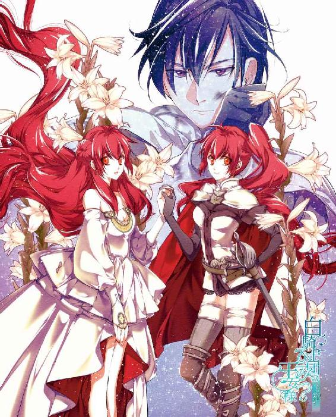
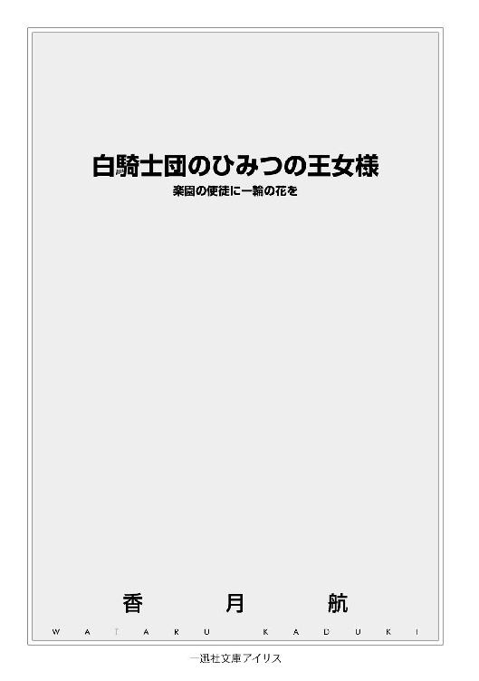
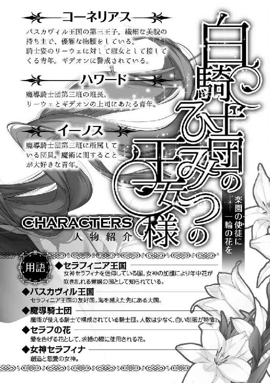
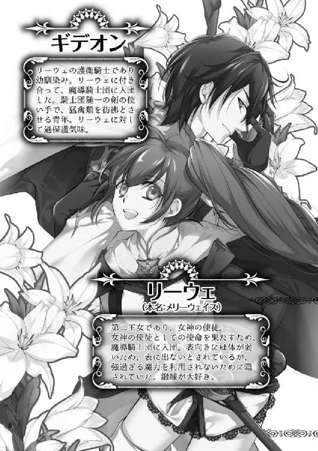
イラストレーション ◆ 増田メグミ
白騎士団のひみつの王女様 楽園の使徒に一輪の花を
眠りにまどろむ世界の中で、地平線がゆっくりと燃えていく。
夜明けと呼ぶにもまだ早い時刻、薄闇の広がる王都の外れの森。眼前では、白い外套がくるくると踊っている。
「よっと！」
風を切る鋭い音が耳に届く度、湿ったうめき声がそれに続く。
獣に似ているが違う。ましてや人とも違うその声は、翻る外套の先で唸りながらこちらを警戒しているようだ。
「おい、そっちはまだか？」
「もう少し！ ああもう、硬い！ こうなったら......」
低い男の声が問いかけると、踊っていた外套が軽い足音を立てて地面に降り立つ。純白の上を滑るのは、鮮やかな赤い髪。
「我が君、偉大なる女神セラフィナよ......」
はっきりとした若い女の声が響く。レイピアを握る細い腕を掲げると、その切っ先から光が溢れ、キラキラと輝き始める。
――しかし、それ以上は何も起こらず、ほんの数秒で光も消えてしまった。見上げた彼女の表情が歪む。
「やっぱり駄目......ごめん、五秒待って！ 魔術使うから！」
「なら、俺が斬った方が早い」
「はあっ!?」
そんな彼女を無視するように飛び出したのは、もう一つ白い外套。
言うが早いか、黒髪の男は一息で距離を詰めると、手にした大剣で目標の腹の辺りを大きく薙いだ。
ごぽ、と粘着質な音を響かせて、上下で真っ二つに裂けたそれが転がる。言葉の通り、五秒もかからなかった。
「それ、私の獲物だったのに！」
「暴れたい気持ちはわかるが、時間を考えろ。魔術はうるさい」
「......ッ！ わかったわよ！」
汚れを払い剣を納める男の動作には、一切の無駄もぶれもない。同様に淡々と告げられた正論に、女の方がぐっと言葉を詰まらせる。
突きに特化した細いレイピアでは、恐らく刃が通らなかったのだろう。魔術を使い損ねた彼女の苛々とした様子が伝わってくるが、それもすぐに落ち着く。「......私、情けない」と聞こえたのは空耳だろうか。
「ほら、また来たぞ。あれならお前でも行けるだろう？」
「お気遣い有難う！ 今度は手出しいらないからね」
「はいはい」
そんな会話をしている間にも、二人の前には黒い泥のような物が這い寄って来ている。悪臭を漂わせながら周囲を腐らせるそれは、生物とは到底呼べないおぞましい姿だ。
不定形の化け物――『魔物』と呼ばれる脅威を目前にして、しかし二人に恐怖や怯えといった様子は見えない。己よりも二倍以上丈のある魔物に向けて、レイピアの刃が光る。
「......これが、『魔導騎士』」
白い外套が、また踊る。その美しく鮮やかな太刀筋に、迷いはない。
いまだ夢を見ているような眼前の光景に、ただ色違いの外套の裾をぎゅっと握りしめた。
ほどなくして、異形のモノは全て退治されたようだ。わずかに白みだした空を背にして、当たり前のように細い手が差し出される。
腰を抜かしていた新米騎士は敬礼の姿勢をとって、静かに頭を下げる。
黄金色の瞳の彼女の微笑みは、昇り始めた太陽のように眩しかった。
――その国は、正しく『楽園』である。
創造の主、女神セラフィナが最初に降り立ったとされるその地は、年中花が咲き乱れる美しい国である。肥沃な土壌と豊かな資源に恵まれ、空気も水も澄み渡り、天災すらもその地を避けると言われる地上の楽園。
その名を『セラフィニア』。かの女神の名を冠する、唯一にして最上の国。
しかしこの楽園も、たった一度だけ『病魔』の脅威にさらされたことがある。
どこからともなく入り込んだそれは瞬く間に国中に蔓延し、多くの人々を死に至らしめた。敬虔な信徒である王妃すらも病に倒れ、女神の国は祈り願う心を失いかけてしまっていた。
王妃の具合は悪化する一方。誰もが最悪の結末を予期する中、それでもなお祈りを続けた国王夫妻に――奇跡は起きた。女神から『天啓』が下りたのだ。
〝これはただの病ではなく、『滅びと虚ろの王アドムヴル』が起こした災厄である〟と。
他国では『邪神』とも呼ばれる、女神と真逆の性質を持つ〝宿敵〟アドムヴル――セラフィニアでは口にすることすら躊躇われる名に夫妻が戦慄する中、女神は続ける。
〝貴女のお腹の子を、私の『使徒』として遣わせれば、病魔を祓うことができるでしょう。けれど、その子は戦いの宿命を負うことになります。それでも？〟
憂いをはらんだ女神の声に、王妃はまだ膨らみの少ない腹を撫でる。このままでは自分はもちろん、きっとこの子も助からない。それならば――。
国王夫妻は静かに頷いて返し、女神の祝福はそこに成った。
病は嘘のように消え去り、臥せっていた王妃も驚くほどの速さで快復した。その上、三人目の御子の懐妊が無事に発表され、国はますます喜びに沸くことになる。
『救国の姫』と国中から祝福される第二王女メリーウェイス姫。沈んだ楽園に、再び信心を取り戻させた、女神からの遣い。
今から、およそ十六年前の出来事である。
＊ ＊ ＊
石造りの部屋の中には、今日も凛とした冷たい空気が満ちている。
花が咲き乱れるセラフィニア王宮と目と鼻の先にあるにもかかわらず、無駄を一切そぎ落とした質実剛健な造りの王国騎士団詰め所の一室。
花も飾ってなければ、壁にはカーテンすらもかかっていない。ただただ広い部屋の中には、円状に並んだ紫檀の机と椅子があるのみ。
数は二十近く、しかし今座っているのは一人の少女と一人の男。
詰襟の白い制服を二人共に首まできっちりと留めており、華美にならない程度の金刺繍が端を飾る。膝丈までの外套には汚れ一つなく、揃いと思しき革のブーツも隅まで磨きあげてある。
殺風景な部屋の中で唯一、まるで芸術品のような佇まいの二人は、空きの沢山ある円卓で、何故か隣り合った席に並んでいた。
「はあ......」
少女の小さな口唇から、本日何度目かのか細いため息がこぼれる。華奢な両手には厚紙が握られており、それを窓から指す陽光にかざしている。
見るからに上質な厚紙には、金箔で押された王家の紋章――まごうことなき王国公式書類を少女はぞんざいに扱いつつ、少し眺めるとまたため息をこぼした。
目が滑るほどびっしりと書き込まれた文字は、何度光にかざしても、減ることも消えることもない。
「おい、リーウェ。他のヤツの前でそれを出すなよ？」
「わかってる。貴方の前でだけよ、ギデオン」
「ならいい」
目ざとく飛んできた叱責に「いつも通りの答え」を返せば、少女――リーウェの鮮やかな赤髪がくしゃりと揺れた。
（すぐ子供扱いするんだから）
男性特有の長く無骨な指が頭を滑る度に、不満と温かさが胸に入り交じる。もうすぐリーウェも成人である十六の誕生日を迎えるというのに、いつまで経っても男――ギデオンの扱いは変わらない。
いつも隣に座り、当たり前のように頭を撫でてくる。はっきり「嫌だ」と言わない自分もいけないとは思うものの、相手の方にも問題がある。
「ギデオン、撫でるのやめてってば。髪ぐしゃぐしゃになるから」
「ああ、そうだったな」
悪びれた様子も見せず、ギデオンの指は頭から離れ――ることはなく、撫でる動きを止めて髪を梳くやり方に変えるだけ。ここまでがいつも通りの二人のやり取りなのだ。
十年来の幼馴染みに今さら淑女扱いを期待はしないが、何度注意してもこのやり取りを止めてくれないことには困っている。おかげでリーウェは、凝った髪型とは無縁の生活だ。
もっとも、騎士を志願するリーウェ自身が、着飾るような機会から逃げていたのも事実だが。
「こういうところを直さないから、ギデオンはモテないのよ」
闇のように深い黒色の髪が縁取るギデオンは、キツめではあるものの整った容姿の男だ。特に目。猛禽類を思わせる鋭い黒眼にはほんのりと赤が混じっていて、吸い込まれそうな不思議な魅力を醸し出している。まるで、夜空に浮かぶ細い三日月のように。
顔立ちはもちろん、騎士として鍛えられた引き締まった体に、背も高く脚も長い。外見はかなり良い分類で、その上実家は侯爵位を賜る貴族だ。
こんな特上物件に未だ良縁が来ないのは、性格に難があるからとしか思えない。
「このままじゃ、私の方が先に結婚しそうね」
「それはないから安心しろ」
何の根拠があるのだか。呆れるリーウェの髪は、相変わらずギデオンがいじり続けたまま。それも無邪気に笑いながら、梳くだけでなく指に絡ませて遊んでいる。リーウェより六歳も年上のこの〝大きな子供〟が、他の淑女にこんな失礼なことをしでかしていないよう祈るばかりだ。
髪のことはもはや諦めて、リーウェはまた両手に握る厚紙へ視線を向ける。
端までぎちぎちに書き込まれている文字は、全て人名とその人物の略歴だ。確かな調査の元で作成された、『ある舞踏会』の公式参加者目録。
「何度見直しても、信じられない人数だわ......」
「不満そうだな」
「貴方もね」
開催日はもう間もなく。主催はこの詰め所から回廊一本で続く、この国の王家。
つまり、ここに勤める者たちの主君が催す行事であり、忠誠を誓う王国騎士団員ならば、成功のために全力を尽くさなければならないのだが......。
「何を考えて、こんな馬鹿げたことを企画しちゃったのだか」
「全く同感だ」
誰が聞いても不敬罪になりかねない不満をこぼしつつ、今度はギデオンも揃ってため息をこぼす。
特にリーウェにとって、この舞踏会は非常に意味があるものなのだ。とても大切でとても不本意で、そしてとても馬鹿馬鹿しい。何故なら――......。
「ただいまー！ あれ？ 二人とも、もう来てたのか」
ほの暗い思考を遮るように、円卓の真向かいの扉がノックもなく開けられる。同時に飛び込むのは、リーウェもギデオンも聞きなれた爽やかな若い男の声。
「おかえり、ハワード班長。イーノスは一緒じゃなかったの？」
「え？ 一緒に帰って来たけど......ああ、後ろでバテてる!?」
班長と呼ばれた垂れ目が印象的なハワードは、分厚い書類を抱えたままこてんと首をかしげる。辺りを見回すと、己の後方に捜し人を見つけたようだ。
「イーノスしっかりしろ、もう着くから」
「うう、日差しが目に染みる......私は駄目です。置いて先に行って下さい......」
「はいはい、大げさなヤツだな」
やがて、引き摺るように連れて来られた馴染みの人物を、二人も苦笑しながら迎え入れる。
体格も良く活動的な印象のハワードとは逆に、さらさらの長い淡緑色の髪を揺らしながら入って来たのは、線が細い印象の美丈夫だ。しかし、特徴である縁のない眼鏡もずり落ち、くたびれた装いのせいで美形が台無しになっている。
「お疲れ様、イーノス。今回は何日寝かせて貰ってないの？」
「二日と少し、でしょうか。ですが、とても充実した日々でした......城の魔術師たちもますます腕を上げていて。今回も完璧な仕事をしてきましたよ！ この〝瞳の輝き〟にかけて！」
「......はいはい」
さっきまでぐったりとしていたくせに、『魔術』の話になった途端に恍惚とした口調でイーノスが顔を上げる。レンズの奥の鮮やかな橙色の目を輝かせて。
「班長、この人寝かせた方がいいわよ」
「ある意味いつも通りだけどな。イーノス、いい子だからそのまま奥の部屋へ行こうな」
イーノスが魔術の話を始めると長くなるのは、皆十分に知っている。色々と語りたそうな口をふさぐと、入って来た時と同じように、引き摺るように奥の仮眠室へ連れて行った。
（瞳の輝き、ねえ）
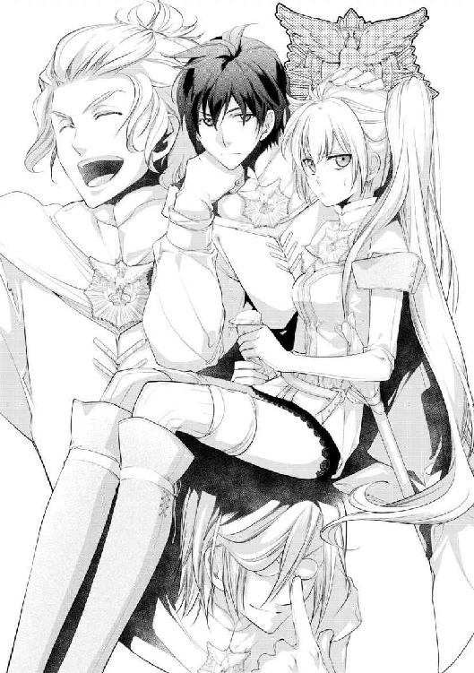
騎士団に籍をおいていても、イーノスにとってそれは変わらず誇りなのだろう。もっとも、それはリーウェと〝同じ部隊〟に所属する者なら、皆同じなのかもしれないが。
連れを置いて戻って来たハワードが、苦笑するリーウェを見つけてまた首をかしげる。彼は髪に特徴が出たらしく、毛先は地の白茶色をしているのに、根元からの半分は夕日のような赤い色だ。
体に出る『赤』は特別な色で、その輝きはそのまま魔力の強さを表している。
大抵出るのは髪か目のどちらかで、ハワードのように『赤』が出るのが一般的な色。イーノスの目の『橙色』はそれよりも強いことを示しており――。
「............」
おもむろに窓ガラスに近寄れば、年頃のやや華奢な少女が映りこむ。
リーウェの髪は、炎を閉じ込めたような鮮やかな赤。そして、瞳の色は美しい『黄金』だ。魔力を推し量る色では最上の輝きであり、かつ髪にも目にも色を持つリーウェは、生まれた時から異端視されるほど魔力が強かった。
その『理由』も知っているし、周囲の人間に理解があったのでここまで成長できたが、状況が違っていればどうなったか知れない。
ゆえに、体の色を誇るイーノスの考え方にリーウェは賛同できないのだ。好きなものに愛を注ぐのは、良いことだと思うけれど。
（それに、色だけ出ていても、今の私じゃ......）
思い出すのは今朝の〝失敗〟。最上なんて、今のリーウェには皮肉もいいところだ。決して弱くはない。それでも、もしギデオンが同行していなかったらと思えば、焦りが胸を焼いた。
「......俺はお前の髪が好きだぞ、リーウェ」
ふと、ガラスに重なる影に振り返れば、静かだったギデオンがすぐ近くに居て、またくしゃっと髪を撫でる。
見上げて目を合わせれば、そこにほんの少し赤が混じっているだけで、ギデオンはほとんど黒色をしている。イーノスからすれば『ふさわしくない』出で立ちなのだろうが、だからこそ彼の色に安心してしまうのかもしれない。
「......ごめん、今日はちょっと神経質になってるみたい。ありがと。でも、髪はこれ以上乱さないで」
「ぐしゃぐしゃ可愛いじゃないか」
「ちょっと、ギデオン喧嘩売ってる？」
「はいはい、オレを無視してイチャつくなよ幼馴染み組」
ぱん、と手を叩く音が響き、しぶしぶながらギデオンは先ほどの席へ戻っていく。続いてリーウェも円卓へ戻るが、これ以上はごめんだと三席離れたところに座った。
気付いたギデオンが移動しようとしたが、ハワードがちょうど間に座り、ようやくとばかりに持ってきた書類を円卓に広げていく。
「仕事だ。わきまえろよ、ギデオン」
「............わかった」
低い音の返事は拗ねた子供のようだったが、それならそれで躾としてわきまえて貰おう。何度言っても止めないギデオンが悪いのだから。
ハワードが二人に振り分けた書類へ目を向けて、リーウェも仕事用の頭に切り替える。先ほど眺めていたものほどではないが、こちらもまた質の良い紙の公式書類だ。
上部の見出しには『メリーウェイス王女殿下誕生記念舞踏会について』と達筆な字で記されている。
「......王女殿下、ねえ」
「なんだ？ 気が乗らない感じだな、リーウェ。いつも真面目な君が珍しい」
「馬鹿馬鹿しいなーと思っちゃうのは仕方なくない？」
ぱらぱらと読み進めていけば、王国騎士団員の配置・割り振りなどがこと細かく記載されている。その警備の厳重さ、人員の多さ。文面を読むだけでも、類を見ないほどの力の入れっぷりだ。
「メリーウェイス王女は〝特別〟だからな。オレたち『魔導騎士』を投入するのも仕方ないことだ」
トンとハワードが胸に手をあてて、敬礼のポーズをとる。
『魔導騎士』とは『白』をまとう、騎士団でも極めて少数の部隊。騎士でありながら魔術も使える特別な人間だけが名乗る役職だ。リーウェはもちろん、他の三人も全員が魔導騎士であり、ハワードを班長とした一班で活動している。
少数精鋭を地でいくこの部隊は、王国でも最強と名高く、イーノスのように誇りに思う者も多い。本来はもっと戦闘の多い場所や重要な砦などへ配属されるのだが。
「......特別、か。だからって、全部でたった二十人しかいない魔導騎士を、八人も導入する必要があるのかしら？」
「オレは八人〝しか〟って思ったけどな」
今回の舞踏会には、任務で離れられない者以外の魔導騎士が配置されている。このハワード班は、元々王都で務めていたため四人全員が。他の班からは、何とか手の空いた者が任命されて同じく四人。
しかし、国が誇る選良部隊の魔導騎士を八人も集めるなど、リーウェが知る限りでは異例の事態である。それも、大きな戦闘がある訳でもない。メリーウェイス王女......この国の『隠された第二王女』の誕生祝いのためだけにだ。
「まあ、同じ女のリーウェとしては思うところもあるだろうけど、仕事は仕事だ。とりあえず、客間の用意ができたらしいから、これからギデオンと確認に行ってくれ。リーウェは特に、女性の部屋をしっかりな」
「お任せを、ハワード班長。他には？」
「大丈夫だ。イーノスも夕方までには起こすから、確認が終わったらこっちに戻ってくれ」
「了解」
広げた書類から必要ないくつかを抜き取ると、慣れた手つきで略式の敬礼を交わす。ずっと黙っていたギデオンも目配せをして頷くと、すぐさまリーウェの隣へと移動した。
「ちょっと、もう頭撫でるのなし！ これから王宮の方に行くんだからね！」
「ああ」
くせのように頭に伸ばされた手を振り払い、リーウェがキッと睨む。ギデオンの方は気にした素振りもなく、払われた手をそのまま肩へとまわしている。
「何度も言うけど、仕事だからな君たち。......そういや、明け方に報告があった街外れの魔物の件は、結局見間違えだったのか？」
「居たぞ。俺とリーウェが片付けた」
「あ、そ、そうか。......相変わらず、頼もしいことだ」
にや、と一瞬不敵な笑みを返すと、二人分の足音は遠ざかっていく。
「本当に強いし頼もしいんだよな、あの二人。時と場所を考えてイチャついてくれれば、もっと最高なんだけど」
ぽつりと呟いたハワードの声は、ギデオンの耳にはもちろん届かなかった。
＊ ＊ ＊
「おい、リーウェ待て。俺からあまり離れるな」
「うるさい。神経質になってるって言ってるじゃない」
部屋から出てすぐに、リーウェは大股で廊下を歩き出した。まるで逃げるような行動に、ギデオンも足早にそれを追う。
と言っても、歩幅が全く違うためすぐに追いついたのだが、それがまた気に障ったのか、頬をふくらませながら黒眼から顔を逸らした。
「何を怒っている？ 髪のことなら、俺が後で直してやるぞ」
「ギデオン下手だから絶っ対触らないで。そうじゃなくて......さっきの書類。配置の人数がまた増えてたから」
「ああ、あれか」
先ほど持ってきた書類に重ねて、ハワードの前では隠していた金箔付きのものを差し出す。配置の最終人数は、リーウェが持っていたものよりも十数人増えている。魔導騎士の導入だけでも異常なのに、さらに他の騎士たちまで増員するなど、リーウェには信じがたい事態だ。
「それは仕方ないだろう。ハワードも言っていた通り、メリーウェイス王女殿下は特別だからな。俺にとっても」
「何よ、貴方まで嫌味？」
不服そうに眉を顰めるリーウェに、ギデオンはどこか残念そうに苦笑を返す。
第二王女メリーウェイス。もう間もなく成人を迎える『隠された王女』。
本来なら政略結婚に使うぐらいしか役目のない、微妙な立場の王女が特別視されるのは、十六年前の『災厄』が深く関わる。
多くの死者を出したあの病に倒れつつも、母たる王妃は胎内の王女を守り、そして王女の誕生とともにセラフィニア王国は平穏を取り戻した。
女神セラフィナの遣いと称える声は今も多くあるが......当の本人は〝表向きには〟体が弱いという理由で、国民の前に一度も姿を現したことはないのだ。
その王女が、今度の舞踏会でようやく人前に出てくるという。周囲の関心が高いことも、警備が厳重になる理由もわからなくはない。だが。
「私は騎士団に置いて貰って、皆がいつも頑張っているのを見てる。忙しいことも知ってる。だからこそ、こんなふざけた催しに巻き込むのは我慢できない」
苦虫を噛み潰したような表情で、リーウェは胸元を握りしめる。俯いた拍子に顔にかかった赤髪を、ギデオンの長い指が滑るようにかき分けた。
「......その言葉は、ヤツらに直接言ってやれ。〝メリーウェイス王女殿下〟」
「貴方が王女殿下とか呼ばないでよ」
久しぶりに呼ばれた〝本名〟に、リーウェはまた不満そうに顔をしかめる。
何と言うことはない、事実なのだ。
かのメリーウェイス王女は『女神の遣い』であり『祝福の子』である。十六年前の病を祓ったのも、女神セラフィナの力をその身を通して広めた王女だ。
女神の〝使徒〟メリーウェイス――現在の愛称をリーウェと言う。
「あっギデオン！ 髪！」
「乱してないだろう？」
また払うように頭を振れば、鮮やかな赤が舞う。リーウェが隠れている原因は、主にこの外見のせいだ。
女神の使徒として生を受けたリーウェは、一目でわかるほどに強い力を持ってしまった。鮮やかすぎる赤髪に、ほとんど産まれない黄金の瞳。たった一人で一軍隊に匹敵するほどの力を秘めているのだ。
いくら王女とは言え......いや、第二王女という微妙な立場だからこそ、リーウェの処遇は政治的・軍事的に見て、極めて危うい状況だった。セラフィニアは平和な国だが、規模としては小さい方だ。領地拡大を目論む者も少なくはない。
苦肉の策として、メリーウェイス王女は生まれてすぐに隠されることになった。正体は王家に近しい者しか知らされておらず、成長した王女は『類まれな素質を持ったただの国民』こと現在の騎士団員リーウェとして、ようやく表に出てきたのである。
当然ながら、正体を知るギデオンもただの同僚ではなく、本当は王女の近衛騎士だ。実家の侯爵家も『リーウェ』の後見人として協力している。
......もっとも、十年来の幼馴染みであることは変わらないし、リーウェの扱い方も演技でもなんでもないのだが。
「......これはね、もう諦めているのよ。私の使命を果たすためにも、必要なものだし」
ギデオンが絡ませた髪をほどきながら、ぽつりと声が落ちる。
リーウェが〝生まれるために〟力は必要だった。使徒でない自分は、生きていなかったのだから、外見が変色するのは仕方ない。今の生活にも文句はない。
「だけどね......この舞踏会は、やっぱり馬鹿馬鹿しいと思うのよ!!」
語尾を強めた声で、ギデオンの鼻先に厚紙がつきつけられる。金箔付きの秘密の書類。
その最上部には『メリーウェイス王女を捜せ舞踏会』と間抜けな名前が書かれていた。
「さっきも言ったが、俺も全く同感だ。叶うなら今からでも中止を申し立てたい」
「そうよね!? 絶対おかしいわよね!? 何で普通に顔見せじゃいけなかったのよ！」
厚紙をゆるゆるとどけるギデオンに、鼻息の荒い同意の声が飛んで来る。
リーウェが憤る理由は、この舞踏会の開催方法である。いくら隠れていた王女の初公開とはいえ、普通の舞踏会ならここまで騎士団員を巻き込むこともなかったはずなのだ。
「何が！ 王女を捜せ、よ！ 絶対に頭おかしいわっ！」
「はいはい」
声を張り上げ書類を握り潰さんとするリーウェを気遣いつつ、周囲は随時確認しながら、ギデオンはため息をつく。いつの間にかまた頭を撫でているのだが、リーウェは気付いていないようだ。
......ことの始まりは、今から二月半ほど前まで遡る。
その日、王宮では国王陛下と有力貴族たちによる、大規模な会議が行われていたそうだ。
今後の国の政を決める大事な場で、もしかしたら空気を和ませようとした冗談だったのかもしれない。
ある貴族がこう言った。「第二王女殿下は、本当にいらっしゃるのですか？」と。
その一言は王の逆鱗に触れた。愛妻家で有名な王だが、同様に非常に子供思いであることも有名だ。第一王女が嫁いだ時も、相手側にかなりの無理難題をふっかけた挙句、初夜は娘を思ってずっと泣いていたという話が残っている。
空気を凍りつかせ震える貴族たちが見守る中、王は『失言』をした貴族を罰するでもなく、静かに怒りながらこう返した。
「私の大事な娘がいないだと？ では、宝探しでもさせてあげようか？ どうせお前たちには見つけられないだろうがね」
その言葉を聞いた時、貴族たちの心は一つになったそうだ。
すなわち『言質とったり！』と。
あとはもう酷い話だ。あれよあれよと今回の舞踏会は企画され、王自らの発言がもとゆえに、断れない事態になってしまったのだ。余談だが、王はこの件で王妃にもの凄く怒られて、しばらく沈んでいたらしい。
「だいたい、王女捜し舞踏会って何よ......なんでそんなこと思いついちゃうのかしら」
「なんだ、詳細は聞いていないのか？ だったら......」
「違う、知ってるから説明はいい！ 考えた頭を疑いたいだけよ」
額を押さえながら、また深い深いため息がこぼれる。何度目か数えるのを忘れてしまったが、幸せが逃げるというなら、もう一つも残ってはいないだろう。
「舞踏会の開催方法もそうだけどね......このふざけた催しに参加希望者が結構いるっていうのも、私には理解できないのよ。第二王女ってそんなに見たいものかしら？」
「お前を見たいヤツはもちろんだが、このセラフィニア王国がそもそも特別だからな。女神にあやかりたいと思う者は多いだろう」
ぽんぽんと軽く頭を叩いてやれば、「むう」とまだ不満そうな声が落ちる。
リーウェも色々と納得がいっていないようだが、肝心なところに気付いていない節がある。
隠された王女を見たい好奇心、女神セラフィナの加護を得たい願望。それはもちろんあるが、もっと単純なことが参加者――とりわけ男を集める原因なのだが。
「......何故わからないのだか、な」
「何か言った？」
「何も。舞踏会なんて、面倒だと思っただけだ」
怒りを浮かべつつも、年相応の愛らしさが勝るリーウェの様子に苦笑しながら、二人の騎士は仲良く並んで歩いていく。それぞれ微妙にズレたところに憤りと悲しみを覚えながら。
いつの間にか周囲は見慣れた石造りのものから変わり、金装飾が美しい大理石の柱や、いたるところに創世神話が描かれた壁、花の香りが漂う美しい王宮のそれになっていた。
「とにかく、客間の確認だったか？ ハワードの真似ではないが、仕事は仕事だ。済ませてしまおう」
「了解......ってちょっとギデオン！ また私の髪の毛めちゃくちゃにしてる！」
「なんだ、今頃気付いたのか？」
したり顔で笑うギデオンの手の下で、柔らかい赤髪がくしゃっと音を立てる。
慌てて整えるリーウェを横目に見つつ、「お洒落なんてしなくてもいい」と呟くギデオンの声の甘さを、リーウェだけはまだ知らない。
＊ ＊ ＊
――夢を見る。青空と蒼海の境界で微笑む、美しい女性の夢。
その色は掴めず、透き通るような姿であるのに、髪を飾る白い花だけが形を持って揺れている。
『セラフの花』。女神セラフィナの冠を飾る、セラフィニア王国の国花。愛を告げる花。
（いつ見ても、きれい）
生を受けて、もうすぐ十六年。幾度となく繰り返してきた夜の邂逅に、リーウェは溢れそうな涙をこらえて、目を閉じる。
我が君、我が主。慈愛と豊穣の女神。貴女と会う夜は、いつも泣きたくなる。
感極まっているのだと思っていた。けれど、胸を刺す痛みは違うと告げる。
使徒が主の声を聞くのは当然のこと。けれど、何故だろうか。その先の未来に、別れを感じてしまう。
大切な、とても大切な誰かとの、別れ。
（強く、ならなくちゃ）
漠然とした思いがよぎる。別れたくない、離れたくない。だから、私は強くならなくちゃいけない。ちゃんと力を使いこなして、誰にも助けられなくてもいいように。強く。
胸元を握りしめるリーウェに、鈴のような声が響く。
〝気をつけて〟
〝滅びと虚ろの王が、近い〟
「――ッッ!!」
肌に触れる寝間着の冷たさで、目が覚めたと気付いた。
寝室の中はまだ暗く、吐息が響くほど静まりかえっている。ひどく寝汗をかいていたらしく、肌にはりついた布の感触が気持ち悪い。
「神託、なのかな......」
リーウェの小さな口唇から、乾いた声が落ちる。
女神からの神託は、少し前にもあった。ちょうど舞踏会の開催を聞かされた時だ。
「今回の舞踏会......やっぱり、裏で糸を引いているものが......？」
考えてみればおかしな話だ。いくら発端は国王本人の失言とはいえ、あんなふざけた企画があっさり通ってしまうものだろうか？
誰かの、何かの強引な力が働いた。そう考えてしまっても不思議ではない。
（アドムヴル......）
その名を口に出すのは、何年経っても躊躇われる。セラフィナの宿敵。滅びと虚ろの王。
十六年前にこの国に災厄をもたらし、〝今もなお〟どこかに潜伏している悪の根源。
リーウェが生を受けた理由、使徒としての使命は正しくそれだ。
ごく一部の者にしか話してはいないが、かの災厄が起こったのは、この国の誰かがアドムヴルを召喚したせいだ。そして今も、アドムヴルの欠片が入ったまま隠れている。
人の中という見えづらい部分、しかも入っているのは欠片。小さすぎて女神では捜すことができず、使徒のリーウェにその指令が下ったのだ。
......欠片は、まだ見つかっていない。
「なら、この舞踏会で何か動きがあるってこと？」
窓から差し込む冷たい月光に、黄金の瞳が揺れる。
（力がちゃんと使えない時に、か）
無意識に触れた胸の下からは、まだ落ち着かない鼓動が響いている。そのさらに下、リーウェの深い内には、女神から授かった魔力とは別の力の海がある。
魔力が『戦う力』であるならば、こちらは邪悪を祓い、人々を祝福する力。使徒たるリーウェだけが持つ、加護という名の奇跡。穢れを浄化し、勝利へ導くために欠かせない力だ。
「いつから、ちゃんと使えなくなったんだっけ......」
早朝の失敗をまた思い出して、口唇を噛む。
どちらかと言えば、暴発する危険性のある魔力の方が使うのは難しいはずだ。魔術としての使い方次第で、人を傷付けるのだから。
反対に、創造主たる女神セラフィナが与えるのは、慈愛であり祝福である。悪用などできるはずもないのに、何故きちんと使えないのだろう。
「鍛錬が足りないのかしら」
ここのところ忙しくて、鍛錬も努力も足りていない自覚はある。王都の聖堂へもなかなか足を運べないし、祈りや信仰心も足りないのかもしれない。だとしたら、やはり今のリーウェは使徒として認められていないのだろうか。
「......違うわ。我が君は言葉をくれたじゃない。何かが足りないのなら、私の責任だわ」
つい先ほどの神聖な夢を思い出す。女神セラフィナは、使徒として期待してくれているじゃないか。そしてこの国の民もまた、リーウェことメリーウェイス王女に多くの期待を寄せているのだ。
寵児と称えられる己が応えられないのは、ひどく悔しくて情けない。
「......それでも、皆を守りたい」
騎士として、セラフィナの使徒として。これから何が起こっても、必ず自分が守り抜いてみせる。
力が使えない原因はまだわからないが、自己鍛錬を続ければきっと解決の糸口が掴めるはずだ。
「頑張らないと。私が、やらなきゃ」
強い決意を胸に、目を閉じて息を吐く。ひとまずは体を休めて......そのためには、まずこの湿った寝間着を着替えるべきだろう。
寝台を出ると、冷たい床の感触が裸足に染みる。当然だが、着替えを手伝ってくれる侍女などいない。リーウェが生活しているのは、王宮ではなく騎士用の宿舎なのだから。
（私はリーウェだ。メリーウェイス王女じゃない）
今までも、これからも。剣を手に国を守る騎士だ。そのことに不満はないし、使徒としてふさわしい生き方もここにある。必ず証明してみせる。
そう自分に言い聞かせながら、簡素な寝間着を取り出して袖を通す。洋服棚には、王女なら絶対着ないような服ばかりが詰まっている。舞踏会が近くても、ドレスには縁のない生活だ。
「私はこれでいいのよ」
そう、たとえリーウェが主役の舞踏会だとしても、ドレスなんて着てやるものか。あの白い制服に誇りをもって、騎士のリーウェとして成人を迎えるのだ。
苦笑しながら目を閉じる。眠りに落ちる中で、誰かが髪を撫でる幻を見た気がした。
＊ ＊ ＊
翌朝はよく晴れた穏やかな天気だった。もともとあまり天候の崩れない国だが、今日の空はひときわ美しく輝いている。
まるで、今日から始まる第二王女の舞踏会を祝福するかのように。
「えーと、じゃあもう一回確認ってことで。本日より五日間かけて開催される、第二王女殿下の誕生舞踏会の説明を始めます」
昨日と同じ騎士団の詰め所の一室。窓の外と同じぐらい爽やかな声で、班長たるハワードが一人一人と目を合わせながら笑う。
いつも通りに首まできちっとボタンを留めて制服を着こなしたリーウェ、ギデオン、イーノスの三人も、それぞれの表情で頷いて返し、手元の資料へ目を落とす。
昨日は結局、確認作業中に他から呼ばれたりして、再度集まることはできなかった。『魔導騎士』の有名さにも困るものだ。
しかし、今日からはいよいよ舞踏会の本期間。他の団員とは違った立場にあるリーウェも、愚痴を言わず真剣に耳をかたむけている。
「まあ、皆耳にタコができるぐらい聞いているだろうけどな。さっきも言った通り、期間は五日間。最終日の日付が変わったら終了だ。翌日は舞踏会でなく、王都を練り歩くパレードがあるからな」
コンコンと机を叩く音が五回響き、流れのまま指先は隣のイーノスに向けられる。
昨日とはうって変わって張り詰めた空気をまとうイーノスは、眼鏡をくいと一上げした後、机の上に小ぶりの白い花を置いた。
「で、こちらが昨日まで私たちが作っていたもの。今回の参加者の証となる『セラフの花』です。国花を知らない者はいませんね？」
「セラフィニアでそれは愚問じゃない？」
「ごもっとも」
不信心者よりも狂信者を捜した方が早いこの国で、『女神の冠の花』など幼子でも知っている常識だ。
漏斗状に咲いた花弁は白く、この国では男性からの求婚に使われる花としても有名なのだが。
「なんでセラフの花が参加証なの？」
「何故って、今回の舞踏会での用途に、最も適した花だからですよ？」
いぶかしげに尋ねたリーウェに、「むしろ聞かれる意味がわからない」とでも言いたげにイーノスが首をかしげて返す。
「......求婚、するの？ 参加者が？ え!?」
「そうですよ？ 今回の王女殿下捜し、これだと思った姫君にこの花で求婚をするのですよ。聞いていませんか？」
知りませんでした。そう思い切り顔に浮かべるリーウェに、ハワードとギデオンが共に苦笑を浮かべる。ギデオンの方は「やはりか」とやや呆れた様子も窺える。
今回の舞踏会の男性参加者は全て、第二王女への『求婚者』である。
それは、開催が決定した時点でほとんどの者がわかっていたことなのだが、当のリーウェ本人は今の今まで気付いていなかったらしい。頬を真っ赤に染めて、困惑気味に視線を泳がせている。
そもそも、第二王女が表舞台に出て来るという時点で、求婚者が殺到することは火を見るより明らかだった。
現在の国王夫妻は、共に見目麗しいことで非常に有名な二人であり、その長男の王太子もすでに嫁いだ第一王女も、絶世の美貌を持つ王族として常に注目の的だった。
そこに来て、第二王女は〝隠されて〟いたのだ。「あまりの美しさに、王家が秘匿しているに違いない」という噂が出回るのも仕方ないというものだろう。
逆の理由を考えないのは、『宗教国家』としての面も強いセラフィニアゆえと言うべきか。『女神の加護によって、王族は見目も麗しい』と信じられているので、その寵児と称えられる第二王女が美しくないわけがない、というのが世論だ。
女神の寵愛を受けた絶世の美女とくれば、こぞって男たちが求婚に乗り出すのも致し方ないと言えよう。今回はこのふざけた開催方法のおかげで、かなり少なくなっているぐらいなのだ。
「お前が戸惑ってどうする、〝リーウェ〟」
「あっ、そ、そうよね！ ごめん......」
やや不機嫌そうなギデオンに注意を兼ねた指摘をされて、リーウェは慌てて頬を押さえる。
実際、王妃似のリーウェの容姿はかなり整っている。人目を惹く色合いもあるが、はっきりとした目鼻立ちに庇護欲をそそる少女らしい体つき。お堅い騎士団の制服に化粧も装飾もない今の状態ですら、振り返って見る男がいるほどだ。
これがちゃんとした装いをしようものなら、兄・姉同様に周囲の視線を釘付けにするだろう。
面白くない、と隠すこともなくため息をつくギデオンに、何とか平静を装いつつも花を気にして瞬きを繰り返すリーウェ。そんな二人に、微笑ましいなぁとイーノスも笑みをこぼした。
「さて、リーウェの初心な姿も堪能しましたし、続けましょう。セラフの花の使い方はわかりますね？」
「そ、それはもちろん！」
からかい交じりのイーノスの声に、リーウェもムッとしつつも姿勢を正す。
セラフの花を用いての求婚方法は、極めて簡単だ。男性は意中の女性の髪に、この花を差して告白すればいいだけ。花冠を作ってかぶせるという方法もあるが、冠を編める男もそう居ないため、差し込むやり方が一般的とされる。
受けた女性は、了承ならば男性の手を両手で握り返し、断る時は花を引き抜いて返せばいいだけだ。他国の人間でもすぐにできるだろう。
「当然ですが、ただの花ではありません。枯れないよう加工がしてある他、持ち主を追跡できる魔術が仕込んであります。参加者たちも、これぐらいのものは折り込み済みでしょう」
「わかってると思うけど、この花持ってないと会場には入れないからな。警備任務にあたる時は、必ず手に持つか身に付けさせること。確認徹底を忘れずに」
長い髪をかき上げて不敵に笑うイーノスに、補足とばかりにハワードが続ける。この二人も同期のせいか、日頃から非常に息の合った言動が多い。「いつ見ても面白いな」と幼馴染み組は口には出さずに笑い合ってから、頷いて返す。
「あとはそうだな......今回は『従者は必要最低限で』っていう制限をつけている。過度の付き人や荷物を持ち込む輩がいたら、随時確認と情報共有な。他には......」
「......もう怪しいヤツは、各個撃破でいいんじゃないのか？」
「それができたら楽だけど、今回は誕生祝いだからなあ。極力血生臭いことは避ける方向で頼むよ」
全身で面倒臭いと表しながらつっこむギデオンに、半ば同意をしつつも班長らしく注意だけは入れておく。結局のところ力が売りの騎士にとって、最終手段は戦いでしかないのだが。
それから二、三言注意を交わして、時計を見ながらハワードが解散の言葉を告げる。すぐさまリーウェの頭を撫でようと伸びた手は、三人分の呆れ声とともに叩き落とされた。
「ねえギデオン、学習してくれない？ 懲りてくれない!?」
「くせだからな、悪い」
そう言いつつも全く悪びれた様子はないので、気を抜けばまた今日もくしゃくしゃにされる運命だろう。「帽子でもかぶろうか」とため息をつくリーウェに、また指が伸び、頭ではなく頬に触れる。
「今度は何よ？」
「......朝から顔色がよくない。〝あれ〟に何か言われたか？」
声量を気にした問いかけに、指したものを悟る。女神をあれ呼ばわりするなど不敬もいいところだが、ギデオンの表情が思いのほか真剣で、つい注意を口ごもってしまった。
「......昨日、夢を見たわ。我が主の宿敵が、近いって」
「アドムヴルが？」
「名前言わないで。穢れる気がするから」
小声ながら即座に嫌悪感を表すリーウェに、「潔癖だな」と苦笑が返される。セラフィニアの国民なら誰でも嫌がる名前だというのに、むしろ普通に口にできるギデオンの方が変わっている。
「とにかく、何かあるかもしれない。警戒しないと」
「主役なのにご苦労なことだ。だが、気負いすぎるなよ。お前には俺がついている」
「......そうね」
切れ長の黒眼がふわりと微笑む。美形の騎士が守ると言ってくれているのに喜べないのは、リーウェもまた騎士であり女神の使徒だからか。メリーウェイス王女なら、素直に喜べただろうか。
（やっぱり私は、まだ守られる立場なのかな）
国を守るのが己の使命だというのに、一人の護衛にすら心配されてしまっている。今の自分では、やはりまだ足りないのだろう。表情を沈ませるリーウェに、ギデオンの方が不思議そうに見つめる。頬から上がろうとした手だけは、反射で叩き落とされたが。
「何にしても、気を抜かずにいくわよ。仕事だし。そうだギデオン、どこかで時間あったら、鍛錬付き合ってよ！ ここのところ忙しくて、ちゃんとできてないし」
「............いつも思うが、お前は自虐趣味でもあるのか？」
「え、なんで？」
いい話題転換だと思ったのだが、そう思ったのはリーウェだけだったようで、ギデオンは眉間に皺を刻みながら呆れている。声量を戻したので、残りの二人にも聞こえたのだろう。同期組の顔に浮かぶのも驚きと戸惑いだ。
「あちこちで散々仕事をしているのに、この上でまだ鍛錬などと。お前に休憩という概念はないのか」
「だって、ちゃんと剣を握ってないと腕が鈍りそうじゃない。素振りぐらいはしてるけどさ」
「リーウェ、君には魔物が出たらその討伐にも行って貰ってるよな？ あれじゃ足りないか？」
「足りてない......みたい？」
何気なく返すリーウェに他の三人は揃ってため息をこぼす。イーノスにいたっては「これだから脳筋は」とやや侮蔑の色も交じっている。
「お前は十分に鍛えているし、強い。休める時は休め」
「私より強いギデオンに言われてもな。昔は私の方が強かったはずなのに......」
「じゃあ負けてやるから、休憩はちゃんととれ。お前は女なんだぞ？」
撫でる代わりとばかりにつつかれて、リーウェの頬がふくらむ。女だからと言いながら、いつだって子供としてしか扱わないくせに。
「どちらにしても、これから入城の監視に就くのだろう？ 鍛錬の時間はないぞ。何を焦っているのか知らないが、少し落ち着けリーウェ」
「わかってる。もういいわよ」
ふいと逸らした顔はむくれていたかもしれない。離れた手の温度を少し名残惜しく感じつつも、ギデオンに背を向けて扉へ向かう。焦っているのはリーウェ自身も自覚はある。それでも自分は使徒なのだから、いつでも忘れてはいけないのだ。
落ち着かせるために息を吐いて、ちらと背後へ視線を向ける。どうせ後ろからついて来ると思っていたギデオンは、円卓の前でハワードにつかまっていた。
「いや、ギデオンはオレとだからな？ リーウェはそっちの指示書通りに、イーノスと組んでくれ」
「断る。俺はリーウェから離れたら死ぬ」
「うるせえ仕事だよ！ 君は魔力探知できないだろ！ イーノス、そっちは任せた」
「任されました」
嫌だ、離せと低い声で続けるギデオンを、昨日のイーノス同様に引き摺りながら、二人は扉から出て行く。
「行きますよ、リーウェ。それとも、貴女も彼がいないと死にますか？」
「し、死なないわよ。珍しいなと思っただけ」
涼しい顔で行動を促すイーノスに続きながら、まだ聞こえてくるギデオンの声に、少しだけ胸が温かくなる。
いつも子供扱いするギデオンの方が、よほど子供っぽいじゃないか、と。
＊ ＊ ＊
リーウェがイーノスと入城者の監視に赴いて、最初に迎えたのは緊張に顔を強張らせた少女たちだった。
今回の舞踏会は名前の通り、ほとんどの人間が顔も知らない『メリーウェイス王女』を捜すことが目的である。よって囮と言うと聞こえが悪いが、王女ことリーウェを隠すための女性が多数必要なのだ。
城門から続く高い天井の廊下には簡易の受付机が設けられ、セラフの花を目印に付けた文官たちが、入場者を確認、記録している。この辺りは装飾も少ない方なのだが、紅潮しながらきょろきょろと周囲を見回す者も多い。
従者や侍女たちが大きな荷物を運んで行く中、ちらほらと見受けられるのは単身で入城している少女たち。彼女らは今回のために雇われた誘惑物であり、本来なら社交界には縁のない平民だ。ただ共通して見られるのは、王女と年が近いだけではなく、皆容姿が優れているという点。
（むしろ、私よりもきれいな子が沢山いるんだけど......）
この舞踏会では、男性に『求婚』をされない限り、女性は名乗らないルールだ。美しい壁の花に徹してさえいれば、平民でも十分に囮役がこなせる。
「......だからって、わざわざ罠をこんなに沢山雇わなくてもいいと思うんだけど」
荘厳な王宮の様子や受付の文官におろおろする少女たちを眺めつつ、リーウェは見えないように息を吐く。王家直々の臨時雇いなら、それなりに報酬は貰えるのだろうけど。
「選択肢は多いに越したことはないでしょう。陛下はああいう方ですから、そうやすやすと王女殿下を嫁がせるとは思えませんし」
「いや、顔見せ舞踏会だからね!? 別に嫁ぐ訳じゃないからね!?」
「何故貴女が慌てるのですか？ それに、リーウェは方法をお忘れで？ 私たちが仕込んだセラフの花は、求婚の花ですよ」
無表情の中に退屈さをにじませつつ、イーノスは目線だけリーウェに向けて答える。
確かに、あの花を用いている時点で、ただの解答方法ということはないだろう。だからと言って、今日までずっと隠れていたような得体の知れない女を娶りたいものだろうか。
......政略結婚なら、そんなこともあるのかもしれないが。
「しかしまあ、貴女の意見には同意しますよ。数を揃えたかったのはわかりますが、いささか質がともなっていない」
「え、そう？」
視線を戻したイーノスに続いて、リーウェもゆっくりと入城者たちを眺める。あどけなさの中に女性の色を備えた、愛らしい少女ばかりだ。しかも皆、王妃によく似た金髪に青い目......魔力の色をしているリーウェとは、似ても似つかない爽やかな色をまとっている。
「どの子もきれいじゃない。イーノスの基準が高すぎるんじゃないの？」
よくよく見ずとも、隣のイーノスも美丈夫だ。騎士の制服そのものが女性受けが良いらしいが、さらさらの長髪に眼鏡がよく似合い、他の騎士とは違う知的な魅力も兼ね備えている。彼の視線の先で、少女たちが頬を赤らめてしまうのもよくわかる。
「別に私の顔を基準にはしていませんが。彼女たちより、貴女の方がよほど美しいでしょう」
「はあっ!?」
突然の褒め言葉に応えた声が上ずってしまう。魔術にしか反応しないと思っていた男に、まさか容姿を褒められる日が来るとは。
予想外の一言に頬を熱くさせるリーウェだが......ふと、イーノスの向けた目が自分のどこを見ていたかに気付く。
「............ああ、なんだ。美しいって髪と目の色か」
「ええ。その燃えるような鮮やかな赤、輝く黄金の瞳！ 貴女の細い体のどこに、そのような美しい魔力が秘められているのか、興味はつきませんよ！」
「うわ、変態くさい。近寄らないでくれる？」
ときめきから一転、やっぱり何も変わっていない残念男から退くように距離を取る。顔だけはきれいでも、我が主は二物を与えなかったようだ。ぎらりと光る目から感じるのは興味と好奇心で、恋慕などではない。
「別にいいけどね。どうせ私は舞踏会期間もずっと制服だし。警備と護衛してるだけだし」
「貴女の顔が悪いとは言っていませんよ。私の興味が魔術に偏っているだけで」
「はいはい」
そう言えばイーノスとハワードはリーウェよりも十歳ほど年上のはずだが、これで果たして結婚できるのだろうか。ギデオンにしてもそうだが、ハワード班の面々は、顔はきれいなのに残念な男が多い気がする。
（この人の場合、魔術と結婚するとか言っても驚かないわよね）
宝の持ち腐れとは、きっと彼らのような人間に使う言葉だろう。勿体ないと呆れていれば、イーノスの視線がまたリーウェに絡みついた。
「何よ？ そんなに見つめられても、解析も研究もさせないわよ？」
「しませんよ、そんなこと。改めて見ると、やっぱりリーウェは可愛いと思いまして」
「色がって単語が抜けてるわよ」
「抜けていません。貴女が、ですよ？」
くすくすと楽しそうに笑い出すイーノスに、リーウェは眉を顰めたまま首をかしげる。
「たとえ貴女が赤髪でも金目でもなくても。彼女らと同じような色合いになって、あの集団にまぎれていたとしても。私は貴女を見つけますし、貴女が一番可愛いと思いますよ」
「な、何よそれ」
イーノスが時折見せる柔らかな微笑みは、元々の顔立ちも相まってとても美しい。それこそ、どこかの王子様と言っても疑えないほどに。その希少な表情を、何故リーウェしか見ていない今見せるのかはわからないが。
ただ、落ち着いたはずの熱がまた頬に戻ってきてしまい、リーウェとしては非常に居心地が悪い。
「リーウェはすぐに自分を卑下するから、たまには伝えてあげないとと思いまして。貴女は本当に可愛いですよ。それに、とても頑張り屋さんです。ギデオンだけでなく、私もハワードもそう思っていますよ。女性は得意ではありませんが、私も貴女なら......」
「ま、待って！ もういいから！ 仕事に支障が出るから止めて！」
歌うように褒めるイーノスを、悲鳴じみた懇願が止める。いつの間にか耳まで赤くなってしまったリーウェを見て、イーノスはまた楽しそうに微笑んだ。
「失礼、仕事中でしたね。では今日はここまでに。ただ、嘘は言っていませんからね？ ギデオンが駄目になったら、いつでも私に乗り換えて下さい。歓迎します」
「き、気持ちだけ頂いておくわ」
ギデオンの何が駄目になるのか知らないが、今のところ近衛が変わる予定はない、多分。
眼鏡を少し直したイーノスは、次の瞬間にはもう仕事用の顔に戻っている。妙に甘かったさっきの会話も、からかわれただけだろう。そうわかっているのに、リーウェの心臓はどうにも落ち着かない。
「......大人ってずるい」
「ずるいかどうかは知らんが、俺は傍を離れるつもりはない。そもそも、誰の許可を得て俺のリーウェに絡んでいるんだ？」
「............ん!?」
こっそりと呟いた言葉に、何故か突然低い声が交じった。
慌てて声の主を捜せば、受付机の下から何かが這い出ている。寝転んでなおわかる、体格の良い黒髪の男が。
「ギデオン!? ちょっと、そんな所で何やってるの貴方!?」
「リーウェに男が迫っている気配を感じたから、出てきたまで」
「何を察知してるの!?」
驚くリーウェや文官たちには目もくれず、何ごともなかったかのように立ち上がったギデオンは、そのままイーノスの方へにじり寄って行く。床を這ったせいで制服が汚れてしまっているが、それすらも気にしていない。
「イーノス、何のつもりだ？」
「貴方、『赤』は出ていないくせに、変なところで感知能力が高いですね」
イーノスはイーノスで、笑いながら両手を挙げて降参ポーズをしている。が、どうにも煽るような空気をまとっており、ギデオンの鋭い黒眼はさらに険しくなるばかりだ。
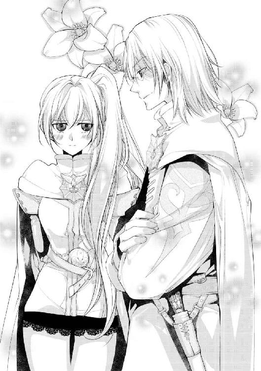
「リーウェに妙な真似をするのなら、俺が許さない」
「ご心配なく、私は彼女の魔力にしか興味はありませんよ」
「......だといいが」
納得していない顔のギデオンに苦笑を返すイーノス。内容は極めてしょうもない会話なのだが、頭突きでもしそうな至近距離で話しているのがよくない。端からは内緒話でもしているようにしか見えないのだ。
にわかにざわめき出す少女たちに、何事かと窺う受付の視線が一人空いたリーウェに刺さる。
「なんで私が......もう二人とも！ 真面目に仕事しないなら帰って！」
何でもないと周囲に謝罪を伝えつつリーウェが睨めば、イーノスは肩をすくめて監視の定位置へ。ギデオンはイーノスを一瞥した後、リーウェの頭を一撫でだけしてから去って行った。
「......なんだったのかしら、あの人」
「さて、可愛い幼馴染みが心配だったのでは？ 地獄耳とはよく言ったものです」
小さくなっていくギデオンの背中を、二人で呆然と見送る。そもそも、いつから受付机の下などに居たのだろうか。リーウェは長年一緒に過ごしているはずだが、つくづく行動の読めない男である。
「ギデオンの担当場所、結構ここから離れてたわよね......」
「まあ来られない距離ではないですよ。普通は来ませんけど。向こうはハワードに任せていますし、大丈夫でしょう、多分。さ、私たちも退屈な作業に戻りましょう」
愛想笑いを作ったイーノスが軽く手を振ると、途端にざわついていた少女たちが頬を染めながら列を正していく。少しだけ問題になりかけてしまったが、もう大丈夫そうだ。
「美形はいいわね、色々と楽にできて」
「どうも」
ため息と共にこっそり呟いて、集団へ視線を戻す。こんなやり取りをしていた間にも、受付からは次々と少女たちが通されて行く。
会話の最中もずっと『魔力探知』は続けていたのだが、特に怪しい人物はまぎれていなさそうだ。むしろ何の反応もないからこそ、魔術狂いのイーノスがリーウェに絡んできたのだろう。
「......しかし暇ですね。能なしばかりでつまらない」
「言い方が失礼よイーノス。一般人に超魔力持ちでも居たら、その方が問題じゃない。何も起こらないことが最良よ、まだ始まってもいないのだし」
「それはそうですが、本当に退屈です。魔術師でも交じっていませんかね」
集団には浮き足だった様子が見えるぐらいで、外的にも魔術的にも、脅威となりそうな人物はいない。
ならば、ギデオンは何を心配しに来たのだろうか？ 男が絡むと言ってはいたが、同じ班員のイーノスを今更警戒する理由も、リーウェにはわからない。
「............ねえイーノス、私はそんなに心配かしら？ 頼りない？」
「そういう意味ではないと思いますが、返答は控えておきます」
先ほどよりも少し元気のない質問に、イーノスはまた視線だけリーウェへ向けて返す。どこか残念そうな、哀れみの交じった声で。
「......そう」
真面目な顔に憂いをにじませながら、リーウェもそれ以上は追求しない。退屈な監視作業は滞りなく、その後一時間ほど続いて終わった。
＊ ＊ ＊
休憩を挟んで再び監視に戻って来た二人は、ここからの担当の文官たちに挨拶をしつつ、状況を確認していく。
雇われも含めた少女たちは、皆無事に客間などへ通されたようだ。
貴族の娘たちは、王妃が開いている茶会に参加しているらしい。平民たちは着慣れないドレスでの動き方など、最終確認に余念がない。
二人が見たところ不審者もまぎれていなかったし、ひとまず少女たちは無事参加の準備が整ったと見ていいだろう。
「問題は、ここからよね」
「そうですね」
いつの間にか、手元に小さな魔術陣を浮かべたイーノスの返事は硬い。ふざけていても何とかなった少女たちとは違い、これから入城して来るのは今回の主たる参加者。つまり求婚者たちだ。
「ある意味、彼らにとっては戦場でしょうからね。城門の方から、すでに魔力を感じますよ」
「うわぁ......」
真剣な表情で覗く魔術陣には、いくつか光っている印が見える。魔術狂いのイーノスが『脅威になりえる』と判断した相手だ。
「開場前から血気盛んすぎるでしょう。ルールを守らない人は、入れても貰えないのに」
「魔導騎士が監視に就く時点で、面倒事は予想していましたが。ここまで丸見えでは、先にハワードたちの所でふるい落とされそうですね」
「それなら楽でいいんだけどね......」
だんだんとざわめきが聞こえてくる。口調こそ丁寧ではあるものの、それが男性同士の言い争う声だと気付けば、二人の口からはため息しか出ない。
「......なさそうね」
「ですね」
顔を見合わせ苦笑を交わすと、イーノスは一歩下がって本格的な探知魔術の組み込みを始め、リーウェは距離をおいていた受付机のすぐ隣に移動する。先ほどまで飾りだった腰のレイピアに、静かに手をそえて。
「大丈夫だとは思いますが、念のためいつでも逃げられるようにしておいて下さいね」
「は、はい」
優しく文官たちに声をかければ、躊躇いつつもしっかりとした声が返る。
（まあ、城には我が君の『結界』があるんだし、そんな事態になることはないだろうけど）
彼らの様子を確認した後、リーウェは少しだけ目を閉じて気配を探る。
このセラフィニア王宮は、離宮や詰め所・宿舎なども含めて、一帯全てを女神セラフィナの加護による結界で包まれている。ある種の『聖地』と呼んでもいいほど、女神に守られた地なのだ。
建物を辿って外の方まで探ってみるが、いつもと変わらず聖なる壁が悪しきものを阻んでくれている。清らかな空気に安堵の息をこぼすと、改めて騎士としての姿勢を整えた。
人として問題があるものについては、自分たちが対応すればいいこと。そのための警備任務なのだから。
城門へ繋がる扉の騎士に合図をすれば、彼らもまた決意を固めるように頷き合う。その手が取っ手にかかり、いよいよ参加者――メリーウェイス王女への求婚者たちが姿を現した。
（............うわあ、これは駄目だ）
次の瞬間、門番の騎士はもちろんのこと、受付官もイーノスも当然リーウェも、同じ感想を抱くことになった。
どこの曲芸団だと疑いたくなるような、目に痛い鮮やかすぎる色の装いと、溢れんばかりの箱を抱えた集団が、我先にと飛び込んで来たのだ。優雅さの欠片もなく駆け寄ってくる様子に、リーウェは頭を抱える。
「......ええと、今回は『連れて来る従者は必要最低限で』という規定を設けていたのですが、ご存じですか？」
「ええ、もちろん！ これでも吟味に吟味を重ねた最少人数ですよ！」
紅潮した顔で高らかに叫ぶ若い男の後ろには、三十人を超える付き人がずらりと並んでいる。用意に手間のかかる女性ですら数人の侍女だと言うのに、一体何をさせる要員なのだろうか。
「当然却下です」
呆れた声でリーウェが答えれば、文官も同じような顔で頷き、男は通路の隅へと連れて行かれる。
「......この大荷物は何ですか？」
「もちろん、全て王女殿下への贈り物で御座います！」
次の男はいくらか大人しい服装ではあったが、自信に溢れた顔で胸を張る。背後では従者たちが大量の包装品を抱えているのだが。
「イーノス、どう？」
「赤と紫の箱から生物反応、中を検めて下さい。白い箱以降は......ふむ、魅了魔術や媚薬の類が見られますね。全て外へ」
「そっそんな馬鹿な!?」
涼しい顔で却下を下すイーノスに、男もまた大荷物と共に連行されて行く。
その次に来た男は身分を詐称するし、次に来た男は護衛と称して暗殺者を何人も連れて来ていた。
「まともな人間はいないの......？」
げんなりと肩を落とすリーウェに参加者以外の皆が同意する。抜剣こそしていないものの、リーウェを含めた騎士が度々介入している時点で、明らかに異常だ。
「つまらないとは言いましたが、ここまで問題ばかり持ち込まれてもね」
贈り物や持ち込み荷物をずっと見続けているイーノスも、さすがに飽きて来たと眉間を指で揉みほぐす。広げられた探知用の魔術陣は常時稼働中で、度々問題を訴えている。
「おかしい、目録にはまともな人しかいなかったのに......」
「実際に見ないとわからないこともありますよ。問題は、これが我が国の貴族であることです。嘆かわしい」
確認すると、問題なく通されたほとんどが他国からの訪問者であり、自国の貴族ほど意味不明な行動を起こしている。
「もはや冒涜だわ......」
聖堂へ多く寄付をする家の中には、信心深いと見せかけて『加護を金で買う』と思っている者がいると聞く。恐らくその類なのだろう。いくら積んででも、女神の寵児を『入手したい』わけだ。
「私を手に入れたところで、家に加護が増えたりしないわよ、まったく」
「え？ 何か言いましたか、リーウェ？」
「不信心者を殴りたいって言っただけよ！」
楽園の名が泣くわ、と呟きながら横線の多く書き込まれた目録を手に取る。消された名前も多い中、リーウェが当初から気にしていた人物はまだ訪れていないようだ。
「気になる人物でも？」
「ええ、バスカヴィルの王子様。まだいらっしゃっていないみたいだから」
贈り物返品と共に近付いて来たイーノスが、背後から目録を覗き込む。
特に重要な賓客として最上部に名前を連ねるのは、友好国である『バスカヴィル王国』の第三王子の名前だ。今回の参加者の中ではもっとも遠く、海を越えた先の大国である。国土はセラフィニアの二倍以上あり、現在は良好な関係ではあるものの、問題は絶対に避けたい。
「ああ、コーネリアス殿下ですか」
「え、有名な方なの？ あまり知らないのだけど」
「とても美しい方だそうですよ。貴女もそれで気にしていたのでは？」
女性に有名です、と笑うイーノスに、リーウェは首を横にふって返す。重要人物だから覚えていただけなのだが、有名な美形と言われれば当然ちょっと気になってくる。
「貴方やギデオンと比べたら、どっちが美形かしら？」
「私たちと比べられても。ただまあ、バスカヴィルからの賓客、ましてや王族の方にこんな醜態はお見せできませんね」
ちらと細められた目の先では、若い男たちがまだ受付で言い合いをしている。王女への求婚者ならそれなりの身分だろうに、なんとも情けない話だ。
「全員叩き出したい......」
「同意しますが、難しいですね。......おや？ リーウェ、貴女の保護者がまた来ましたよ」
「は？ え、ギデオンのこと？」
苛々した会話に急に出た名前に、リーウェがぱっと顔を上げる。
門番の騎士に何かを告げて入って来たのは正しくギデオンだ。ただ先に現れた時とは違い、真剣な面持ちで近付いて来る。
「何かあったの？」
「城門の方で魔術かじりのお坊ちゃんが暴れてな。今ハワードが押さえてる。交代だイーノス、悪いが向こうを頼む」
「魔術師ですか、仕方ありませんね！」
あまり宜しくない話にもかかわらず、魔術という単語に目を輝かせたイーノスは、二つ返事で駆けて行く。その足取りは軽い。
「......こちらはこちらで、予定より遅れているな。大丈夫だったか、リーウェ」
「問題しかないけど無事は無事よ。そっちもお疲れ様」
いつも通り頭に伸ばされた手を払い落とせば、黒眼がふわりと細められる。よかった、と小さく呟いた声はとても甘い。
「......心配だった？ 今回は仕事の都合だし、護衛できなくても咎められることはないから」
「俺はリーウェから離れたら死ぬ、それだけだ」
「......そう」
頭でなく頬に伸ばされた指先が、安心したように優しく触れる。慣れた温かい感触に、リーウェもまたほっと息をついて目を閉じた。
「うるさい連中は俺が見る。お前はイーノスの代わりに探知を続けてくれ」
「了解」
ほんの二、三秒のふれあいを終えれば、次の瞬間にはもう仕事用の顔に切り替わっている。鋭い目つきで男たちを睨み見るギデオンに苦笑しながら、リーウェも持ち場へ移動する。気分が落ち着いたことに、少しだけ感謝をしながら。
「......驚いた。こんなに若く、可憐な女性が騎士なのですか」
「え!?」
......ギデオンが来て、無意識のうちに気が抜けてしまったのかもしれない。
ハッとして振り返れば、いつの間にか背後に若い男が立っていた。
品の良い臙脂色の上着には繊細な金刺繍が施され、クラバットを飾るのは大粒の宝石のついたピン。つま先まで高級感のある装いに加えて、その佇まいには気品が溢れている。
「あ、あの？」
「ああ、失礼しました。貴女があまりに魅力的だったので、つい声をかけてしまいました」
彫刻と見まごう顔に柔らかな微笑が浮かぶ。細められた瞳は翠玉のような緑色で、吸い込まれそうなほど澄んでいる。
日焼けを知らぬきめ細やかな白い肌と、その輪郭を滑る亜麻色の艶やかな髪。儚げで繊細な印象を受けるその人物は、ギデオンやイーノスを見慣れているリーウェですら、つい見惚れてしまうほど美しい。まるで、絵画の天使のように。
「僕の顔に何か？」
「す、すみません！ こんなにきれいな男性がいらっしゃるとは思わなくて」
「これはこれは、勿体ないお言葉です」
穏やかに笑い、礼を取るその姿勢のなんと美しいことか。彼の周りだけ、空気そのものが違うようにすら見える。
「その白の制服、貴女は名高きかの魔導騎士とお見受けいたします。こんなに早くお会いできるなんて、僕は本当に運がいい。お名前を伺っても？」
白手袋に包まれた指が、正しく淑女の扱いでリーウェの手に触れる。
「......っ！」
慣れない対応をされて、とっさにそれを振りほどいてしまう。熱を持った頬は、鏡を見るまでもなく紅潮しているだろう。
「ご、ごめんなさい！ 〝正規の方法〟以外では名乗れなくて......あの、一応性別が女なので！」
「ああ、失念していました。そういう規定でしたね、すみません」
ついいつものように払ってしまったにもかかわらず、特に気分を害した様子も見せず、青年は微笑む。
美しい容姿のせいか、それとも、異様な男の相手ばかりをしていたせいだろうか。青年の一言・一挙動にリーウェの心臓が早鐘を打つ。自分にも、まだこんな普通の少女のような一面が残っていたなんて......。
「っうわ!? な、何っ!?」
そう感傷に浸っていたのも束の間。
突然うなじの辺りを引っ張られたかと思いきや、受け身を取る暇もなくぽすんと何かにぶつかる。
見上げれば、いつの間にかリーウェと密着するようにギデオンが立っており、引き倒した体を抱えている。
「ギデオン!? 急に何するのよ！」
「......舞踏会の参加者なら、先に受付を済ませて貰えるか？ 女を口説きたいなら、開場してからにしてくれ」
抗議するリーウェを見ることもなく、低い声が告げる。青年に向けられた赤混じりの黒眼は、心なしか殺気立ってさえいるようだ。
「これは失礼いたしました。すぐに参ります。可憐なお嬢さん、また会場でお会いいたしましょう」
「え、あ、あの......っ」
ギデオンの鋭い視線にも少し眉を下げただけで、青年は一礼するとすぐに受付の方へ歩いて行く。どこまでも優雅に、背筋の伸びた美しい姿勢で。
「ギデオン！ なんて失礼な態度を！」
いくら有名な魔導騎士とはいえ、今のはあるまじき態度だ。奇行に走っている貴族たちならまだしも、先ほどの青年は話をしていただけだ。しかも、終始丁寧な物腰であり、何一つ非はなかった。これは、こちらが罰せられても文句は言えない。
頭一つ上の顔をぎろりと睨み見るも、ギデオンはリーウェの様子など意にも介さず、受付に向かった青年を見つめている。その目つきはいまだ厳しく、まるで監視でもしているようだ。
「ギデオン？ ちょっと、何とか言いなさいよ」
「......何ともないか？」
ようやくリーウェの声に応えたと思いきや、やはり声色は険しい。明らかに普通とは違う様子に、リーウェの方が間違えたのかと錯覚するほどに。
「あの人とは話をしていただけよ。一体何のつもり？」
「......あの男には気を付けろ。それだけだ」
返される言葉も、どうにも要領を得ない。
鋭い視線を辿ってみるものの、青年は文官と穏やかに話をしており、どこにもおかしな点はない。背後には何人か控えているが、模範的な『よく教育された従者』といった風体で、持っている荷物も常識的な量だ。これなら、自国の貴族たちの方がよほど異常だった。
「貴方の方が変よ。それとも、あの人知り合いなの？」
「いや、初対面だ。あれが、バスカヴィルの第三王子だ」
「は............はあッ!?」
淡々と告げられた爆弾発言に、抱えられていた体を慌てて起こす。
バスカヴィルは海に囲まれた王国ゆえに、『男くさく、雄雄しい人物』だと勝手に想像していた。自国の漁師がそうであるように。
まさかまさか、潮とは無縁そうな、あの繊細な人物がそうだったなんて！
「な、なんてことをっ！」
思わず膝から崩れ落ちたリーウェに、ようやくいつも通りの姿に戻ったギデオンがきょとんと首をかしげる。
「どうかしたのか？」
「どうかも何もないわよ、この大馬鹿!! 最重要人物になんて対応してくれんの!?」
「痛っ!?」
言い終わる前に、リーウェのしなやかな蹴りがギデオンの脛に決まる。
骨に響く鈍い音に参加者たちの視線が集まるものの、問題の青年――バスカヴィル王国のコーネリアス王子は、すでに客間の方へ通された後だった。
「あああああ......最悪だわ、外交問題になったらどうしよう......」
「リーウェ......地味に、痛い」
「うっさい黙れ馬鹿ギデオン！ 貴方のせいで始まる前から窮地よ！」
げしげしと、続けざまにギデオンを蹴飛ばす鈍い音が響く。おかげで口論していた貴族たちが少し静かになったのだが、そんなことはおかまいなしに、リーウェは赤髪をくしゃくしゃとかき上げた。
「ただでさえふざけた催しだっていうのに......本当にどうしよう」
そもそも、主役であるはずのリーウェが、何故こんなしょうもないことに何時間も煩わされているのか。根本的な不満にまで気分が遡ってしまい、小さな口から深いため息がこぼれる。
「とにかく、ここが済んだらすぐに謝りに行かなくちゃ！ いいわね、この馬鹿！」
「俺は間違ったことはしていないが......わかった、わかったから蹴るな」
もう一度強く蹴飛ばせば、しぶしぶと言った様子で長身の男は頷いて返す。
下手したら大国との外交問題だというのに、この馬鹿は本当にわかっているのだろうか。リーウェはともかく、班長のハワードや騎士団長が聞いたら卒倒するかもしれない。
不安も不満も山積みな中、とにかく仕事を片付けるべく、列を成す入城者たちに鋭い目を向ける。先ほどの蹴りが功を奏したのか、最初よりはいくらか大人しくなったのがまだ救いだ。
そうして、ギデオンの言った『気を付けろ』の意味もわからないまま、波乱の舞踏会へ向けて夜は静かに更けていった。
夜の帳がおりて、宝石のような星と月が輝く美しい空の下。色とりどりのドレスをまとった美少女が舞い踊る様は、さながら妖精の宴とでも呼ぶべきか。
三階まで吹き抜けに造られた豪奢な舞踏会会場は、麗しの乙女たちと彼女らを吟味するきらびやかな男たちで溢れていた。
大理石の柱が支える天井には、女神セラフィナの創世の様が隅々まで描かれ、その端を雫形の水晶をふんだんに使ったシャンデリアが鮮やかに彩る。
立食形式で設置された白いテーブルには、料理人が腕によりをかけたご馳走が所狭しと並べられ、年代物の酒瓶の封を切る音があちこちから響いている。
「食べられないご馳走なんて、ただの美術品よね......」
壁際にぴったりと背を張り付けたまま、眼前に広がる夢物語のような光景に、リーウェはこっそりため息をこぼす。
警備の騎士としてここにいる以上、料理はもちろん飲み物一つにも手を出すことはできず、ある種の拷問に腹部が切なさを訴えている。
「夕食をとって来なかったのか？ まだ長いぞ？」
「食べたわよ、大急ぎでね。でも美味しそうなものが目の前に並んでいたら、お腹は空くじゃない」
「......違いない」
同じように隣に立ち、周囲に視線を巡らせるギデオンから、笑い交じりの声が返る。リーウェは『舞踏会の時間は必ず会場にいなければならない』という制限がつくので、余計に食事に手を出せない時間が長く感じる。
王女本人が会場にいなければ、さすがにただの詐欺だ。それがドレスを着ていない騎士だったとしても、リーウェはこれからの五日間、夜間は会場から離れることができない。
「ま、休憩ぐらいなら許されるだろう。我慢できなくなったら言え」
「そこまで食い意地はってない！」
意地悪な言葉に思わず声を上げれば、すがさず周囲から視線が集まる。
慌てて口をふさぐものの、その視線の意味はうるささを指摘するものではなく、『女だな』『騎士だぞ？ あれじゃないだろう』といったものだ。
「......必死ね」
「必死だろうな」
じろじろとリーウェを値踏みするような視線に、ギデオンの手が剣の柄にかかる。慌ててその手を押さえ会釈を返せば、いくつか言葉を交わしながら男たちは名残惜しそうに去っていく。
目的が王女捜しなので、全ての『性別・女』が対象になることはわかっていたのだが。
「私もやっぱり候補に入ってるのかしら？ もっと変装とかするべきだった？」
「どうだろうな。知っている者ならば『赤髪に金目』その上『魔導騎士』の制服を着た女に、いきなり求婚はしないだろうが」
強調された求婚しづらい要素にリーウェがぐっと声をもらす中、ギデオンは「補い余って......」などと呟きながら、違う意味で息を吐く。
「まあ、これだけ姫君が居るんだ。いきなり騎士のところに来るような輩は、不審者だとでも思っておけ」
「それはまあ、その通りだけど」
「だいたい、見ろ」
くい、と顎で示されるのは、会場でもひときわ大きな歓声が上がっている場所――中央を通る階段から、囲まれるように『彼ら』が下りて来ている。
真紅のマントをなびかせる長身の国王と、深緑の落ち着いたドレスが似合う王妃。実年齢よりはるかに若く見える夫妻の後ろには、二人によく似た美しい王太子とその妃が、寄り添いながら歩いている。
「......お前があの方たちの血縁だと、すぐにわかるか？」
「あー......難しいかな」
群を抜いてきらびやかな王家の面々は、皆金髪に青の瞳。並んで見ればリーウェは王妃によく似ているのだが、まとう色の印象が強すぎて、なかなか気付かれないものだ。
それに、方や王族方や警備の騎士。いくら勘の鋭い者でも、ここに血縁関係を見出すのは難しいだろう。リーウェの立ち位置と彼らの距離は遠く、目すら合わせることもできない。
「久しぶりに見たな、家族の顔」
「......それでか。俺の方に『娘に会わせろ』と要求が散々来た」
「それはごめん。今回のことが終わったら、久々に〝第二王女〟に戻るよ」
多少寂しいとは思うものの、リーウェは家族が自分を愛してくれていることを知っている。だからこそ、騎士として使徒として、己の責務を全うするべく努めている。
それに、家族とは離れていても、自分の隣にはいつも一人居るのだ。決して孤独ではない。ほんの少し温かくなる胸を押さえて、半歩だけギデオンの方に歩み寄る。
「なんだ？ 撫でて欲しいのか？」
「......これがなければ、貴方にときめくはずなんだけどね」
条件反射のように伸ばされた手を振り払えば、赤混じりの黒眼が柔らかく微笑む。髪型を崩さないでくれさえすれば、触れられるのは嫌ではないのに......。
「............？」
ふとよぎった言葉の意味を考える間もなく、リーウェは表情を引き締めて視線を会場へ向け直す。先ほどまでざわついていた階段付近が落ち着いている。人が散らばるならば、よりしっかりと周囲を見なければ。
（花は......よし、皆まだ付けてるわね）
男たちは皆、胸ポケットやクラバットに参加証であるセラフの花を付けている。見せびらかすように手に持っている者もいるが、とにかくこの舞踏会では、この花の所在も非常に重要だ。
この花を求婚――〝解答〟に使えるのは一度だけ。花を使った時点で『王女捜し』の参加資格を失うことになり、舞踏会にも参加できなくなる。
他の少女たちは求婚を受けなければ名乗る必要はないが、『正解』のリーウェだけは違う。求婚を受けるにしろ受けないにしろ、その時点で王女捜しが終了となるのだから。
（まあ、初日からすぐ使う人もいないだろうけど）
一応用心しておくか、程度の気分で人の動きを追えば......開始から一時間も経っていないというのに、早速使った男がいたようだ。突然上がった求婚の声に、会場が再びざわめく。
「嘘でしょう!? 気が早すぎるわ」
声を追えば、可憐な少女の金髪に花を差し込む派手な装いの男。取り囲んで注目する他の者たちは、期待と不安が半々といった様子だろうか。当然正解ではないが、気に入った相手ならば〝本来の意味で〟花を使うことは可能だ。
少女は戸惑いつつも、耳元の小さな白い花に手を伸ばして......。
「......ごめんなさい」
それを抜き取り、静かに彼に返した。
がっくりと肩を落とす男に、周囲は明らかにホッとした様子で胸を撫で下ろす。一人『不正解』の少女を示した男は、対価として初日から参加資格を失ってしまった。
「......行ったほうが良さそうだな」
ぽつりと聞こえた呟きに振り返れば、すでにギデオンの姿は壁際にはなく、長い脚の幅で男の方へ向かっている。
案の定、参加できなくなるという規定を読んでいなかったのだろう。退場を指示されて、声を荒げる男の元にギデオンが駆けつけると、抵抗する間もなく連れて行ってしまった。わずか数秒の出来事。あっけに取られた人々に、沈黙が下りる。
「手際いいなあ」
リーウェを撫でる手ぐせさえなければ、ギデオンは本当に優秀な騎士だ。無論、王女の近衛騎士が弱いはずないのだが、リーウェは本人も戦えるのだ。自分付きにしておくには勿体ないと思ってしまう。
それでもギデオンがリーウェ付きの騎士を辞めないのは、実家である侯爵家から何か言われているのか。王家の方から何か言われているのか。
（それとも......幼馴染みが心配、なのかしら）
ハワードやイーノスはリーウェのことをある程度認めているし、単独での仕事もたまにふってくれる。だが、ギデオンが常に異を唱えるため、結局一人で任務を受けたことはない。
今夜だって、優秀な魔導騎士を二人近くに配置するのはおかしいのだ。リーウェへの指示は間違っていないので、恐らくギデオンが勝手に近くに居座っているのだろう。
（まだ信用には足らないかな、私は）
生まれた時から使徒として努めてきた。今は騎士として、国に尽くしているつもりだ。それを一番近くで見ていてくれたギデオンだから、成人までには認めて欲しかったけれど......認めていないからこそ、こうして過保護に守るのだろう。
「鍛錬したいなあ......」
おもむろに手を伸ばせば、腰のレイピアのひんやりとした感触が伝わる。せっかくふざけた催しをしているのだから、賊でもまぎれ込んでくれれば強さを見せられるのに。
「......いやいや、何考えてるの。これ以上皆に迷惑をかけるつもり？」
使徒としてあまりにも不謹慎な考えに、慌てて首をふる。自分の使命は守ることであって、強さを誇示することじゃない。むしろ、この目立つ髪と目の色が散々見せつけているだろう。これ以上、何を......。
そこまで考えたところで、ふと、隣に違和感を覚えた。
ギデオンは男を連れて行ったままだ。なら、何故自分の隣に人の気配があるのか？
「は......？」
「彼は優秀ですね。さすがはセラフィニア最強と名高い魔導騎士。......今晩は、可憐なお嬢さん。またお会いできて嬉しいですよ」
恐る恐る視線を動かしたリーウェの隣には、亜麻色の髪をいじりながら微笑む美青年が立っていた。藍色の上品な装いに、胸元のセラフの花がよく映える。
「......貴方は、バスカヴィルの......」
衣装こそ違えど、彼の天使のような美しい容貌を見間違えるはずもない。翠玉の瞳を嬉しそうに細めながら、大国の第三王子は恭しく頭を下げた。
「コーネリアス、とお呼び下さい、紅薔薇の君」
「べ、べにばら？」
「お名前を存じませんので勝手ながら。その美しい髪、正しく大輪の薔薇のようです」
普通の男が言ったら爆笑しそうなキザな台詞も、この男が言うとなんと様になることか。いきなりの展開に唖然とするリーウェに、コーネリアスはまた嬉しそうに続ける。
「良かった、会場にいらっしゃって。外の方でお仕事をされていたら、一晩中捜し回るところでした」
「え？ 私に何かご用でしょうか？」
「もう一度お会いしたかった。それが理由ではいけませんか？」
少し照れくさそうに告げられる言葉に、リーウェの頬にも熱が上がってくる。会場にはきれいな子が沢山いるのに、警備を捕まえて何を言っているのか。そう返したいはずの口は、緊張して震えるばかりだ。
「一曲踊って頂ければと思っていたのですが、お仕事中では難しいでしょうか。残念です」
「わ、私などには勿体ないお言葉です、殿下」
「コーネリアス、ですよ。貴女には名前で呼んで欲しい」
極上の笑みで言われてしまえば返せる言葉もない。はねる心臓を抑えながら「コーネリアス様」と呼んでみれば、天使は幸せそうにリーウェの指先に口付けを落とした。
「貴女に出会えた奇跡に感謝を。可憐な紅薔薇の姫君」
「私は姫と呼んで頂ける身では......それに、薔薇のような高貴な花にたとえて頂くのも、勿体なくて」
「おや？ もっと良いたとえがあったでしょうか？」
僕としたことが、と驚くコーネリアスにリーウェは曖昧に苦笑を浮かべる。
「そういう訳では。一応昔に『夜明けの空』と言われたことはあります。朝日が焼く空の色だと。ちょっと恥ずかしい話なのですが」
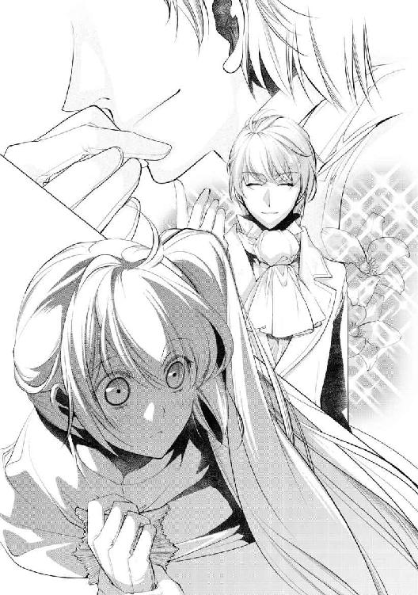
......きっと、リーウェにそう言った張本人は忘れてしまっているだろうけど。
「朝焼け、ですか。なるほど、これは一本とられました。女性を褒めることには自信があったのですが」
少し悔しそうに肩をすくめるコーネリアスに、また曖昧に笑っておく。これで紅薔薇なんて恥ずかしい呼び方を止めて貰えればと思ったのだが。
「悔しいですが、貴女にはよく合うと思います。では『明け空の君』と」
「......すみません、私のことはリーウェとお呼び下さい」
もっと恥ずかしい呼び名が出てきたので、結局名乗ってしまった。まあ、愛称であるし家名もついていないので、ぎりぎり許容範囲だろう。
がっくりとうな垂れるリーウェとは逆に、コーネリアスは輝くような笑顔で呼び名を復唱している。
「リーウェさん！ 可愛いお名前です」
そう言う貴方の方がよほど可愛いですよ、と口にしそうになったが止めておく。さすがに成人している男性に可愛いは失礼だろう。
（失礼......あ、しまった！）
思い留まったのはいいが、肝心なことをようやく思い出した。受付の監視の後も結局バタバタしてしまい、コーネリアスに謝罪ができていなかったのだ。
「コーネリアス様、受付の時に大変失礼をいたしました！ あの者に代わってお詫び申し上げます！」
「え、失礼？ 何かありましたか？」
突然勢いよく頭を下げたリーウェに、きょとんとした様子の声が落ちてくる。幸いにもコーネリアスは懐の深い人だったようだ。騎士団にも何の連絡も来ていなかったし、ここでちゃんと謝っておけば外交問題は防げるだろう。
「頭を上げて下さいリーウェさん。何を気にしているのかわかりませんが、僕は何も怒っていませんよ？ むしろ、このような素晴らしい舞踏会に参加できて、今とても幸せな気分です」
「寛大な処置に感謝いたします」
「堅苦しいですよ。叶うなら貴女とは、もっと甘いお話をしたいものです」
ホッとしたのも束の間。ゆっくりと顔を上げると、額が触れそうなほど近い位置に、コーネリアスの美しい顔があった。
「......っ!?」
「そうですね......もし、何かを気にしているのなら、謝罪はいりません。代わりに、今夜は傍に居ることを許して頂けませんか？」
吐息混じりの甘い誘いに、背筋が震える。まっすぐ見つめる緑の瞳には、戸惑い怯えるリーウェの姿が映っている。
（......怯える？ 何故、私は怯えている？）
戸惑うのは当然。ドキドキとうるさい心臓も、理解はしている。けれど〝違う〟と、どこかで警鐘が聞こえる。きれいな王子様からお姫様のように扱って貰って、何を怖がる必要が――。
「ねえ、リーウェさん......」
「断る。申し訳ないが、騎士の仕事の邪魔をしないでくれ」
一瞬、意識が飛んでいた。そうリーウェが気付いた時には、自分とコーネリアスの間に割り込んで来た背中があった。見慣れた揃いの白い上着は、魔導騎士の制服。
「ギデオン......？」
「これはまだ見習いみたいなものだ。あまりからかわないでやってくれないか、王子様」
「随分早いお戻りですね。よほどリーウェさんのことが大事と見える」
いつもより幾分か低いギデオンの声には、かすかだが息の音が混じっている。もしかして、走って戻って来てくれたのだろうか。
「さっきから会場で姫君たちがお待ちだ。舞踏会に参加する意思があるのなら、向こうを相手にしてくれ」
ちらと黒眼が指した先では、頬を紅潮させた少女たちが恥ずかしそうにこちらを窺っている。コーネリアスの美貌ならば、注目を浴びるのも道理だろう。
「......仕方ありませんね。今夜は諦めます。またお会いしましょう、リーウェさん」
背中ごしなのでリーウェに様子は見えないが、ため息と共に諦めの言葉を告げたコーネリアスは、意外にもあっさりと会場の中央へ歩いて行ってしまった。振り返るような素振りもない。
「......良かった、終わった」
「あれには気を付けろと言っただろう。何故名前を知られている」
コーネリアスの相手が終わったと思いきや、頭上から降ってきたのは明らかに怒気を含んだ声。リーウェを振り返る黒眼も恐ろしく怒りに満ちている。
「ご、ごめんなさい」
「謝って欲しい訳じゃない。それとも、お前もああいう顔の男が好みなのか？」
「きれいな人だとは思うけど......ごめん、本当に無用心だった」
自分の軽率な行動が、ギデオンを怒らせている。認めて貰いたいと思ったばかりでの失態に、リーウェはまた深く頭を下げる。
「ごめんなさい、ギデオン」
「もういい。無事ならそれでいい」
ぽん、と大きな手のひらが赤髪に触れる。今ばかりは振り払うこともできず――いや、振り払いたいと思えなくて、リーウェはくしゃくしゃと揺れる自分の髪を見つめる。
触れた部分が温かくて、安心してしまった。やはりコーネリアスを〝怖い〟と思っていたのだろう。それは、知らない異性に対する戸惑いなのか。それとも、何か別の......？
（それに私、あの人が隣に来た時、気付けなかった。気配にはそれなりに敏感なつもりなのに）
そういえば受付の時にも、突然背後に立っていて驚いたのだった。もしやコーネリアスは、武術や剣術などを嗜んでいるのだろうか。繊細な印象からは、そうは見えなかったが。
「......おい、リーウェ？」
一通り撫でて満足したのか。一応髪型を直そうとしているギデオンに、苦笑しつつ大丈夫だと返す。髪の方は大丈夫ではなさそうだが、男たちの視線を避ける意味では、今夜はこれでもいいだろう。
「ごめんギデオン、来てくれて有難う」
「俺はお前の騎士だからな」
怒りの消えた黒眼が柔らかく微笑む。いつも通りの光景に安堵しつつ、二人はまた壁際の定位置へと戻って行く。
視界に広がる華やかな会場は、あれからまた元通り。妖精のような少女たちと、ギラギラした目でそれを値踏みする男たち。あちこちで駆け引きが交わされて、舞踏会の夜は賑やかに更けていく。
結局コーネリアス以外にはリーウェに声をかける男も現れないまま、解散を告げる零時の鐘の音とともに波乱の舞踏会初日は幕を下ろした。
――無事に終わったと、誰もが思いたかった。
＊ ＊ ＊
（眠れないな......）
諸々の連絡事項を終えて、騎士宿舎へ戻ったのはすでに真夜中だったのだが、リーウェは眠れないまま硬いベッドの上で寝返りを繰り返していた。
舞踏会なんて見たのは久しぶりであったし、気分が高揚しているというのもある。だが、明日以降もずっと仕事はあるし、リーウェの場合は正体がバレる危険もある。
寝なければいけない。そう理解はしていても、冴えた目はいっこうに閉じてくれないのだ。そわそわと妙に落ち着かない感覚が、ずっと続いている。
「......仕方ない。少しだけなら、いいよね」
何度目かの回転の後、ベッドから身を起こしたリーウェは、すぐ傍に用意してあった制服に手をかける。すばやく着替えを済ませたら、腰には愛剣を。常に帯剣を許されるのは、特別部隊である魔導騎士の特権だ。
「防音魔術......いいか、こっそり行こう」
寝静まった宿舎に音が響かぬよう、そろそろと部屋を出ると、足を向ける先は王城の離れの棟。
舞踏会参加者たちの夜の宿泊場所は三種類に分かれている。王都に別邸を持つセラフィニアの貴族たちは自分の屋敷へ帰り、他国からの参加者には城の客間に泊まって貰っている。
そして、雇われた少女たちは城から少し離れた場所、かつて後宮として造られたらしい別棟に泊まっている。そこが後宮として使われた記録はほとんどないのだが、それゆえにリーウェが幼少期を過ごした隠れ家でもある。
「大丈夫だとは思うけど、念のためね」
暗い道をさくさくと進んで行く足に迷いはない。
部屋数も多く、手入れさえすれば宿よりもちゃんとした寝床を確保できる。その場所をよく知る者だからこそ進言し、こうして彼女たちの宿泊地となった訳だが。
問題は本来の後宮とは違い、警備がそこまで厳重ではないということだ。
もちろん寝ずに番をする騎士もいるが、当然ながらコーネリアスのような身分の高い者を優先している。本当は平民である少女たちを守る分は、そう多くいないだろう。
「え、あれ？ 魔導騎士!?」
「お疲れ様です。ちょっと巡回に来ました。異常はありませんか？」
暗がりでもリーウェの白い制服はよく目立つのだろう。突然の訪問にもかかわらず、慌てて敬礼の姿勢をとった警備の騎士は、眠気の飛ぶような声で「異常ありません」と答えた。
「一周見て回ったら帰りますので、引き続き警備をお願いします」
「はっ！」
自分よりいくらも年上だろうに。きびきびと返事をする騎士に苦笑を浮かべつつ、リーウェは静かに後宮の中へ入って行く。
冷え切った空気が包む廊下には、点々と明かりがついているだけで、やはり他に警備がいる気配はない。まあ、騎士と言ったら大抵が男であるし、この中をうろついていたら別の意味で恐怖の対象になるかもしれないが。
「......静かね」
まるで世界にひとりぼっちになってしまったようだ。静かすぎる空間に、リーウェの足音だけが響く。舞踏会の後だから余計にそう感じるのだろうか。
久しぶりに足を運んだ後宮内は、リーウェが知るものと変わらない。やや古い意匠の内装に等間隔に並ぶ扉。今はこの中に沢山の少女たちが居ることだけが、記憶と違うぐらいだ。
（まあ、騎士の思い出の方が濃いしね）
使徒として幼少から鍛錬に明け暮れ、異例の若さで騎士に叙任されたリーウェだ。王女として扱われた記憶などほとんどなく、男共に交じって剣を振っていた思い出の方が多い。一応この後宮の隠し通路なども教えられているのだが、住んでいたのに一度も使ったことがないぐらいだ。
（もっとも、そんなものを使う機会なんて、ない方がいいけどね）
冴え冴えと輝く月をゆったりと見上げていた――次の瞬間、悪寒が走った。
「な、に......!?」
足を止めた先には扉が一つ。恐ろしい予感が、扉越しにもビリビリと伝わってくる。
（なんで今、こんな嫌な感じが......でも、迷ってる暇はない！）
ここは後宮だった頃の名残で、『お渡り』がしやすいよう扉の鍵は簡易のものだ。短く息を吸い込んで、利き足を一歩下げる。
「開けますよ!!」
掛け声と共にリーウェのブーツが扉を蹴破った。蝶番がねじれ、扉と壁を削る音が深夜の廊下に響く。
「......ぁ、え!? な、なんですかっ!?」
突然の騒音に慌てて起きた部屋主の少女は、驚きと戸惑いを浮かべながらベッドから身を乗り出す。
――そのすぐ近くから、時計の針が進むような嫌な感触。悪寒の原因が、少女のすぐ傍らに。
「時間がない......伏せて!!」
叫びながら伸ばした手は、ギリギリのところで少女を捕まえ、リーウェの胸元へ引き寄せた。
直後に、夜闇を裂いて轟音が響き渡る。
「――ッッ!!」
「きゃあああああっ!!」
耳元で響く叫び声に顔をしかめながらも、なんとか少女を自分の下に抱き込む。
激しく吹き付けるのは肌を焦がすような熱風。部屋を焼き、家具の壊れる音が続く。
............どれぐらい、待っただろうか。
「......ッ、いたた......ねえ貴女、大丈夫？」
熱風が落ち着いたのを見計らって体を起こせば、リーウェの背には細かい破片と灰のようなものが積もっていた。
腕の中でがたがたと震える少女は、大粒の涙を浮かべながらもしっかりと頷いて返す。怯えてはいるが、どこにも怪我はなさそうだ。
その様子にホッとしながら視線を動かせば、少女が居たベッド周辺は黒く焼け落ち、壁には特大の穴が開いてしまっている。バチバチと未だ燃える火が、爆発の大きさを物語っている。
騒ぎを聞きつけたであろう声も聞こえてくるが、ほとんどが悲鳴で外の状況は窺えない。
「動けるならここから出ましょう。立てる？」
「は、はい......！」
積もった汚れを落とせば、やはりいくらか傷を負ってしまったようだ。とはいえ、ほとんどがかすり傷なので、動くことに支障はない。
（......運が良かった。この程度なら）
リーウェの傷に気付いた少女が息を呑むが、大丈夫だと笑って返す。
「騎士だから慣れてます。それより、怖い思いをさせてごめんなさい。早く行きましょう」
また涙を浮かべた少女は、しゃくり上げながらもリーウェの手を取り、ゆっくりと歩き出す。足元も破片だらけなので、ゆっくりとだ。
やがて半壊した扉をくぐれば、水桶を持った騎士と寝間着のままの魔術師たちが駆けつけて来る姿が見えた。
「リーウェ!!」
そして何故か、リーウェのよく知った騎士も。
「ギデオン？ なんで貴方までこんな所に？」
恐らく大急ぎで来たのだろう。黒髪は汗で肌に張り付き、息も荒い。いつもきっちりと留めていた上着も羽織っただけで、引き締まった肌が直接見えている。
「そんなことはいい！ 怪我は!?」
「かすり傷よ、大丈夫。それより、彼女を保護して貰いたいんだけど」
「......医療班なら外に連れて来てある。こっちだ」
存外平気そうに答えたリーウェに安心したのか。大きく息を吐いた後、すぐに少女を連れて外に出た。
「うわ......」
先ほどまでの静寂が嘘のように、後宮の外には溢れんばかりの人が集まっていた。多くは着の身着のまま逃げて来た少女たちで、夜空を染める火に震えながら身を寄せ合っている。
「リーウェ、無事か！」
少し離れた場所から声を上げたのはハワードだ。その横に立つイーノスも、部屋着に制服を羽織っただけの状態で、急いで駆けつけてくれたことが窺える。
「無事よ班長、女の子も保護して貰ってる」
頷いて返せば、ちょうどギデオンも少女を医療班に預けて戻ってきたようだ。同じように無事を伝えると、二人の頬が少し緩んだ。
「よくやった、と手放しで褒めたいところだが、さすがに無茶だぞ全く」
呆れながら頭を掻くハワードの姿には、明らかに安堵した様子も見える。心配させてしまったという気持ちと、気遣ってくれて嬉しい気持ちが半々で、緊急時ながら心が温かくなる。
「ごめんなさい。それで、今どんな感じ？」
「どうもこうもあるか。オレたちが聞きたいな。なんでこんな所に居たんだ、リーウェ」
「なんだか寝付けなくて巡回に来たのよ。今思えば、何か感じていたのかもね」
「ほう、それは興味深いですね。魔術的な予兆があったと？」
「予兆......」
振り返って見る後宮は、駆けつけた人々のおかげで無事に消火されたようだ。真夜中の暗さが戻ってきたことに、皆喜びの声を上げている。
「......予兆、だったのかしらね、多分。爆発の原因は魔術だと思う。時限式で発動するように何かに組み込んであったみたい。爆発元がベッド付近だったから、枕元に置ける物とかが媒体かな」
「なるほど。ハワード、泊まっていた人間は、ここに居る分で全部ですか？」
「ああ、全員避難してると思うが」
眼鏡の位置を直しながら、魔術狂いがニヤリと嗤う。うわ、面倒くさいと他の三人は同じ感想を抱いたが、魔術関連の任務に一番向いているのもイーノスなのだから仕方ない。
「他の部屋にも仕掛けがないとは限りません。消火作業が済み次第、私は魔術師たちと全ての部屋を確認しに行ってきます。班長、許可を」
「動機が好奇心でさえなければ最高なんだが、許可する。気を付けろよ」
「了解」
頷くが早いか、淡い緑色の髪を躍らせながらイーノスは現場へと走り去ってしまった。
「リーウェは傷の手当てをしたら休め。詳しい話は明日聞く。じゃあな」
「はい、お疲れ様です」
イーノスの様子にため息をつきながらも、ハワードもその後を追って行く。残されたギデオンは何も言われなかったので、このまま帰って大丈夫なのだろう。
（予兆、か。誰かに言われる前に動けたのなんて、久しぶり）
騎士としての任務は指示がなければ動けないし、舞踏会が始まる前も昨夜も、女神セラフィナから警告めいた神託を受けて動いている。
しかし今夜は、誰に言われた訳でもなく、リーウェが少女を守ることができた。女神の力を使えなくなっているリーウェにとって、己が誰かを守れたことは本当に喜ばしい。
「リーウェ」
「ん、なに......っ!?」
そんな自己評価に満足していれば、呼び声と共に何かに押し付けられた。温かいそれがギデオンの露出した肌だと気付くまでに二秒。
「え、ちょっと、何!?」
「......何かあったなら、俺に必ず言ってくれ。心臓が止まる」
抱き寄せられている、と気付くまでにまた少し時間がかかった。触れられるのは慣れているはずなのに、リーウェの顔に熱が集まってくる。耳元に降る声は、ひどく弱々しい。
「こんなことになるとは思わなかったから、ごめん。大した怪我もないから、大丈夫よ」
「大した怪我をする状況だっただろう」
「それはそうだけど、本当に過保護ね貴方」
せっかく上手くできたのに、ギデオンからすればまだ頼りないのだろうか。リーウェが俯いている間も、ギデオンの腕は弱まることはなく抱き締める。離したくないと、それこそ子供のように。
「......とりあえず、帰って寝ましょう。疲れちゃったわ」
「ああ、俺の部屋で寝るか」
「過保護なの？ 喧嘩売ってるの、どっち？」
年頃の娘に何を言う！ と怒るリーウェに苦笑を浮かべながら、二人の姿は後宮から離れていく。......その背を見送る者の視線に気付かぬまま。
喧騒に包まれながら、舞踏会の初日はようやく終わりを迎えた。
＊ ＊ ＊
「問題、朝起きたら異性の幼馴染み（成人）が隣に寝ていました。この時の私の心情を答えよ」
「あー......それでギデオンの頬が赤いのか」
夜中の騒動が嘘のような清々しい翌朝。騎士団詰め所に集合したハワード班の面々は、赤く手形のついたギデオンの顔を見た後、先の〝回答〟を返された。
何となく生温かい目で見てしまうのは、常日頃から付きまとうギデオンを知っているからだろう。むしろ、同衾ぐらい普通にしていそうな距離感だと他二人は思っているが、リーウェには言わないでおく。
「おいギデオン、リーウェに何か言うことは？」
「腕枕は意外と痺れることがわかった。次は二の腕辺りに頭をのせてくれると助かる」
「しないわよ!! むしろ腕枕って何!? そんなことしてたの!?」
しれっと落とされる爆弾発言に、リーウェは紅潮しながら彼の脛を蹴飛ばし、ハワードは頭を抱えて息を吐く。
「ギデオン......相手が彼女じゃなかったら犯罪だからな」
「リーウェにしかしない」
「......リーウェ、君も。ベッドに潜り込む気配ぐらいわかるだろ？」
「一緒に育った期間が長すぎて、警戒心わかないのよ」
「駄目だこいつら」
うな垂れて首を横にふるハワードに、何故か同意するようにギデオンも頷く。ムカついたのでもう一度脛を蹴ったら、さすがに顔色を変えて脚を押さえた。いい気味である。
「あの、私徹夜明けなんですが。同衾でも結婚でも止めないので、先に話をさせて貰っても？」
「あ、ごめんイーノス」
咳払いの音に振り向けば、端麗な顔に隈をにじませるイーノスが呆れた様子でこちらを眺めている。慌てて三人が席につけば、ようやくかと肩の関節を鳴らしながら、それぞれの前に資料を投げた。
「ひとまず昨夜の騒動につきまして。リーウェの読み通り、時限性で発動する魔術が仕込まれていました。貴女が助けた少女の他にもね」
「え!? 他の子は無事だったの？」
「ええ、発動前に我々が回収しましたので。はいどうぞ」
眉を顰めるリーウェたちの前に、今度は少し重い音を立てて何かが転がる。
「何これ......ブレスレット？」
円環状に繋がるのは金色の細い鎖、長さから見て女性用だろう。中央に白い石がついており、花の模様が掘り込まれている。
「意匠はセラフの花？」
「正解です。貴女が助けた少女も合わせて五名、これを舞踏会で受け取ったそうです。狙ったように、昨夜『王女候補』として注目されていた上位五名が、ね」
「えっ!?」
それはつまり、犯人は第二王女を狙っているということか。『入手したい』と思う不信心者は沢山見つけたが、まさかの大本命を見逃してしまっていたことになる。
（私の命を狙う人間がまぎれ込んでいる。私のせいで、関係のない子たちが......）
「リーウェ」
ぽん、と頭に乗せられる慣れた感触に、俯いた顔を起こす。表情には出していないが、その黒眼はリーウェを気遣うように揺れている。
「......有難う。ごめんイーノス、続けて」
「リーウェは真面目ですね。ご心配なく、唯一の怪我人は貴女だけです。具合はいかがですか？」
「かすり傷よ、問題なし。それで、これは誰が渡したものなの？」
労わってくれるイーノスに笑みを返せば、彼の方は少し苦々しい面持ちで視線を逸らした。
「......原因がわかっているのに、犯人が見つかっていません。受け取った少女たちが、全く覚えていなくて」
「ど、どう言うこと？」
「言葉通りに。誰から受け取ったのか覚えていないのですよ。五人全員がね」
解決したようなもの、と思っていた面々にとっても、これは予想外のことだったようだ。イーノスの顔には、疲労よりも落ち込むような色が濃く見える。
（これぐらいの細工品なら、今回の参加者にはいくらでも用意できる物だけど）
物自体の価値よりも、渡した人物が重要であるように思える。何故なら、爆発の位置から考えて、『わざわざベッドへ持って行っていた』可能性が高いからだ。
少なくともリーウェが助けた彼女は、これを渡した人物に対して好意的であるはずだ。これを貰って嬉しいと思っていたのに、忘れたりするだろうか？
「もしかして、記憶に干渉したのかしら？」
「それが、そのような魔術の痕跡も見つからなかったのです。誰かをかばったり、嘘をついているような様子もなく、ただ『覚えていない』と言うより他には」
「ふむ......」
そもそも、人の心や記憶に関する魔術というのは、かなり高難易度だ。物理的なものと違い結果が目に見えない上、対象の心理状態によっては抵抗することもできる。
もし失敗したなら、イーノスをはじめ城の魔術師たちにすぐ気付かれてしまうだろうし。わざわざ王城に来て、賭けのような手段をとるとも思えない。
「ハワード、どう思う？」
「そうだな、モテていた上位の五人なら、ちやほやされすぎて覚えられなかったんじゃないか？」
「それは確かに......ギデオンは？」
「記憶に残りにくい人間と言うのは、居るだろう。存在感が薄いとも言うが」
「存在感、か」
ちらと見上げた先のギデオンは、相変わらず整った顔立ちをしている。声を出さずともしっかり目立つ彼には、縁遠い言葉だろう。
同様に、昨日出会ったコーネリアスにも関わりのない言葉だろう。思わずリーウェが見惚れてしまうほどの美貌。囮の他にも、舞踏会には縁談を求めるご令嬢も居るのだし。
「存在感が薄いと言えば、会議中のギデオンですね」
「は？」
ところが、リーウェと真逆の言葉がイーノスから出て、思わず腰を浮かせてしまう。
「ギデオンのどこが？ 邪魔なぐらいよ？」
「それはリーウェにとっては......いえ。ギデオンはこちらから話題をふらない限り、ほとんど喋らないじゃないですか。たまに存在を忘れますよ、本当に」
容姿は目立つはずですが、と不思議そうに付け加えるイーノスに、リーウェの頭には疑問符がいくつも浮かぶ。お喋りな性格ではないだろうが、それでも自分といる時のギデオンは比較的饒舌だ。会話が途切れることもあまりない。
（忘れる......？ ないない）
座り直して隣を見れば、肯定も否定もせずにこちらを見返してくる黒眼。無関心、とでも言うべきか。
「仲間に忘れるとか言われても、気にしないのね」
「俺はリーウェがいればいい。それより、話が脱線してるがいいのか？」
「よくないわね」
一番話を聞いていなさそうなところからのツッコミに、他の三人は姿勢を正す。こほん、ともう一度咳払いをしたイーノスが手元のメモを読み進めた。
「失礼しました。ブレスレットを受け取った経緯としては、花を贈ると参加できなくなるから。最終日まで互いが残っていたらその時は、と。予約の証みたいなもののようですね」
「うーん、ますます忘れるような相手からの贈り物とは思えないんだけど。変な男からなら、受け取りたくないわよね？」
「私も同感ですが、情報は以上ですね」
「これからの話だが、今夜は予定通りに開催。ただし、入場者の持ち物を貴重品とセラフの花のみに限定するそうだ。面倒だろうが、全員確認は徹底するようにな」
不服そうに唸るリーウェをよそに、イーノスを補足する形で淡々と予定が挙げられていく。夜は同様に警備、それまでは怪しい参加者の情報収集になりそうだ。
「イーノスはちょっと仮眠とってからな、お疲れ。ギデオンとリーウェはそっちの資料を基に本人と従者をあたってくれ」
「了解」
手早く話し合いはまとめられ、あくびを噛み殺しながらイーノスが去って行く。その背を労いながら、残った三人はそれぞれに行動を始める。
「リーウェ」
「......まあ、貴方はついて来るわよね」
扉の閉まる音と共に、すぐ背後には慣れた気配。髪に触れる長い指先を止めれば、いつもより優しい黒眼が微笑む。
「......気にしてはいるけど、大丈夫。さっさと見つけて追い出せばいいのよ。第二王女のせいで怪我なんて、誰にもさせない」
「そうだな」
言葉の割りには悔しさのにじむリーウェの声に応えるように、ぽんぽんと髪が揺れる。キツい顔立ちながら自分の前ではよく笑う男に、存在感の薄さはやはり感じない。
「行くか」
「ん」
表情を引き締めて、石床にブーツの音を響かせる。イーノスも察していたのか。リーウェが持ってきた資料には、ちゃんとギデオンの分も仕事が割り振られているので、ゆっくりしている暇はない。
こういう忘れられない男が犯人だったら楽なのに、とこっそり思いながら、二人は詰め所を後にした。
＊ ＊ ＊
結局手がかりらしい手がかりも得られないままに太陽は沈み、今夜もまた華やかな夜の幕が上がる。
「そもそも戦うのが本職の騎士に、情報収集は向いていないと思うのだが」
「人手不足だから仕方ないわよ。イーノスたち魔術組も、あっちのやり方で動いているらしいし」
昨夜同様に眼前には夢物語のようなきらびやかな光景が広がっている。が、集まった人々は装いの割りに顔色の悪さが目立つ。
失格になったいくらかと、騒動により参加を辞退した者の分、人数が減ってしまったのも原因かもしれない。リーウェが助けた少女も、昼の内に帰ったそうだ。
「......結構残るものね。もしかしたら全員辞退して、このふざけた催しが中止になるんじゃないかと思ってたんだけど」
「それはないだろう」
壁際でこっそりと不敬な台詞を呟くリーウェに、やや残念そうにギデオンが返す。会場の警備も増強されたため、二人が並んでいてもくまなく人が足りている。
「今夜から参加者の行動範囲が狭められたからな。王女殿下を捜すのが楽になったのに、降りるヤツはそういないだろう」
「ああ、なるほど」
男の参加者の目が昨夜以上にギラギラしているのはそのためか。まあ、正解は最初から会場にいるのだが。
「お前が助けた女は、どうも最有力候補だったらしいな」
「そうなの？ もっとちゃんと顔見ておけば良かったわ」
「リーウェの方が可愛い」
「はいはいどーも」
そんな淡々としたやり取りを交わしつつ、二人の目は会場の様子を追い続ける。緊張からか、やや挙動不審な人物も見受けられるが、爆破魔術を仕掛けるような人物は見当たらない。
（魔術の気配もない。やっぱり参加者じゃなくて、検査のゆるかった従者の方が怪しいのかも）
だとすれば、こちらの警備に人員を割くよりも、控えの間に待機している従者たちを調べる方が有効ではなかろうか。しかし、それで会場の方が襲撃されたら目もあてられない......。
思考がまとまらないままリーウェが悩み続けていると、ふと数人の男たちが近付いて来るのが見えた。
「何かありましたか？」
「いやその、狙ってた子がいなくなっちゃったんで、やる気が出なくて......貴女とお話しできませんか？」
仕立ての良い装いの男たちは、ギデオンを無視してリーウェにのみ声をかけている。ちょっとまずいかと思いつつも、表情は努めて真面目に、騎士らしい姿勢を意識する。
「申し訳御座いませんが、私は警備の任についておりますので。会場の姫様がたとご歓談下さい」
「好みの子がいないんだよね。ねえ君さ、ずいぶん若いけどいくつ？ 本当に騎士なの？」
断りが聞こえなかったのか、別の男が馴れ馴れしい口調で距離をつめて来る。魔導騎士の制服に気付かないなんて、無知と言うか無謀と言うか。
（そもそも、私の赤髪目立つと思うんだけど）
会場の少女のほとんどが、王族によく似た金髪である。目の色に気付かなかったとしても、それなりの長さがあるリーウェの髪は見えるはずだ。
さりげなく髪を掴んで見せてみるものの、馴れ馴れしい男はわざとらしくニヤリと笑った。
「それカツラ？ それとも、染色？」
（ああ、なるほど。そうきたか）
目立つからこそ偽物だと思ったらしい。残念ながら地毛なのだが、王女捜しの着眼点としてはありだろう。さて、どう証明しようかと思えば。
「......この制服を知らないのか？」
底冷えするような、恐ろしく低い声が応えた。
途端に青ざめた男たちが視線を横へ動せば、鬼でも背負っていそうなギデオンが、射殺さんばかりの目でこちらを見ている。
「白は魔導騎士の制服だ。覚えておくといい」
「魔導騎士!? え、この子が!? 本物!?」
男の一人が驚愕の声を上げる。リーウェから一歩後ずさったので、魔導騎士が何であるかは知っていたようだ。リーウェの若さゆえに気付かなかったのかもしれない。
「そういうことです。これも地毛ですが、確認されますか？」
「め、滅相もない！ お邪魔してすみませんでした！」
赤髪がどういうものかも知っていたようだ。馴れ馴れしかった男もすっかり敬語になり、ぺこぺこと頭を下げながら逃げるように離れて行く。それなりの家の者だろうに、優雅さの欠片もない。
「......助言ではないが」
その背に、また低い声がかかる。
「第二王女殿下は今日もこの会場にちゃんといる。好みかどうかは知らないが、宝捜しは終わっていないぞ」
喧騒の中でもよく通ったその言葉に、震えていた男たちはもちろん、会場の他の者たちもこちらへ視線を向ける。数秒の間止まって、彼らはもう一度頭を下げると、会場の中心へ走って行ってしまった。
「......言っていいの、それ」
「事実だからな」
リーウェに向けられた黒眼には、先ほどのような恐ろしさはもうない。苦笑に近い形で眉を下げると、また元通りに姿勢を正す。
「お前に寄って来られるぐらいなら、王女殿下も出しに使う」
「まあ、有難いけどね。昨日の今日で仕事できないのは困るし」
視線を前へ向ければ、何となく元気のなかった会場に明るさが戻っているように見える。理由はどうあれ、やはり皆第二王女を見つける目的を忘れてはいないようだ。
......実はリーウェこそが正解だなんて、絶対に言えないが。
「なるほど。つまり貴方がたは、メリーウェイス王女がどなたかご存じなのですね」
「っ!?」
ふいに、ギデオンが立つ位置と反対側の手がとられる。甘さの混じるその声は、一晩ぶりでもちゃんと覚えている。
「コ、コーネリアス様！」
「今晩はリーウェさん、今夜も貴女にお会いできて嬉しいです」
慌てて彼の方へ体を向ければ、落ち着いた佇まいの美青年がにこにこと微笑んでいた。ほんのりと朱のさした頬が、「嬉しい」が嘘でないと語っている。
「昨夜は大変だったようですね。お怪我をされたと聞きましたが、お仕事をして大丈夫なのですか？」
「かすり傷でしたので。お気遣い有難う御座います」
「ですから、堅いですよリーウェさん。僕は貴女ともっと楽しい話がしたい」
「は、はあ」
相変わらずリーウェを淑女として扱いたいらしいコーネリアスに、慣れていないリーウェは曖昧に笑うしかない。最初にとられた左手も握られたままなせいか、背中にギデオンからの鋭い視線が刺さる。
（ギデオン、頼むから余計なこと言わないでよ）
ちらと視線を向けて祈ってみるが、吊り上げた黒眼はそんなことは意にも介さない。昨日の受付の件でさえ、咎められてもおかしくないのだ。コーネリアスとて、そう何度も無礼を許すほど甘くはないだろう。
「それで、リーウェさんも答えをご存じなのですか？」
「......え？」
少しだけ低くなった声に、ハッとして意識をコーネリアスに戻す。リーウェを映す緑眼は変わらず澄んだ色をしているが、わずかに細められていて感情が読めない。
「......コーネリアス様もやはり、第二王女へ求婚するために参加されているのですよね？」
「まあ、そうですね。僕は三番目ですから、他の兄弟と比べて身も軽い。いざとなれば、こちらへ婿入りすることも考えていますよ」
「そう、ですか」
多少なりとも浮ついていたらしい心が、ゆっくりと冷えていく。いくらリーウェを優しく扱っても、コーネリアスの目的は第二王女だ。関わりに打算がないとは、一言も言っていない。
......騎士としてこの場にいるにもかかわらず、冷静さを欠くところだった。
「申し訳御座いませんが、私からは何も申し上げることはできません。貴方様がバスカヴィルの王族であっても」
「そうでしょうね。ああ、無理に聞き出すつもりもありませんよ。バスカヴィルとしても、セラフィニアとは良い関係を続けていきたいと思っていますし」
騎士としての顔に切り替えたリーウェに気付いたのか、握っていた手をぱっと離すと、コーネリアスは寂しそうに微笑む。肩を流れる亜麻色の髪が、名残惜しげに揺れた。
「僕がちょっかいを出したせいで、リーウェさんが怒られてしまうのも困りますしね」
「私のことはどうぞお気になさらず。ただ、もし気遣って下さるのであれば、会場へ戻って頂けると助かります」
視線を動かせば、昨夜同様にこちらを窺う少女たちの姿が見える。美貌の王子様が気になる者はやはり多いだろう。
促されたコーネリアスも少しだけ少女たちを見たが、昨夜のように離れて行くことはなく......おもむろに、胸にさしたセラフの花を手に取った。
「コーネリアス様？」
小さな白い花弁が、リーウェに向けて差し出される。ほんのりと香る甘い匂いを感じつつ、花とコーネリアスを交互に見ること三回。
「あの、これは持っていて頂かないと、退場になってしまいますよ」
「ん？ ああ、失礼。やり方を間違えました。髪に差し込むのでしたか」
「え」
きょとんとした表情のまま落とされた爆弾発言に、せっかく真面目に戻したリーウェの顔が一気に引きつった。まさかこの人は今、求婚の花を使う目的で手に取ったのか!?
「初日に言っていましたよね、女だから名乗れないと。でしたら、これはリーウェさんにも使えるのでしょう？」
「え、あ、えっと、それは......」
リーウェの背に冷や汗が流れる。つい今しがた第二王女の話をしたばかりなのに、どうしてコーネリアスはこれを騎士のリーウェに差し出しているのだろう。
きっと王族に見せてはいけない顔をしているだろうが、混乱の方が強くて返す言葉も浮かばない。戸惑うリーウェを前に、コーネリアスは楽しそうに笑うばかりだ。背後でギデオンが身じろぐ気配がした。
「実は僕、王女のことは何とも思っていないのです。バスカヴィルとしては『豊穣の女神の寵児』を欲していますが、別に手に入らなかったとしても、我が国は揺らぎませんし」
「それはそうだと思いますが......」
近隣の大陸の中でも海での貿易・軍事において、バスカヴィル王国に敵うものはない。その強大な国の王族が、小国のふざけた催しに参加している時点でおかしいのに。
「......私は魔導騎士とはいえ一介の兵です。何故私のような者に、コーネリアス様が関心を向けられるのでしょうか」
「何故？ 恋をするのに、身分は重要でしょうか？」
「恋!?」
今度こそ、明らかに場にそぐわない声を上げてしまった。
爆発しそうなほど熱くなる顔に、コーネリアスは少し驚いた後、嬉しそうに微笑む。ほんの一瞬だけリーウェの背後へ視線を向けたのは、もしかしたら挑発なのかもしれない。
「一目惚れなんです、リーウェさん。この求婚の花を貴女に使いたいと思うぐらいには」
ゆっくりと、花を持つコーネリアスの手が近付いて来る。
（ちょっと待って恋って何!? 私に花を使われるのは困る!! ど、どうしたらっ）
触れられてはいけない。けれど、失礼なく断る言葉も浮かんでこない。
「......ッ!!」
とっさに頭を庇うように下げれば、その上でガッと鈍い音が聞こえた。
「............何のつもりですか？」
やや不満のにじんだ声が聞こえる。仰ぎ見ると、リーウェの頭上でコーネリアスの手が掴まれていた。リーウェの背後から伸ばされた、ギデオンの腕に。
「僕はこの舞踏会のルールに則って行動しています。魔導騎士には、それを邪魔する権限があるのですか？」
コーネリアスの美貌にわずかに皺が入る。リーウェの前では笑っているばかりだったが、静かに怒るその表情には、王族らしい威圧感が窺える。
「......権限はないが」
対するギデオンの声もまた低く、引くような気配もない。臨戦態勢さながらの空気に、リーウェの頬の熱も冷めていく。
「その花を使えるのは一度だけだ。結果を問わずに、殿下を退場にしなければならない。会場の姫君たちのためにも、できれば最終日まで待って貰えないか？」
「それを聞いてあげる義理はありませんが？」
「......だろうな」
口では同意を示しつつも、ギデオンの掴む力は強いのだろう。振り払おうとした腕は抜けず、布のこすれる音にコーネリアスの柳眉が逆立つ。
「............」
沈黙が落ちる。美しい男同士が睨み合う中、かける言葉が見当たらないリーウェは、ただ呆然と眺めることしかできない。
数分......いや、きっと数秒だっただろう。
「おいギデオン！ 何やってるんだ！」
睨み合いを止めたのは、走る音と共に近付いて来たハワードだ。慌ててギデオンの手を離させると、リーウェも巻き込んで深く頭を下げる。
「申し訳御座いません、コーネリアス殿下！ 私の部下がご無礼を！」
「......構いません。僕も少々性急でした」
ため息と共に告げられるのは、どこか冷たい声。
こっそり視線を上げれば、コーネリアスはそれ以上は何も言わず、去って行ってしまった。舞踏会会場ではなく、そのまま退場の扉へ。
（良かった。バレずに済んだ......）
小さく息を吐けば、どっと疲れが肩に圧し掛かってくる。ただ会話をしていただけなのに、魔物と戦うよりよほど疲れているのは何故だろう。
「この馬鹿ギデオン！ 君はあの方を誰だと思っているんだ！」
今度こそ頭を上げれば、ハワードがギデオンの耳を引っ張って怒っている。ギデオンの方は聞いているのかいないのか、コーネリアスが見えなくなるまでじっと扉を睨んでいた。
「人の話も聞いてないし。ギデオン、ちょっとついて来い。リーウェはこのまま警備続行」
「あ、はい。了解です」
いきなりの怒声に少しだけ視線を集めてしまったが、舞踏会に支障はなかったようだ。ギデオンも視線をこちらへ戻すと、しぶしぶハワードに頷いた。
「......あの男には、やはり気を付けろ。〝怪我をした騎士がお前だ〟という情報は、公にしていない」
連行されるギデオンが、リーウェとすれ違いざまに耳元で囁く。
「......え？」
ざっと血の気が引いた。慌てて聞き返そうとするも、二人はすでに会場を出て行ってしまった。
「なんで......？」
コーネリアスは昨夜の現場にいたのだろうか？ いや、彼が泊まっている客間は、後宮からかなり離れているはずだ。
では他から情報が漏れた？ リーウェは少女を助けた後、ギデオンと共にすぐ宿舎へ帰っている。怪我を見られたのは、寝ず番の騎士一人と駆けつけた魔術師が数人。他にはほとんど会っていないはずだ。
（それに、今日も気付けなかった......）
他の人間の相手をしていたとはいえ、すぐ隣に近付いていたコーネリアスに、声をかけられるまで気付けなかった。慣れ親しんだギデオンの気配ならまだしも、全くの他人であるのに。
『容姿は目立つはずなのに、存在を忘れてしまう』
イーノスの声が、頭の中を回る。まさか、そんな、大国の王子が？
「......あの人からは、魔術の気配は全くなかったわ」
自分を納得させるように呟く。膝の上で握る拳は、かすかに震えてしまっていた。
――その後、ハワードもギデオンも戻らないまま、穏やかに舞踏会の時間は過ぎていく。
静かな夜に騒音が響くこともなく、表向きは平和に二日目は幕を閉じた。
「え？ コーネリアス殿下の身辺を調べたい？」
「はい、班長」
翌朝、いつも通りの殺風景な詰め所に出勤したリーウェは、書類整理をしているハワードに開口一番頼み込んだ。
隣に座っていたイーノスも、きょとんと驚いた顔で手を止めてしまっている。
「あーリーウェはわかってるとは思うが、相手は大国の王子様だ。下手なことをすれば、外交問題になるぞ」
「もちろんわかってる。けど、どうしても気になって......」
くしゃくしゃと頭を掻きながら、ハワードは言いにくそうに眉間に皺をよせている。たった四人とはいえ班として束ねる以上、彼は彼で制約の多い位置にいるのだ。
「それは昨日、ギデオンが無礼な態度をとったのと関係あるのか？」
「関係というか、ギデオンは私よりも先に色々気付いていたみたい。そういえば、まだこっちに来てないのかしら？」
ちらりと扉へ視線を向けるも、いつもの風景に欠けたギデオンは、話をしている間も入って来ない。
近衛である彼は基本的にリーウェと行動を共にしており、毎朝宿舎の部屋の前で待っていてくれる。が、今日は時間になっても現れず、彼の部屋にもいなかったので、先に詰め所へ来ていると思ったのだが。
「遅刻？」
「いいえ。ギデオンは件の王子様への言動について、騎士団長がお説教中です」
「......ああ」
補足してくれたイーノスの声に、罪悪感がわいてくる。
態度はともかく、ギデオンがコーネリアスを止めたのは、リーウェを守るためだ。彼の『何』から守るのかは定かではないが、少なくとも『正体がバレる』から守ってくれた。
「まあ、君たち二人が揃って気になることがあるなら、オレも調べたいが。お互い目立つ立場だ。おおっぴらな行動は許可しづらいな」
「そうよね」
困ったように笑うハワードに、リーウェはますます俯いてしまう。
対照的な紅白色は、魔導騎士でもひときわ目立つ。隠密性など全くないリーウェが身辺を探っているとなれば、当然すぐバレるし、いい思いもしないだろう。
「でしたら、私がやりましょうか？」
「え!?」
救いの声をかけてきたのは、眼鏡を光らせるイーノスだ。広げていた資料を手早くまとめると、微笑みながらリーウェに手を差し出す。
「少なくとも、貴女やギデオンよりは調べごとに慣れています。幸い、私はその王子様と面識もありませんし」
「いいの？ 魔術絡まないかもしれないよ？」
「貴女、私を何だと思っているんですか」
差し出した手を丸めると、ぺちんとリーウェの額をはじく。口調は呆れているが、レンズ越しの橙色の目は穏やかに笑ったままだ。
「そうですね。では、これから行く予定だった街の警邏任務を代わって貰いましょうか。いかがです？」
「行く！ 行ってきます！ イーノス有難う！」
それは体を動かしたいリーウェには願ってもない提案。ぱっと顔を輝かせると、簡易の敬礼姿勢をとり、すぐに駆け出して行く。何度も「有難う！」とイーノスを振り返りながら。
「............君、リーウェには甘くないか？ イーノスさんよ」
「そうですか？ 私としても大変有難い条件ですよ。制服で街に出ると、女性に絡まれて面倒で」
「美形爆発しろ」
軽い足音が聞こえなくなるまで見送ったハワードは、班長許可出してないぞーと呟きつつ頭を掻く。そしらぬ顔で別の資料を取り出すイーノスは、すでに調査の準備に移っているようだ。
「......忘れがちですけどね。あの子はまだ成人もしていないのですよ。リーウェが守った少女と変わらない、本来なら庇護下にあるべき存在です。せめて私たちぐらいは、甘やかしてあげないといけないとは思いませんか？」
「......それは」
確かに、イーノスの言うことにも一理ある。リーウェは強く、とても優秀な騎士だ。班長としてハワードも信頼し、様々な仕事を任せてきた。もちろん今回の舞踏会の最中も、決して贔屓などすることなく。
しかしながら、リーウェは女性であり......いや、少女と呼ぶのがふさわしい年頃で、誰かが守らなければならないはずなのだ。
幸いにも、リーウェにはギデオンという少々過保護な幼馴染みが付いてくれているが、たった一人だ。同じように傍にいる大人として、ハワードとイーノスの二人が『甘やかし』に加わっても、何も問題はないだろう。
「もしかしたら、リーウェも心のどこかでは羨ましいと思っているかもしれませんよ？ 同じ年頃の少女たちが着飾って踊っているのに、自分は制服を着て警備をしているだけなんて、ね」
「着飾りたいって希望を聞いたことはないが......まあ、女の子だしなあ」
「そう、女の子なんです。今回は着飾らせてあげることはできませんが、それ以外で優しくしてあげることはできますよね？ ハワード」
「......保護者に怒られても知らんぞ」
穏やかに続く会話に、呆れつつもハワードも笑みを返す。幸いにも、常にべったりな幼馴染み兼保護者はもうしばらく不在だ。こんな話は今しかできないだろう。
「仕方ないな」と苦笑しつつ、ハワードもまた大国の王子の情報収集に向けて腰を上げる。少しぐらいなら甘やかしてあげてもいいだろうと、温かな心持ちで。
「まあ、ギデオンがいなければ彼女に求婚してましたけどね、私」
「言うなよそれ。面倒だから絶対言うなよ!?」
そんな穏やかな空気を壊す、甘やかしを超えた直球台詞に、苦労性の班長は思わず胃を押さえる。果たして本気か冗談か、レンズ越しの鮮やかな橙眼は、楽しそうに笑うばかりだ。
優しい日が照らす部屋の中、不在の二人に複雑な思いを馳せながら、ハワードは小さくため息をついた。
＊ ＊ ＊
「楽しかったー！」
時刻は進んで昼を少し過ぎた頃。城門へ共に帰って来た警邏隊の騎士たちに別れを告げて、リーウェは満足げに詰め所へ向かっていた。
久しぶりの長時間の運動は、色々悩んでいた心の回復にもなったようだ。表情はどこまでも明るく、輝いている。
思えば舞踏会の企画が出て以降、鍛錬の時間もなかなかとれない日々だった。魔物などが発生すればもちろん駆けつけるが、頻発するほどでもない。......しても困るが。
それに、リーウェとて戦闘狂という訳ではない。女神の使徒として鈍らないよう、体を動かしておきたいだけだ。こうして歩き回ったり馬に乗ったりするだけでも、全然違う。
「皆も元気そうで良かった」
街で出会った顔見知りたちを思い浮かべて、また笑う。
正規の騎士として異例の若さであるリーウェは、王都の住人たちともよく交流があった。というより、向こうが娘や孫のように心配して声をかけてくれるので、自然と知り合いが増えていた。
この制服が特別な魔導騎士のものと知れても、彼らは変わりなく接してくれる。仕事を代わってくれたイーノスには大感謝だ。
「ギデオンもいい加減戻ってるわよね。お昼食べたら、後は......」
白い外套の上で、鮮やかな赤髪が踊る。足取り軽く鼻歌でも口ずさみそうなリーウェを、行き交う城の人々も微笑ましく見守っている。
――しかし次の瞬間、穏やかな風景は悲鳴によって破られた。
「ど、どなたか......たすけ、助けて下さいッ......!!」
足をもつれさせながら駆け込んで来たのは、ところどころ衣服を汚した城仕えの侍女だった。
よほど急いで走って来たのだろう。髪は乱れ、息も絶え絶えに声を上げる。
「何事ですか!?」
ちょうど近くに居たリーウェが駆け寄れば、見開いた目に涙を浮かべて、侍女はすがるようにしがみ付いてきた。
「ああ......魔導騎士様ッ！ たす、助けて下さい！ 中庭に......ば、化け物が!!」
「中庭ですって!?」
今日の予定を思い出す......確か、王太子夫妻が主催する小規模な午餐会があったはずだ。何より、城の敷地内に化け物など。
「この人を頼みます!!」
言うが早いか、別の騎士に侍女を預けると、リーウェは歩いて来た道を引き返すように走り出す。
見慣れた石床を蹴り渡り廊下を越えて、景色が華やかになって来た辺りで、悲鳴と喧騒――そして、明らかに異質な破壊音が響いてきた。
「......ッッ!!」
中庭に近づくほど悲鳴は大きくなる。途中で加わった他の部隊の騎士たちも、困惑と焦りの表情を浮かべながらそれぞれの武器に手をかけている。
「あれか!!」
数分とかからずに辿り着いた中庭は、見るも無残な様相だった。花が咲き乱れるセラフィニア王宮でも、王妃が手ずから世話をする美しい薔薇園があったはずだ。
それが今は、抉られた地面は凸凹に隆起し、踏み砕かれた花々は見る影もない。
「嘘でしょ......『魔獣』じゃない!!」
砂埃の向こうにその犯人たる姿を捉えて、リーウェは背筋が冷えるのを感じた。
主に街外れに出る『魔物』は、動物の死骸や植物などに魔力が宿り、自然発生する〝モノ〟だ。脅威ではあるが知性などは全くなく、普通の騎士でも二、三人いれば倒せるし、魔導騎士ならば一人でも大抵対処できる。
だが『魔獣』は名前こそ似ているが、〝生態〟が違う。
魔獣は『生きた媒体』を基に『造られる』ものであり、自我もあれば知性も基になった生物に依存する。そして、大抵が凶暴性を増しているため『生きた兵器』と呼ぶ者も多い。
（どういうこと？ なんでこの城の中に魔獣なんて......!?）
ざっと気配を探ってみるが、城の周りの女神の結界はまだ正常に機能している。不浄のそれを『持ち込むこと』は不可能なはずだ。
（だとすれば、この魔獣は『この城の中で生成された』ということになる。これを造れる危険人物が、まぎれているのか！）
ズシン、と。それが踏み出した一歩で、地震のような揺れが伝わってくる。
基になったのは、恐らく鼠かそれに準ずるものだろう。特徴的な門歯に丸みを帯びた体。しかし、その大きさは獅子などよりも一回り以上大きく、短い前足にはあるはずのない特大の鉤爪が生えている。
ただの鼠なら、城内に持ち込むこともできたのだろう。だが、そこから魔獣へ変える技術など、一体誰が......！
「ま、魔獣!?」
リーウェの前に立っていた騎士が一歩後ずさる。無理もない、魔物ですら普通の人間には脅威だ。魔獣では対処に倍の人数が必要......相手によってはもっとかかる。
（考えるのは後回しだ。発生してしまった以上、とにかくコイツを倒さないと）
先ほどの揺れ具合を見れば、鉤爪だけでなく脚力も増しているだろう。元々の素早さを考えれば、動き出したこの魔獣を追うのはかなり難しい。
「リーウェ！」
対峙して動けないリーウェの後ろから、聞き慣れた声が聞こえる。二人分の足音は、ハワードとイーノスだ。――しかし、班で一番強いギデオンの気配はない。
（次に強いのは私だ。ギデオンに頼れないなら、私がやらなくちゃ）
半端な人間が挑めば怪我人を増やすだけだ。本当は援護を呼びたいが、ハワード班と違い、他の魔導騎士は散り散りに配属されている。今からでは間に合わないだろう。
リーウェを含めた騎士の後ろには、戦いに縁のない賓客たちがいるのだ。自分の兄夫婦も。もう退くことはできない。
（誰にも怪我なんてさせない。私は女神セラフィナの使徒。私が皆を守る！）
強い決意と共に、手足に風をまとう。続けて短い詠唱を加えれば、抜いたレイピアは瞳と同じ黄金色の光を帯びて輝いた。
（女神の......聖なる加護の力が使えれば、一番良いのだけど）
体の奥にあるであろう、魔力とは違う力を探ってみるが、相変わらず凪いだ海のようなそれは、リーウェの声には応えないようだ。
小さく首をふって、姿勢を整える。使えないものを当てにしても仕方ない。できる全てで、今は戦わなければ。
「二人とも、私に合わせて」
シャッと鋭い音を立てて、刃が横一閃に軌跡を残す。開戦の合図と見たか、逆立つ灰毛の中で、血のように赤い魔獣の目がリーウェを捉えた。
「はーい注目！ 初めましてこんにちは！ ワタクシ、セラフィニアで最強を名乗ります魔導騎士です!!」
「......は？」
その緊張状態で、突然響いたのはリーウェの自己紹介の声だ。それも、かなり大きな声量、やたらに明るい口調で。
「お、おい、リーウェ!?」
思わず目を見開き、ぽかんと驚く同僚を無視して、明るい声は続く。
「いやーもう舞踏会始まってから困ってたんですよ！ 私警備だって言ってるのに、声かけてくる男性ほんっとに多くて！ 魔導騎士だって言ってるのに、信じてくれないしー！」
当然その声は他の賓客たちにも届いている。班員同様に驚いている者が多い中、血の繋がる王太子はリーウェの策に気付き、口唇を噛んだ。
「仕方ないので、こいつ私が倒して本物証明したいと思いまーす！ まあ余興だと思って、〝安全なところから〟楽しんで下さいねっ！」
言い終わると同時に、空を斬った刃が巨大な鼠に向けられる。すでに臨戦態勢のそれからは、黒い靄のような瘴気が漂っている。
〝自分が囮になるから、皆を避難させろ〟
ハワードとイーノスもリーウェの策に気付き、揃って顔を顰める。現状の騎士で一番強く、速いのはリーウェだ。強化されているだろう鼠の速さに対応できるのは彼女だけだし、その攻撃から人々を避難させるなら、守りにも人手がいる。
「......すまない、リーウェ。すぐに加勢するからな！」
軋むほどに拳を握りしめながら、二人は賓客に向かって駆け出す。
彼らが背を向けたその瞬間に、やはり魔獣も動いた。
「くッ!!」
重い鉄の音と共に火花が散る。柄を握る手にもう片方も添えながら、なんとか初撃は防ぎきった。
（やっぱり速い......上になんて馬鹿力!!）
魔術で強化していなければ、レイピアの細い刃は一発で折れていた。鍔迫り合いのような体勢になりながら、鉤爪はまだギリギリと力を込めてくる。
「こっの!!」
伸ばした手の下、空いた脇の部分に一蹴。風をまとったブーツの底が食い込むが、感触はまるで壁を蹴っているようだ。返ってくる反動の方が痛い。
「光よ！」
ならばと素早く叫ぶ。鋭く響く声と共に、眼前に発した閃光が魔獣の目を焼く。元が動物なら、目くらましは有効なはずだ。
「よしっ......そこよ！」
期待通りに呻き声を上げて離れたそれを、返しの手で下から斬り上げる。
――しかし浅い。表面はかなり硬くなっていて、皮一枚裂くのがやっとだ。
（やっぱり私じゃ、決め手に欠ける......！）
ギデオンの振るう大剣なら、もっと深く裂けたのに。脳裏を過ぎった考えを、慌てて消す。ギデオンはいない。自分がやらなければいけない。
（私は一人でも戦える！）
体勢を直して、右手をやや後ろへ構える。レイピアの本領は刺殺、突きの動きでこそ活きる武器だ。
対するは鼠。巨大化しても基本構造は変わらない。それなら、門歯と他の歯は離れているはずだ。
頭を振るいながら暴れる魔獣の、半開きの口に狙いを定める。
「せいッ！」
顔を持ち上げた瞬間を狙って、右手を突き出す。まっすぐに疾った刃は門歯のすぐ後ろを抜けて、柔らかい歯茎の部分に突き刺さった。
かん高い鳴き声が、中庭に響き渡る。すぐ引き抜いた刃から滴るのは、赤ではなく腐臭を漂わせる黒い液体だ。生物を媒体としていても、もう生きてはいない。
柔らかい部分への連撃に、多少は堪えたのだろう。怒りをにじませつつも、頭を振るう動きが弱くなっている。
（大丈夫、いける）
液体を素早く払ってから、再び突きの構えをとる。他に通りそうな場所は、目と鼻と耳の内側と――えげつない戦い方ではあるが、こうしないとこちらが死んでしまう。
狙いを定めている間も、細い尾が垣根を粉砕している。さながら鉄の鞭のように暴れ回るそれを、ただの人間がどうにかできる訳がない。
（突きは隙も大きい。失敗したらまずいわね、これ）
崩れ落ちる煉瓦を目の端に捉えつつ、好機を待つ。狙うは顔、柔らかい部分――。
「リーウェさん！」
毛先まで集中していたその瞬間に、空気をぶち壊したのは少し高い男性の声。
「は......？」
嘘でしょ、と呟いた言葉は音にならずに消える。
見るまでもない。二日でよく覚えたその声は、天使のような美貌の王子様のもので――駆け寄って来るそこは、魔獣の攻撃範囲だ。
「馬鹿、来るなッ!!」
敬語なんて使っていられなかった。
右手に刃を構えたままに彼を突き飛ばす。
伸ばした左手はギリギリの所で届いたが、代わりにリーウェの髪が何束か持っていかれた。
鉤爪の通った跡に、赤が散る。
「げほっ......な、何してるんですかリーウェさん！ 危ないですよ！」
「危ないのは貴方よ！ 死にたいのッ!?」
咳き込みながらかけられる声を、怒声で制する。尻餅をつかせてしまったが、コーネリアスに怪我はなさそうだ。その数秒の間にも、魔獣は体勢を直している。
「立って早く、逃げて!!」
「しかし貴女が......っ」
膝をつきながらもリーウェも刃を向け直す。コーネリアスの声が途切れ、息を呑んだのはもちろん聞こえた。
......左腕が、焼けるように熱い。爪の数と同じだけ赤い線が入っているのは、見なくてもわかった。線と言うには深く、じわじわと外套が重くなっていくのも。
「怪我、を......」
「知ってる。だから逃げて。私が押さえていられる内に」
肘を伝って、流れ落ちる赤が地面を染めていく。左腕が上がらなくては、受けるのは無理だ。攻撃はかわすとして、どこまで押さえられるか。
（やばいな、これ......くらくらしてきた）
元々緊張状態だったところに、出血が加わって視界がゆがむ。「これは余興だ、笑わなくちゃ」そう思う心とは裏腹に、額には玉のような汗が浮かんでくる。
退けない、けど、前にも動けない。鼻息荒くリーウェを睨む魔獣は、いつでも襲ってくる体勢だ。
どうしよう、どうしよう。目が回る。誰か、誰か。
――吐きそうなほどの緊張の中、突然、空気が凍りついた。
ひゅっと、喉が短く音を立てる。
眼前の魔獣も赤い目を見開き、動かない。......いや、かすかに手が震えている。
空気が冷たくて、肌に刺さる。若いリーウェはまだ数回しか体験していないが、そのどれよりも凶悪なこれは――殺気だ。いつの間にかリーウェの下唇も震えている。
「あ......」
なんとか少しだけ、首を後ろへ向ける。殺気のもとはリーウェの背後に居る。垣根三つ分ほど離れた、けれどこれ以上近付きたくもない距離に。
「ギデ、オン......？」
見慣れた揃いの白い制服。見慣れた黒い髪。長身で整った容姿の幼馴染みが、リーウェが見たことのない静かな怒りを浮かべて立っていた。
目が、血のように赤い。
「ガ......ァ」
かすれた鳴き声に視線を戻せば、魔獣が殺気に圧されて怯えている。今の魔獣には、足元のリーウェは見えていないだろう。
（今だ......！）
渾身の力を込めて、右手を魔獣の顔に突き出す。
柔らかい鼻の中央に通ったそれは、勢いと魔術の力で鍔近くまで深々と突き刺さる。
「う......」
肉を貫く嫌な感触に耐えながらも、魔獣が動かなくなるまで力を込めて――数秒の後、悲鳴を上げることもなく、その巨体は崩れ落ちた。
「終わっ、た......」
もはやレイピアを引き抜く力もなく、そのまま手を離したリーウェも地面にへたり込んでしまう。勝利の余韻と言うより、完全に脱力だ。達成感なんてない。
「勝った......良かった」
吐き出す息は長く、左腕は鉛のように重くて痛い。
「リーウェ！」
遠くでハワードの呼ぶ声が聞こえる。
けれど、それに先んじて近付いて来る重い足音。
「......リーウェ」
地を這うような低い声で、名前が呼ばれる。
顔を上げるまでもない。長年連れ添った幼馴染みの声を、誰が間違えるか。
「......なに、ギデオン」
呼び返せば、返事の代わりにため息が落ちる。そして長い腕を伸ばすと、片手でリーウェの体を抱き上げてしまった。
「え？ えっ!?」
突然高くなった視界に困惑するリーウェに何も言わず。また、足元で上半身だけ起こしているコーネリアスを見ることもなく。
踵を返すと、長い脚でスタスタと中庭を抜けて行く。途中で会ったハワードには、一応リーウェが笑って手を振っておいた。
「ね、ねえギデオン？ どこへ行くの？」
規則正しいブーツの靴音を響かせながら、回廊を抜けて、見慣れた騎士団詰め所へ向かって行く。沢山の人とすれ違ったが、誰にも目を合わさず、ただ歩き続ける姿は異様だ。
「ギデオン？ ねえってば」
返事はない。殺風景な廊下を歩き続けて、いつもの部屋へ辿り着いたところで、ようやくリーウェは腕から解放された。
......後ろ手で鍵を閉めた音が聞こえたのは、気のせいだろう。
「あの、ギデオン？」
恐る恐る呼べば、大きな手がリーウェの右肩を掴んだ。
「......何故、一人で戦ったんだ」
「え？」
声はもう低くない。けれど、吐息の多いそれが、いつもとも違うのはわかる。
「ギデオン？」
「何故、俺を待たなかった？ 一人で、勝てると思ったのか？」
まっすぐな目がリーウェを射抜く。いつもと同じ黒い目。眉間の皺は深く、ああ心配しているのか、とようやく気付いた。
「......実際勝ったでしょう」
心配された。それは暗にリーウェの実力を認められていない気がして、胸が痛む。
実際にリーウェは勝ったのだ。最後に色々あったが、結果として一人で魔獣を倒した。
「私は魔導騎士で、女神セラフィナの使徒よ。戦うのは当然じゃない」
認めて欲しい、と心が叫ぶ。貴方なしでも、私は頑張ったのだと。けれど。
「ふざけるなッ!!」
次に響いた怒声に、どろどろした気持ちは吹き飛んだ。
ギデオンのこんな大声を、初めて聞いた気がする。
「ギデ、オン......？」
右肩を掴む力が強まる。なんで。どうして。
なんで――ギデオンの方が泣きそうな顔をしているのか。
「使徒だろうと騎士だろうと、お前は女なんだよ！ こんな細い体で、何もかも背負える訳ないだろう!! なんで俺を待たなかった！ 他の二人も居ただろう！ どうして......ッ」
そこまで言って、手が離れたと思いきや、ギデオンの顔がリーウェの右肩に沈む。頬に触れた柔らかな髪の感触に、心臓がはねる。
「どうして......怪我なんて、させたくないのに......」
熱い息が外套を越えて肌に染みる。ギデオンの体はかすかに震えていて......泣いているのかもしれない。
「......ごめん、なさい」
さすがに意地を張ることもできなくて、リーウェの口唇から小さな謝罪が落ちる。その言葉に頷くと、ギデオンはそっと華奢な背中に腕を回した。
......抱き締められていると気付いたけれど、逃げる気は起こらない。代わりに、鼓動がどんどん速くなっていく。
「......あ、あのさ、ギデオン。腕痛いから、離して貰える？」
だんだんと顔まで熱くなってきたので、苦し紛れにお願いしてみる。ギデオンの腕は傷にあたっていないが、それでも痛むのは本当だ。
ゆっくりと整った顔が持ち上がる。涙こそ出ていないが、歪んだ切なそうな表情は、やっぱり泣き顔に見える。
「ギデオン」
離して？ ともう一度伝えたのだが――何故かギデオンの顔が傷口に近づいていく。
「え、ちょ......やだ、触らないで！ やめてよ!?」
まだ血の止まっていないそこで、ギデオンの口が開いた。赤い口内と白い歯が、これから起こるだろう痛みを物語る。
「や、やだ......っ！」
振り払おうとするも、いつの間にか掴まれていて離れられない。
ぎゅっと目を閉じて、痛みに備える。――......が。
「............っ、ん......痛くない」
何か生温かい、ぬるっとした感触があっただけで、痛みは襲ってこなかった。
それどころか、じくじくと響いていた痛みが治まっている気がする。
「ギデオン？」
恐る恐る目を開けて、己の左腕を見て......後悔した。美形が腕を舐める姿なんて、見るんじゃなかった。
「ちょっと!? ああああ貴方、何やってるの!?」
「治療」
ぺろ、と言葉通りに舌が傷口を滑る。ところどころ硬いものが当たる感触があるのは、間違いなく歯だろうが、何故か痛くはない。
「まだ、痛むか？」
「......ッ！」
かがんだ姿勢からの上目遣いと舌なめずりが、妙に艶かしい。カッと上った熱を振り払うように、全力で首を横にふる。
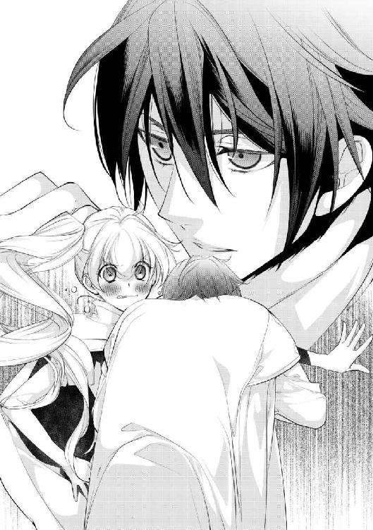
「......良かった」
随分吐息の多い囁きを最後に、顔が左腕から離れていく。ちゅ、とか聞こえたのは幻聴だ聞いていない。
（顔が、熱い）
そう言えばこの男は六歳も年上なのだと、今更思い出してへこむ。色恋とは全く無縁で、成人すらしていないリーウェの知らない世界を、きっとギデオンは知っているのだろう。
......胸が痛んだのも、きっと気のせいだ。
「リーウェ」
耳に心地よい声が、名前を呼ぶ。するりと長い指が頬を滑って、答える間もなく、今度は額がくっつきそうな位置に顔がある。
「は!? やっなになになに!?」
「ここにも、怪我してる」
言うが早いか、今度はあの感触が頬から耳の付け根へ、そして首筋へ伝っていく。
「ひっ!? や、やだ、やめてギデオン!!」
背筋を走る恐怖とは違う感覚に、思わずリーウェの声が裏返る。ギデオンはおかまいなく、また舌を這わせている。
「や、だ......離して！ いいから、治療いいから!!」
「終わった」
悲鳴のような懇願に、どこか笑いを含んだ声が返される。
決死の戦いを終えた後になんでこんな仕打ちを受けるのか。ほんの数秒ながら恐ろしい体験をさせられて、げんなりとギデオンから距離をとれば――。
「え？ 本当に傷がない......」
触れたのはつるりとしたいつもの自分の肌。制服の血はまだ乾いていないのに、傷口がどこにも残っていない。
「治療だと言っただろう？」
はっと視線を上げれば、したり顔で笑うギデオンがいる。その目は――赤い。
「貴方が治療の魔術が使えるなんて、初耳なんだけど」
「言っていないからな。疲れるしやり方がこれだから、リーウェにしか使わない」
治った己の腕を見れば、彼が嘘をついていないことはわかる。治療の魔術はこれがまた面倒な術で、魔導騎士でも使いこなせる人間はあまりいない。ハワード班では唯一、イーノスだけが使えるものだったのだが。
（舐めとけば治る、は騎士の常套句ではあるけど。目の色......魔力、よね？）
ギデオンは気付いていないようだが、はっきりと赤く染まっている。色こそリーウェと比べれば下位に分類されるが、強大な力を感じるのは気のせいだろうか。
（それに、やり方はさておいても、傷を治す速度はイーノスより上だった）
中庭の殺気も普通とは考えにくい。もしかしてギデオンは、相当な使い手なのではなかろうか？
「まだどこか痛むか？」
黙ったリーウェを気遣ってか、すっと目の前に出てきた顔に、思わず肩がはねた。
「もうない痛まないから！ 舐めるの禁止！」
「......残念だ」
慌てて押しのけるも、ギデオンは楽しそうに笑っている。見慣れたその顔に、心臓が早鐘を打つのは何故だろう。彼の触れた部分が、熱い。
「傷は治したが、けっこう血が出ていたからな。夜まではゆっくり休むといい」
「え、あ、うん......」
お約束に頭を撫でられるのも、今は振り払いたいと思わない。彼の手で乱されていく髪が、何故か嬉しくもある。
（なんだろう、これ）
子供扱いは嫌なのに。とくとくと温かい胸を押さえながら、リーウェはそっと目を閉じた。
三日目の舞踏会は、それまでの二日と比べて、さらに賑やかだった。
恐らく昼間の襲撃の興奮を引き摺っているのだろう。男も女も頬を紅潮させながら、饒舌に語り合っている。
「......大丈夫なのか、リーウェ。体が辛いなら、休んでいていいぞ」
「平気よ。ご飯も食べたし仮眠もとったし、傷は貴方が治してくれたしね」
連日と同じく壁際に並んで立つリーウェとギデオンは、会場の様子を眺めながら苦笑をこぼす。
仕事こそ同じではあるものの、昼間駄目になってしまった制服を新調したため、今夜は少し新鮮な気持ちで持ち場に立っている。やや硬めの生地が心地よい。
「それにね」
ちらっと視線を動かせば、遠巻きにリーウェを見ていた人々と目が合う。手をふってやれば、黄色い声を上げて喜ぶほどだ。
「私がいることで皆が楽しめるなら、務めは果たすわ。立ってるだけだし」
「お前がいいなら止めないが、無茶はするなよ？」
念を押すようなギデオンの声に頷いて返す。もっとも、無茶ばかりしているので、信用はあまりないだろうが。
（......正直なところ、舞踏会なんてやっている場合じゃないからね）
リーウェ以外には皆大きな怪我もなく片がついたため、今夜も舞踏会が開催されているが――状況は悪化している。
『魔獣』は魔物と違って誰かが造らなければ自然発生はしない。あれを城内に放った人間は、まだこの中にまぎれ込んでいるのだ。
リーウェが止められたからこの程度で済んだのであって、失敗していれば無差別に被害が出るところだった。当然、死者も出ただろう。
本当に運が良かった。これも、女神セラフィナの加護のおかげか。
（この城を守る結界は、まだちゃんと機能しているはずなのに）
目を閉じ、城を取り囲む結界を探ってみるが、いつも通りの清浄な壁がきちんと感じられる。
......ただ、魔獣の影響なのか、なんとなく靄がかかったような、いつもより少し遠いような気もするが。
まあその違いとて、使徒として他よりも詳しく感じ取れるリーウェが『誤差』の範囲に思う程度だ。偉大な女神セラフィナの加護は、今もちゃんとこの王宮を守ってくれている。それは間違いない。
ならば何故、二度も襲撃を許してしまったのだろうか。今も会場の外では、現場の検証と片付け作業が続いているが、原因はわからないままだ。
もしかして、敬虔な信徒が裏切っているのだろうか。しかしそれなら、セラフィナから沙汰がありそうなものだ。
最近悩むことが増えたなと思いつつも、考えられる可能性をひとつずつ挙げていく。頭脳労働はあまり得意でないので、考えても無駄なのかもしれないが。
「......リーウェ」
そんなリーウェの耳元に、また少し低くなったギデオンの声が届く。
明らかに警戒している様子を確認する前に、ぐいと大きな背の後ろへ隠された。
「え、何？ どうしたの？」
「リーウェさん」
ギデオン越しに聞こえた声にはっとする。ここ数日、今日は特に関わり深かった男性の声に、少しだけ肩が震えた。
「コーネリアス様......」
覗き見れば、今夜は黒地の衣装のようだ。心なしか装飾の少ないそれを着こなす美青年が、所在なさげに立っている。天使のような美貌にも、翳りが窺える。
「今晩は、リーウェさん」
「こ、今晩は」
失礼だとわかっていても、腕を広げて牽制するギデオンを頼もしく思ってしまう。あの時、コーネリアスが飛び出して来なければ、リーウェが傷を負うこともなかったのだから。
「あの、お話を、させて頂けませんか？」
「断る。これは怪我人だ。殿下が一番よく知っているはずだが」
躊躇いがちにかけられた声を、遮るようにギデオンが返す。怪我と言う言葉に、美しい顔が歪んだ。
「......謝罪をしたいのです。本当に、それだけです。リーウェさん」
俯く動きに合わせて、髪が影を落とす。色白な人ではあるが、今夜はさらに青みを帯びていて顔色が悪い。
「謝罪ならここでもできるだろう。違うか？」
「ギデオン、やめて」
強く、責めるような口調になってきたギデオンの手を引き、止める。振り向く黒眼は何故と雄弁に語るが。
「貴方が今日私の傍にいてくれなかったのは、何故だった？ またお説教されに行くとか、許さないわよ」
「............わかった」
止めるのはギデオンの、ひいてはリーウェのためだと告げれば、さすがにギデオンも口をつぐんだ。忌々しそうに睨みながらも、体をずらしてリーウェを通す。
目を合わせると、コーネリアスは明らかにホッとしたように微笑んだ。
「今更ですが、僕は何も持っていません。魔術も体術も、ほとんど使えません。貴女に危害を加えないことを、女神セラフィナに誓います。ほんの少しだけ、僕に時間を頂けませんか」
「............」
昼間のような短慮な様子はない。真摯な翠玉の目がリーウェをまっすぐに見つめている。
「......もう一つ。今夜、セラフの花を私に使わないと、約束して下さい」
「約束します」
付け加えた約束についても、即座に頷いた。このセラフィニアにおいて、女神に誓った約束は絶対である。
リーウェも頷き、ギデオンから離れて行く。去り際に目で合図を交わすのは忘れずに、警備の定位置から一番近いテラスへ出た。
宝石をちりばめたような空には、今夜も煌々と月が輝いている。
「それで、私にお話とは何でしょうか？」
リーウェの後ろから着いて来たコーネリアスは、ガラス扉を閉めると同時に勢いよく頭を下げた。
「申し訳御座いませんでした、リーウェさん！ 本当に何とお詫びをしていいか......僕のせいで、女性に怪我をさせてしまうなんて!!」
「え!? お、落ち着いて下さい、コーネリアス様？」
周囲に聞かれたくない話なのかと警戒していたら、本当に大国の王子に謝られてしまった。かすかに震える謝罪の声に、リーウェの方が面食らってしまう。
「私は騎士です。戦うのが仕事ですから、そうお気になさらず」
「しかし、僕が邪魔をしなければ、貴女が怪我をすることはなかった！ 僕のせいで......」
全くもってその通りなのだが、罪を自覚する人間を責めるような趣味はリーウェにはない。ましてや、自国よりも大きな国の王族に、そんなことができるものか。
「大丈夫ですから。どうか顔を上げて下さい、コーネリアス様。むしろ、貴方に怪我がなくて良かった」
「本当に、申し訳ない......」
ゆっくりと頭を上げさせれば、目を合わせてもう一度、コーネリアスは謝罪を告げる。王族とは思えないほどの腰の低さだ。貴族ですら謝れない人間は多いというのに。
「ええとそれで、謝るためだけにここに来た訳じゃありませんよね？」
「......はい」
なんとか話題を変えようとしてみれば、端麗な顔がまた翳る。ギデオンに聞かれたくないという時点で予想はついたが、明るい話ではなさそうだ。
咳払いと共にリーウェも表情を引き締めると、コーネリアスはぽつぽつと呟くように話し始めた。
「もし貴女が聞いていて、昼間の襲撃に関係がありそうなら......その時はどうか、僕を殴ってでも止めて下さい」
「穏やかではありませんね」
彼の白い手袋が、きゅっと音を立てる。握った拳は覚悟だろうか。
「......実はこの城に来てから、体が勝手に動くことがあるのです」
「勝手に？ それは反射的に？ それとも、無意識に？」
「上手く言えないのですが......僕の意識はあるはずなのに、別の何かから指令を受けているような......〝操られている〟とでも言いましょうか」
――それは確かに、穏かではないな。
飛び出した言葉の予想以上の危険さに、リーウェはこっそりと手を腰に伸ばす。愛剣の冷たい感触を確かめながら、コーネリアスからは目を逸らさない。
「先ほど申告した通りに、僕は戦える人間ではありません。護身用に剣は習いましたが、その程度。貴女がた魔導騎士に関われるような力がないことは、僕自身が一番わかっています」
眉間に深い皺が入る。ギリ、と奥歯を噛み締めるような音も聞こえた。
「......なのに今日の昼間、僕は何故か『貴女の元へ行かなければならない』と思っていたんです。邪魔にしかならないと、わかっていたのに......！」
そして、結果としてコーネリアスを庇ったリーウェは負傷した。まるで、リーウェの邪魔をするために行動したのだと、悔しそうに続ける。
（......待って、それはおかしい）
悲しげに続けるコーネリアスだが、〝リーウェが助けた結果があるからこそ〟そう思っているだけだ。
「お話を中断してすみません、コーネリアス様。今日のことは、私が間に合ったからこのような結果になっただけです。......もし間に合わなければ、貴方が......」
最後まで言わなくても、伝わっただろう。
怪我と言う結果になったから気にしていたのだろうが、リーウェが間に合わなければ、あの鉤爪はコーネリアスに襲い掛かっていたのだ。魔獣は意図してリーウェを狙ったわけではなく、そこにリーウェの腕があったから、それを斬ったに過ぎない。
気付いた事実に、彼の顔からさあっと血の気が引いていく。
（良かった、自殺願望はなさそうね）
だが、厄介な可能性も出てきた。本当に彼の意思でなく動いていたのなら、操られているという予想が真実味を帯びてくる。
（......コーネリアス様に、魔術がかかっている様子はない）
昨夜も確認した通り、彼はただの人間だ。魔術をかけてもかけられてもいないし、本人から感じる魔力も微々たるものだ。
しかし、その立場は大国バスカヴィルの王族。セラフィニア側としては、敵に回したくない存在だ。我が国に敵意を持つ者なら、利用するには最高の人間であるわけだが。
「コーネリアス様、何か心当たりはありませんか？」
「っ！」
何の気なくリーウェが投げかけた質問に、コーネリアスの体ははねるように反応した。あるのか、心当たりが。
「どなたです？ いつ頃からその感じが？」
近付いてみれば、非常に言いにくそうに顔を俯かせている。ということは、リーウェも知るところに原因があるのだろう。
「......強制はいたしませんが、私も魔導騎士の端くれ。何か力になれるかもしれません」
「リーウェさん......」
たっぷりと五秒。目を閉じて悩むコーネリアスを、じっと待つ。
やがて、意を決した彼から、その言葉が落ちた。
「............貴女の隣にいた、騎士です」
「リーウェ」
テラスから戻ると、すぐ近くにギデオンが迎えに来ていた。
何もされてない、と手を上げて返せば、安心したように黒眼が微笑む。
「............」
十年来の幼馴染みは、いつも通りの佇まいでリーウェが傍に来るのを待っている。いつも、通りに。
（......ギデオンが？）
コーネリアスとの会話が、はっきりと耳に残っている。
『彼の近くにいると、己の意思とは違う行動をしてしまう』
困惑した声でそう言っていた。勘違いならいいと。リーウェの仲間を疑ってすまない、と。
（コーネリアス様は多分、嘘はついていない。けど、ギデオンが何かをするとは思えない）
十年も傍に居たのだ。家族よりも誰よりも、親しい位置で育った。その彼が、今さらセラフィニアに害を成す理由が見当たらない。
リーウェを――メリーウェイス王女を殺したいのなら、もっと早くにできたのだから。
「どうした？ 顔色が悪いな」
「何でもないわ。ちょっと色々考えすぎて、疲れただけよ」
差し出された手を握れば、いつも通りに温かい。
けれど、先の話を伝えることも憚られて、小さく首をふって返す。
舞踏会の夜は、今日も賑やかに更けていく。少女の不安を隠したまま。
＊ ＊ ＊
懐かしい夢を見ている。
象牙色で統一された、女性らしい丸みを帯びた意匠の建物。周囲には花が咲き乱れる、今の住まいとは比べものにならないほど高級な場所。けれど、いつも人の気配がほとんどない、寂しい所だった。
今は少女たちの宿場として提供されている後宮の記憶だ。幼い頃のリーウェは、最低限の世話役と共に、ここでひっそりと暮らしていた。
多忙な上、世間の目も気にしなければいけない家族とは、あまり交流はなかった。会いに来た時はもちろん愛情を注いでくれたが、家族と呼ぶには遠い人たちだった。
世話役たちもリーウェの〝色〟を恐れていた節があり、家族代わりに親しくするような相手はいなかった。広く美しい建物の中で一人、事務的な主従関係で育むようなものもなく。
リーウェが『王女』の自分を諦めて、『使徒』として生きることを決めるのには、そう時間はかからなかった。
来る日も来る日も剣と魔術の鍛錬に励み、休憩時間は女神セラフィナに祈りを捧げる。思い返しても『楽しい』と感じた記憶はほとんどない。笑えるぐらい真面目な幼少期。
――けれど、十年前のあの日。真っ黒な少年が迷い込んで来て、リーウェの生活は変わった。
侯爵の息子らしい彼は、騎士を志していると言った。彼の叔父が騎士団にいて、その人を目標にしているのだと。今日も登城する父について来たのは、騎士団の様子を見たかったからだと。
迷い込んだと言うわりに、少年は焦ったり困ったりはしていなかった。騎士団の詰め所は、後宮からそれなりに離れた場所にある。城から来たなら方向は真逆だ。
（もしかして、私を捜しに来たの？）
姿を見せない第二王女を捜す輩は、今までにもいない訳ではなかった。しかし、厳重な警備と共に、建物には見つからないように魔術を仕込んであった。他ならぬリーウェ本人の手で。この少年は、奇跡的な確率で迷い込んで来たと言える。
「............」
少年とリーウェが無言のまま見つめ合う。黒髪黒眼の非常に整った顔立ちの少年は、将来確実に美男子になるだろう。着ているものも明らかに高級品であるし、金の装飾品もちらちらと見える。
しかし、リーウェが一番気になったのは、少年の無気力さだった。真っ黒な目に光はなく、「騎士になりたい」と言った口調も無感情。本当にそれは夢か？ と疑いたくなるほどに、何もかもが投げやりに見えた。
「あなた、いくつ？」
「十二になった」
六歳も年上の彼は、ぼんやりとした様子でリーウェを見ている。何も窺えない、穴のような目だ。
「......ねえ、騎士になりたいなら、剣はつかえる？」
「......もちろん」
しかし、好奇心で聞いた質問にその目が輝くのを見て、どうやら本当に夢だったらしいと知る。無表情ながら、どこか嬉しそうにも見える。
「わかった。ちょっとまってて」
少年に断りを入れて部屋へ戻ると、リーウェは年に不相応な木の塊を持って来た。枝と言うには太いそれは、リーウェが鍛錬に使っている模造剣だ。
「わたしもね、騎士に剣をならっているの。おむかえがくるまで、たんれんしよう？」
「わかった」
リーウェが手渡したそれを興味深そうに振りながら、少年が頷く。すっと構える姿勢は、リーウェよりもよほど様になっていた。
「じゃあいくよ？」
「ん」
幼い掛け声と共に、カンと木のぶつかり合う音が響く。模造剣とはいえ、それなりに重さはある。十二歳の少年と六歳の少女、体格差から見てもどちらが勝つかは明白であったが――。
「嘘だ......」
数回の打ち合いの後、模造剣を落としたのは少年の方だった。
予想外の結果に、真っ黒な瞳が見開かれている。
「年上なのに、あんまりつよくないね」
一方勝った方のリーウェも、想定外だと言わんばかりにきょとんとして、落ちた剣と少年を見比べている。その言葉にかっと顔を赤らめた少年は、大慌てで模造剣を拾った。
「も、もう一回！」
「うん、いいよー」
今度は少年の掛け声で木の打ち合いが始まる。「油断していただけだ」と自分に言い聞かせながら、少年は上からだけでなく、横から払ったり切り上げたりと、様々な方向から攻める。耳に心地よい軽い音が何度が続いた後。
「あ!?」
また剣を飛ばされたのは少年の方だ。自分より背も低く華奢で、しかも女に負けるなんて。呆然と地面を見つめる少年に、リーウェが走り寄って落ちた剣を拾う。
「はい、どうぞ。それとも、やめる？」
「......ッ！ ま、まだだ!!」
奪いとるように剣を持った少年に、リーウェは微笑む。こうして普通に話してくれる人は久しぶりだと、はやる心臓を押さえながら。
どれぐらいの時間、そうしていただろうか。
ふいに入口が騒がしくなったと思えば、金髪青眼の美しい少年が騎士を連れて駆け込んで来た。
「お前、こんなところで何をしている!!」
「あ、王太子さま」
少年よりもいくらか年上の彼は、この場所に入れる数少ない人物。リーウェの実兄にして王太子だった。顔を知っていたらしい少年は、一息ついた後に臣下の礼をとる。
......通算二十戦、結局少年は一度もリーウェに勝てていなかった。
「ここがどこなのか知って......！」
「やめて王太子さま。この人は迷子よ？」
引き連れた護衛の騎士が柄に手をかけようとするのを、リーウェの小さな手が制する。怒鳴ろうとした声を引っ込めると、王太子はリーウェの体をじっと見て、変わりがないことに安堵の息を吐いた。
「......一体どれだけ鍛錬をしているんだ。六歳なのに異常だ」
「ん、わたし？ えーと」
礼の姿勢をとったままの少年の呟きに、それを拾ったリーウェが己の日常を指折り答える。鍛錬勉強鍛錬勉強......その、あまりにも少女とはかけ離れた厳しい生活に、少年も王太子も、後ろにいた騎士もぽかんと口を開けて黙ってしまった。
「......いつ、休んでいるんだ？」
「ぜんぶおわったらねてるよ？ どうして？」
それを口にしたリーウェは、さも当然とばかりに首をかしげる。動きに合わせて揺れる赤髪に、少年は何かを悟って俯いた。
「とにかくお前、侯爵が捜しているからすぐに戻れ。それから、ここであったことは他言無用だ、いいな」
「はい、わかりました」
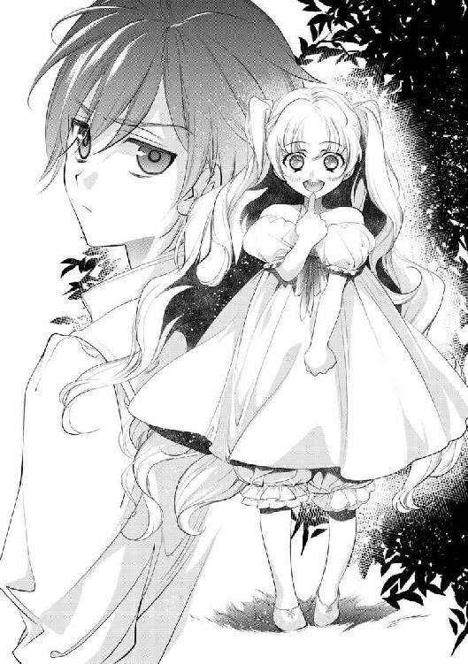
はっと我に返った王太子が、また怒気のこもった声で指示をする。少年もすぐに敬礼の姿勢で返す。先ほどまで見せていたはずの感情を、また消して。
「......さようなら、お兄さん」
楽しかったなと、そう口にはできず、リーウェもそれらしい姿勢で頭を下げる。連行されるように騎士に背を押された少年は、最後に少しだけ振り返って質問した。
「俺はギデオンだ。お前の名前は？」
「わたし？ メリーウェイス」
......あ。
誰かの間抜けな声が落ちた。
目を見開いて驚くギデオンと、頭を抱える王太子と騎士。その日から、長い時間を共にする幼馴染みの関係が始まったのだ。
＊ ＊ ＊
......ああ、本当に懐かしい夢を見たな。
ほんのりと温かい気持ちのまま、リーウェの意識が覚醒する。
ぼやけた視界に広がるのは、見慣れた宿舎の部屋の風景......の中に黒い色がぼんやりと交じっている。
「......ん？」
目を凝らしてじっと見つめるのは、枕のすぐ隣。横向きに寝ていた自分と向かい合う位置に――成長した黒い少年がいた。
「......ッ!?」
瞬時に目が覚めた。はっきりした視界の中には、やはりギデオンがいる。今日は同衾していないようだが、リーウェの顔のすぐ近くで、組んだ腕の上に頭を乗せている。
「ね、寝てる......？」
特徴的な鋭い目は閉じられており、かすかに吐息が聞こえる。時刻を確認すれば、いつもの起床時間より随分早い。何か用があって来たのだと思うが。
（疲れてるのかしら）
布団から手を伸ばして、いつもされているように頭を撫でる。リーウェより少し硬い髪の感触がくすぐったい。
「十年か......」
今までの人生の半分以上一緒にいるのだから、長いなと思う。
あれから紆余曲折を経て、黒い少年は第二王女の秘密を共有する話し相手になった。度々後宮を訪れては話をし剣を打ち合い、めきめきと力をつけたギデオンは、いつしか話し相手から近衛騎士へと昇格した。
今では、女神の加護を得ているリーウェの、唯一勝てない人間だ。
「いつから勝てなくなったのかしらね」
撫でる動きのままに指を下ろして、頬をつつく。少しだけ反応したが、目を覚ます様子はなさそうだ。
「ギデオン」
何となく呼んでみて、何となく恥ずかしくなった。
あの頃の予想通りに......いや、予想よりもずっと魅力的な男性に彼は成長した。しかし、自分との関係はあまり変わらないまま。幼馴染みで友達で兄代わりでもあった彼は、六歳の頃と対応が変わらない。
いや、むしろ年を経るにつれて、子供扱いが酷くなっている気がする。
「私は、もう子供じゃない」
認めて欲しい。信用して欲しい。その思いは、リーウェが魔導騎士になり、成人を控えてからより強くなった。かつて勝っていたはずの少女は、今は遠い隣を目指して剣を振るっている。
「こういうところが子供っぽいのかしら」
「いや、子供だとは思っていないぞ？」
独り言のつもりで呟いた声に、まさかの返答が聞こえた。
つついた指を慌てて引っ込めれば、うたた寝姿勢のままのギデオンと目が合う。甘い微笑に心臓がはねた。
「お、起きてたの？」
「今起きた。悪い、寝顔を見ていたら眠くなった......」
あくびを噛み殺しながら、体を起こすと関節が鳴った。どれぐらいあの姿勢でいたのだろうか。軽く腕を回しながら、つられて起きだしたリーウェの頭をぽんと撫でる。
「イーノスから伝言があった。例の王子の件で気になることが見つかったから、少し早めに集まれだと」
「少しって、いくら何でも早すぎるわよ。日も昇ってないじゃない」
髪を乱す手をいつも通りに振り払えば、口元がにやりと笑う。
「寝顔が見たくなった。可愛かったぞ」
「出て行け変態!!」
思わず枕を投げつければ、ギデオンは軽々と受け取った後、気にした様子もなく出て行った。恐らく、扉の外で待っているだけだが。
「なんなのあの馬鹿......昔はもっと大人しかったはずなのに」
夢で見た黒い少年は、もっと無感情で淡々としていた気がする。今も基本的には無表情らしいが、リーウェといる時のギデオンは、豊かすぎるほどに感情を表している。
早鐘を打つ心臓の原因が、恥ずかしさ〝だけ〟でないのも、リーウェにとっては忌々しいことだ。
「昨日変な治療をされたからだわ......」
無意識に落ちた呟きに、つい思い出して頭を押さえる。舞踏会が始まって以降、自分の中の女の子の顔が出てくるので困る。『リーウェ』は騎士でいなければいけないのに。
「......さっさと準備しよう」
顔を冷やす意味も込めて、ベッド脇の水差しの水を洗面器に注ぐ。水鏡に映るのは、白い頬を真っ赤に染めた、あどけないただの少女だった。
着替えを終えて外に出れば、やはり扉の前でギデオンが待っていた。いつも通りのリーウェの様子を確認してから、いつも通りに並んで歩き始める。
「というかねギデオン。いくら早くと言っても、イーノスもまだ起きてないと思うんだけど」
窓の外はようやく少し日が見えてきたぐらいで、まだまだ薄暗い。朝告げ鳥も眠っているような早朝に行っては、逆に迷惑だと思うのだが。
「時間なら問題ない。イーノスはまた徹夜だと言っていたからな」
「また!? あの人、舞踏会期間はずっと寝ないつもりなの？」
「仮眠はとっているだろう」
むしろ、仮眠室の主となりつつあるイーノスを思って、リーウェは眉間を押さえる。ただでさえ他の班員よりも細いのに、この催事が終わる頃には骨と皮だけになってしまうのではなかろうか。
「まあ、それだけあの王子について思うところがあったんだろう。俺も同じ考えだからな」
「............」
見上げたギデオンは、眉を顰めながら不快感を露にしている。ふと思い出すのは、昨夜のコーネリアスの姿。戸惑いつつも、ギデオンを疑っていた彼の声。
「......互いに疑い合っているなんて、交流少ないのに変なの」
「何か言ったか？」
「何でもないわ。面倒なことになってると思って」
苦笑しながら首をふって返すものの、本当に面倒なことになっていると思う。それぞれ思うことがあるのだろうが、それにしたって親の仇でもあるまいし。
（まあ、ギデオンを疑おうとは思わないけど）
何も知らないコーネリアスには悪いと思うが、疑う理由がない。今朝だって、ギデオンなら何の障害もなくリーウェを殺すことができた。寝首を掻くと言う、一番楽な方法で。
（それにしても、なんでコーネリアス様はギデオンが怪しいと思ったのかしら）
仲間同士の撹乱を狙うのなら、あまりにも稚拙な策だ。それに、コーネリアスが嘘をついていたような様子もなかった。
「うーん......」
「何を考えているのか知らんが、頭脳分野は専門家に任せろ。着いたぞ」
色々と思考を巡らせていたら、いつの間にか詰め所へ到着したようだ。いつも通りに扉をくぐれば「ノックぐらいして下さい」と中から声がかかる。
「うわ、本当に起きてる。おはよう、イーノス」
「これから寝ますよ。随分早くから来ましたね、二人とも」
ギデオンが言った通り、やや暗い部屋の中にはイーノスが待ち構えていた。眉間の辺りを揉みながら、少し気だるそうに椅子にもたれかかっている。本当に徹夜明けらしい。
「はいこれ、バスカヴィルの王子様の身辺調査結果です。王子様自身に怪しい点はありませんでしたが、連れて来た従者がクロのようですね」
「え、そうなの!?」
あえて質の悪い紙に記された結果は、読み終わったら燃やせということだろう。イーノスのきれいな字で、箇条書きに情報が連ねられている。
......登録上は普通の使用人だが、どうも護衛を兼ねた魔術師だったらしい。それも、以前勤めていた所を追われるような形で辞めている。
「魔術師のツテをあちこち当たったらひっかかりましたよ、彼。上手く隠したものです」
「............」
リーウェの後ろから、ギデオンも覗き込んで確認する。
ぱっと見ではわからないが、魔力を隠しているだけで、かなりの使い手らしい。かつては魔術師として研究機関に勤めていたが、禁忌とされているもの、いわゆる『呪術』に手を出して、その資格を剥奪されていた。
「職を追われたところを、コーネリアス様が拾ったってこと？」
「そのようですね。バスカヴィルが正式に雇った者ではなく、彼の私兵と言うのが正しい位置づけでしょう。名前も偽名ですよ」
ということは、公式書類の情報はあてにならない。名前の部分に爪で横線を入れた後、続いた一文に二人とも目の動きが止まった。
「......この人、造れるのね。『魔獣』を」
「ええ、随分熱心にそのテの研究をしていたようですよ」
肯定の声に、ギデオンの拳から軋む音が聞こえる。仰ぎ見れば、その顔にははっきりと怒りが浮かんでいる。
「落ち着いてギデオン。まだ確定した訳じゃないわ」
「......わかってる」
たしなめてはみるが、今にも殴り込みに行きそうな雰囲気だ。イーノスに助けを求めてみるも、彼も苦笑を返すのみ。
『魔獣』は生成方法そのものが犯罪ギリギリの研究だ。セラフィニアでは九割が有罪になるので、正常な魔術師なら知識としてしか学ばない。それを踏まえれば、この従者が犯人である可能性は高いだろうが。
「ギデオン、殺してしまっては何も掴めません。可愛いリーウェが怪我をさせられて怒るのはわかりますが、落ち着いて下さい」
「......ああ」
「ねえ、さらっと可愛いとか入れないで恥ずかしいんだけど」
真面目な会話の中の余計な一言に思わず突っ込めば、二人は揃ってリーウェを見た後、妙に息の合った様子で笑った。
「リーウェは可愛いですよ？」
「ああ、可愛い。俺のリーウェは最高に可愛い」
「やめて美形ども、苛めか!?」
ギデオンにいたっては、側頭部の辺りに頬ずりしながら笑っている。怒気が引っ込んだのは良かったが、からかわれたリーウェとしては面白くない。しっしと黒い頭を払うと、にやにやするイーノスに次の情報を催促する。
「はいはい。その従者ですが、護衛のくせに部屋からほとんど出ていません。舞踏会へ行く時にも、別の者が付き添っているようです。おかげで、容姿についてはわかっていませんね」
「ふむ......」
リーウェは会場から出られない立場のため、控えの間にいる従者については詳しくない。ただ、初日に見かけたコーネリアスの従者は、皆ごく普通の男性で気になる点もなかった。
「普通だからこそ、見落としてたってことね」
「でしょうね。私たちが動くとバスカヴィルへの刺激になってしまうでしょうが、リーウェは王子様と個人的に親しいと聞きました。魔導騎士としてではなく、リーウェとして会いに行くのであれば、何か話せるのではと思っているのですが」
「............」
イーノスの提案に、ギデオンが顔を顰める。つまり、騎士としての装備を持たずに会いに行けということだ。もちろん、ギデオンを伴っては行けない。
「丸腰はちょっと怖いけど、魔術は使えるしね。わかった、やってみるわ」
「お願いします。ギデオンも心配なのはわかりますが、貴方がついて行って警戒されるのは好ましくありません。どうか抑えて下さい」
「............わかった」
渋々と言った様子でギデオンも頷く。イーノスは安堵の息を吐いてから、リーウェに小さな石つぶを手渡した。
「これは？」
「先日の魔獣の爪の破片です。解析担当から少しだけ借りてきました。その従者に会ったら、残っている魔力と照合できるでしょう」
魔術関係の件でイーノスに抜かりはないようだ。残滓が抜けきらないように加工された破片からは、この部屋の誰のものでもない力を感じる。
「......さすがね」
「それほどでも。さ、私からの話は以上です。朝食をとったら、今日の業務へ行って下さい」
橙色の瞳が微笑むと同時に、リーウェの手の中の紙は粉々にとけてしまった。燃やす手間すら省いてくれるとは、賞賛せざるをえない手際の良さだ。
これから仮眠に入るであろうイーノスに頭を下げて、部屋を出る。先ほどは頷いていたギデオンだが、イーノスから離れた途端、不服そうにリーウェにくっついて来た。
「ギデオン、重い」
「怪我をさせてしまったばかりなのに、離れられるか。俺も行く」
「そのでかい図体をどこに隠すのよ」
ギデオンはリーウェよりも頭一つ以上背が高い。リーウェの容姿だけでも目立つのに、こんな大きな付属品まで連れて行っては、注目して下さいと言っているようなものだろう。
ましてや、コーネリアスはギデオンを疑っている。張本人を連れて行って、話ができるとは思えない。
「気配を消すのは得意だ」
「気配で済む問題じゃないから、大人しく待ってて。騎士の仕事で離れる分は、護衛として咎められないって言ったじゃない」
「......俺は離れたくない」
なおも擦り寄ってくる彼は、護衛と言うより手のかかる子供だ。
（どこかでハワードを見つけて、引き取って貰わないと）
大きな男を引き摺りながら、リーウェは深いため息をつく。
ハワードは班長を務めるだけあって、唯一ギデオンに言うことを聞かせられる男だ。苦労ばかりさせて申し訳ないが、適当に仕事を振って貰うとしよう。
「リーウェ」
「連れて行きません！」
同じやり取りを繰り返しながら、薄暗い廊下を進んで行く。触れ合う体温に早まる心臓など、気のせいだと自分に言い聞かせながら。
あれから早い朝食と午前の業務を済ませ、細々とした仕事を片付けていると、城内も本格的に活動を始める時間になっていた。王都の店もだいたい開いている頃だ、コーネリアスもきっと起きているだろう。
詰め所の食堂でハワードにギデオンを押し付けたリーウェは、丸腰で一人、王宮の客間階へ向かっていた。
私服に着替えるべきかとも思ったが、変な見方をされても困るので制服のままだ。腰が軽いので少々心もとないが仕方ない。
詰め所と違い花が香る美しい廊下には、等間隔に騎士が立っている。魔導騎士の制服を見て少し驚いてはいるが、止められることもなく目的地へ進んで行く。
やがて角の一際大きな扉の前に辿りつくと、特に誤魔化したりはせずに警備の騎士に声をかける。彼もリーウェを止めることもなく、すぐに部屋の主へとかけあってくれた。
少し離れて見ていれば、出て来たのはコーネリアスではなく、三十前後の男性。二、三言その男性と話をすると、騎士は困ったような様子でリーウェを手招いた。
「問題がありましたか？」
「ああ、すみません。実はコーネリアス殿下は、昨夜から少々体調を崩しておりまして......言伝でしたら、私が承りますが」
リーウェが改めて声をかければ、答えたのは部屋から出て来た男性の方だ。従者らしい装いの彼は、こちらを確認すると丁寧に頭を下げる。
「えっと、実はコーネリアス様本人でなく、彼の従者さんに用があったのですが」
聞くべきか迷ったが、ここで止めても仕方ない。知らないと答えられる可能性も考えつつ、公式書類にあった偽名を尋ねてみる。
「......それは、私のことですが」
「ええっ!?」
すると、返ってきたのはまさかの答えで、つい上ずった声が出てしまった。イーノスの話では部屋から出ないということだったが、こんなにあっさりと本人が対応してくれるとは。
リーウェに見覚えのない従者の方は、やや怪訝そうな様子で首をかしげている。特に変わったところのない、ごく普通の男性に見えるが......。
（......なんだろう、目が、変？）
よくよく見ると、彼の目はどこかぼんやりとしていて、焦点が合っていない気がする。盲目という情報はなかったし、今も普通に会話をしているが、何かがおかしい。黒っぽい紫の目には、リーウェも騎士も映っていない。
「貴女はセラフィニアの騎士の方ですよね？ ご用件をお伺いしても？」
「ああ、すみません！ ちょっとお聞きしたいことがあるのですが、今お時間を頂いても大丈夫でしょうか？」
「はあ......」
警備の騎士にも許可をとって、すぐ近くの歓談席へ移動する。ここなら周囲に人もいるし、突然何かされることもないだろう。
着席を促せば、丁寧な動きで腰掛ける。何も持っていないし不審な点もない。......なのに、目だけがどこか虚ろだ。
（まさかとは思うけれど）
しかし、彼がイーノスの調べた通りの人物だとしたら、禁忌に手を出した〝容疑者〟ということになる。賓客であるコーネリアスに害が及ぶ前に、できることはやっておくべきだろう。
（ここで失敗したら使徒失格だわ。焦らずゆっくり......）
不審に思われない程度に目を閉じて、体の奥の女神の加護に問いかける。
（我が君、偉大なる女神セラフィナよ。どうか、この者を照らす力を）
ほとんど聞こえない声量で祈りながら、リーウェがそっと従者の手を取る。何事もないならそれでいい。だが、もしも最悪の予想が当たるなら......女神セラフィナの力なら、邪悪を見通せるはずだ。
「......ッ!?」
淡い光がその手を包んだ直後、ぱりんと何かが壊れる音が聞こえた。本当に小さな、すぐ近くにいるリーウェにしか聞こえないような音。
（良かった！ 今回はちゃんと成功したみたいだ）
戦場では上手く使えなかった女神の力も、今回は無事に発動してくれたようだ。従者に取り付いていたらしい謎の術が、きれいに晴れている。
「............ん？」
その結果、向かい合った従者に大きな変化があった。ぼんやりとしていた目はハッキリと光を映し、色も橙に近い鮮やかな赤......魔力を示す色になっている。
「あ、れ？ 私は......？」
驚きと困惑を隠すこともなく、従者は首をかしげる。それこそ、今まさに起きたばかりのように。
「大丈夫ですか？」
「はい、あの......ここは、どこかのお城、ですか？ おかしいな、なんだか記憶が......？ どうして私はこんなところに？」
「............は？」
問われたリーウェも、言葉の意味がわからず返答ができない。
従者はきょろきょろと辺りを見回しながら、不安そうにリーウェを見て、すぐに視線を逸らすを繰り返している。嘘をついている様子はないが、どうにも挙動不審だ。爪を噛んでいるのも、恐らく無意識なのだろう。
「えーと、どこまで覚えていますか？」
「どこまでと言われても......殿下に付き添ってセラフィニア王国に行く、という話を聞いたのです。貴女はどなたですか？ ここは？ 今は、一体何日です？ 私は......」
矢継ぎ早に質問をする彼の顔はどんどん青ざめていく。それはそうだ。もし彼のいっていることが本当なら、知らない間に知らない場所で、他人と向かい合っていることになる。かたかたと足を揺する音が響く。
「どうか落ち着いて聞いて下さい。ここはセラフィニア王宮です。貴方は――」
リーウェはリーウェでどうしたものかと困惑しつつも、とりあえずわかっていることを従者に伝えていく。事実を伝える度に震える彼を気遣いながら。
「......では、ここはセラフィニアで、私は殿下の従者として、もう何日もここにいるのですね......？」
「そういうことになりますね」
深くうな垂れながら、従者はリーウェの告げた内容を反芻している。「有り得ない、そんな馬鹿な」と何度も呟く声がかすかに聞こえてくる。
（どういうこと......？）
彼が最も疑わしいと思っていたこちらも拍子抜けだ。これではまるで、彼も〝操られていた〟みたいじゃないか。
（そうだ、爪の破片）
ぶつぶつと呟く従者に気付かれないよう、上着に忍ばせた例の破片を握る。中に残った魔力は......眼前の従者のものによく似ている。ただし、別の人間の力も混じっているようだ。完全一致はしない。
「......混乱しているところごめんなさい。貴方は、魔獣を造れますよね？」
性急とわかりつつも、なるべく冷静に尋ねてみる。すると、青白い顔をしていた従者は顔を怒りに染め、勢いよく立ち上がった。
「またその話......確かに私はそれに携わっていました！ ですが、騙されていただけだ！ あんなもの、私は絶対に造らない!!」
突然の怒声に周囲の騎士たちが慌てて駆け寄って来る。幸い、コーネリアスには届いていないようだが、口唇を噛み締める従者の顔には、激しい怒りと拒絶が浮かんでいる。
取り押さえようとする騎士たちを片手で制して、リーウェは引き締めた顔でさらに尋ねる。
「女神セラフィナに誓って頂けますか？ 貴方は魔獣を造らない。そして、コーネリアス様の立場が悪くなるようなことはしない、と」
「もちろん誓います！ 殿下は私を救ってくれた方です。あの方にご迷惑をおかけするぐらいなら、私はいっそ死を選びます！」
「............」
挑むようにリーウェを睨みながら、従者は力強く宣誓する。
使徒たるリーウェの前で女神に誓いを立てると、嘘や偽りがあった場合、何となくわかるのだ。その場しのぎは通用しない。
従者の誓いには――嘘はなかった。
「......わかりました、貴方を信じます。ご協力有難う御座いました」
「え？ え、あ、はい」
リーウェが微笑んで頭を下げれば、憤っていた従者は我にかえり、つられるように礼を返した。警戒する騎士たちにも必要ない旨を告げれば、それぞれ持ち場へ戻って行く。従者もまた、騎士に連れられて客間へ戻って行った。
......さて、これはどうしたものか。
（あの魔獣を造るのに、従者さんも関わっているのだろうけど）
様子を見るに、彼もコーネリアス同様『操られていた側』なのだろう。では、犯人は一体誰なのか。コーネリアスの従者の中に、他にも魔術師がまぎれ込んでいるのか。
「魔獣を造ったのも彼の意思じゃないみたいだし。困ったな......」
「黒に近い灰色だが、あれを捕まえたところで解決にはならないな」
「そうなのよ............って、ええッ!?」
思い悩むリーウェの背後から突然の聞き慣れた声。つい答えてしまってから振り返れば、柱の陰にハワードに押し付けてきたはずのギデオンが立っていた。したり顔で笑いながらリーウェに手をふっている。
「ぜ、全然気付かなかった......いつからそこに居たの!?」
「最初からずっとだ。気配を消すのは得意だと言っただろう？」
もしかしてこの男、騎士ではなく本職は暗殺者なのではなかろうか。予想外の登場に驚いたが、リーウェですら気付けなかったぐらいだ。きっと周囲の騎士やあの従者にもバレていないだろう。......と願いたい。
「それで、あの従者はどうする？」
くいと顎で示すのは、彼が戻って行ったコーネリアスの客間だ。騎士としての顔に切り替えたギデオンに、リーウェも表情を改める。
閉じた扉の前には警備の騎士が一人増えて立っているが、他に変わった点はない。
「ハワードとイーノスに報告はするわよ。でもあの様子なら、いきなり動くのは難しいわ。バスカヴィルが放っているのなら、この国で手を出すわけにもいかないし」
「王族に危害を加えている時点で問題だがな。何にせよ、あと二日を無事に終わらせるのが第一か」
隣に並んできたギデオンを窺えば、その目は鋭く客間を睨みつけている。リーウェの怪我の件をまだ怒っているのだろう。少し前までは、心配されることは不満だったはずなのに。
（なんでだろう。私のために怒ってくれてるの、ちょっと嬉しく思ってる）
変な治療をされてからというもの、どうにもギデオンの挙動を今までと違うように感じてしまう自分に、困惑しつつも胸が温かい。
成人の日が近いからだろうか。『リーウェ』としては好ましくない心境の変化も、大人になるために必要なものなのかもしれない。
「どうした、呆けた顔をして。そんなに俺が隠れていたのが不思議だったか？」
「え？ ああ、うん。気付けなかった私たちも間抜けだけどね。はは」
素直に言うのが気恥ずかしくて、つい曖昧に笑って返してしまう。今度はギデオンの方が不思議そうに首をかしげるが、追求はしない。
「見張ってるのも心証よくないし、一度詰め所に戻りましょうか」
「そうだな。俺も頭を使うことは得意じゃない」
「も、ってさりげなく言わないでくれる？ そりゃ、私も頭良くないけど！」
リーウェが頬を膨らませて抗議すれば、いつも通りに穏やかに笑いながら、ギデオンが帰り道を先導して行く。
いつも通り、今まで通りに変わらない幼馴染みのやり取り。そこに安堵と不満を同時に感じてしまうのも、誕生日が近いせいだろうか。
（なんだか本当に、ただの女の子みたいだわ）
隣の彼には悟られないよう、胸元をきつく握りながら見慣れぬ廊下を並んで歩く。今は恋する乙女の真似事をやっている場合じゃないのに。
「......駄目ね、私。祈りが足りないんだわ」
「急にどうした？ セラフィナに祈るよりも、イーノス辺りに教わった方が良いと思うが」
「頭の話じゃないわよ」
まあ、結局リーウェがどう思ったところで、この幼馴染みの対応は変わらないのだろうけど。
軽く息をついて視線を巡らせれば、詰め所とは似ても似つかない美しい内装の道が続いている。立派な扉の前にはそれぞれ騎士が立っているが、中の人間が出て来る様子はなさそうだ。
（そりゃそうよね）
舞踏会は予定通りに開催されているものの、一連の騒動が解決していない以上、部屋から出たくないのは当然だ。本来なら、セラフィニア王宮自慢の庭園などを見学して貰っていたのに。
「......警備をする側としてはやりやすいけど、異様な光景よね」
「ここのことか？ 迂闊に出歩かれても困るし、俺はこれでも構わないがな」
「......そう」
歩幅を狭めてゆっくり窺っても、聞こえるのはリーウェたちの足音と声だけ。初日の喧騒が嘘のように、辺りは静まりかえっている。
「早く、終わらないかな」
「そうだな」
姿の見えない犯人を追うことも、舞踏会で姫君捜しをいなすのも、少し疲れてしまった。あと二日が長くてもどかしい。たとえ、終わった後に王女に戻らなくてはいけなくなったとしても、平穏な日常が戻るならそれで十分だ。
いつの間にかくしゃりと撫でられた髪を直す気も起きず、ギデオンに促されるまま客間階を後にする。
――その背後をひっそりと見つめる血のような瞳を、リーウェはまだ知らない。
＊ ＊ ＊
あれからハワード班での相談の後、『今回の犯人としては弱い』という結論に至ったかの従者は「容疑者候補」に落ち着き、事態はほぼ振り出しに戻ってしまった。
他に気になる人間を捜そうにも、客間はあの通りの静けさなので、なかなか候補も挙がらず。かと言って、別邸から入城している貴族たちは、受付から監視の厳しい夜間帯にしか関わっていないのだ。怪しい者がいるなら、すぐに名前が知れている。
情報を洗いつつ他の業務をこなしていれば、あっと言う間に舞踏会の時間になってしまった。
「......夕食とり損ねた」
「奇遇だな、俺もだ」
げんなりとした表情のリーウェが呟けば、同じく疲れをにじませたギデオンの声が隣から聞こえて来る。
もはや恒例となってきた壁際の定位置に並び立つ二人には、集まった者たちも馴染んだもので、労いの言葉をかけながら会場の中へ入って行く。
中央テーブルにはご馳走が山のように積んであるのに、取りに行けないのが警備係の悲しいところだ。小さく鳴く腹を撫でつつ、見えないようにため息をこぼす。
「あの王子、今夜は欠席か」
「ああ、そうらしいわね」
客間を訪れた際にも休んでいると言っていたが、夜までに回復しなかったようだ。その報せを聞いて、残念そうにしている少女たちがちらほら見受けられる。
「昨日は彼も巻き込まれたんだし、仕方ないでしょう。それに、本番は明日......最終日だろうしね」
「だな」
揃って視線を向ければ、今までよりもさらにギラギラした目で参加者たちを見定める姿。それも、男はもちろん女側にもそういう姿勢の者が多数いるようだ。
一見華やかな舞踏会の会場なのに、漂う空気が狩り場や戦場のそれと似ているのは、きっと気のせいではない。
「ここにいるんだけどねえ、お姫様」
少し残念そうに呟けば、隣のギデオンが笑いを堪えた気配がする。
昨日の一件からリーウェを慕う者は増えたようだが、完全に第二王女候補からは外れたようだ。病弱と言われている王女が、魔獣を一人で倒すとはさすがに思わないだろう。リーウェとしては喜ぶべき展開なのだが、どうにも素直に喜べないものだ。
「まあ、件の犯人も動くなら明日だろう。今夜は空腹を耐えて、乗り切ればいい」
「はーい」
いつの間にか弦楽隊の曲目が変わっており、人々は蝶が舞うように楽しげに踊っている。
残りあと一日。全てが終わった時、自分はリーウェでいられるのか。それとも、メリーウェイス王女に戻るのか。
不安しか浮かばない頭を小さくふって、警備の騎士の顔に戻す。
三拍子の軽やかなワルツが、月の隠れた夜空に響いていた。
〝気をつけて〟
鈴を転がすような、美しい声が聞こえる。
ここは夢の中だろうか。いつもより酷くおぼろげな世界の中、頭に直接響く主の声を捜して、リーウェは跪く。
〝気をつけて。滅びと虚ろの王が、近い〟
以前にも聞いた警告だ。なのに、何度も繰り返すのは何故だろう？ 声はまだ遠い。いや、どんどん遠ざかっている気がする。
（我が君？ セラフィナ様、どこですか？）
組んだ手に額をつけて、目を閉じる。
空気が妙に重くて、肌にまとわりつく。女神セラフィナの夢を不快に感じるのは初めてだ。
〝気をつけて。あれが司るのは、破壊と滅びだけではない〟
〝音もなく、気配もなく、世界へ入り込む【虚無の王】〟
〝気付いて。でないと、すぐ、傍に〟
（セラフィナ様？ 待って下さい、どういう......ッ！）
引き止めようと顔を上げれば、視界に入るのはただ暗い闇。光はどこにもなく、どちらが上かもわからない黒の世界。
「何これ、どうして!?」
女神の気配はどこにもない。目印だったセラフの花も見えない。
空気が重い。女神の夢で、何故こんな――。
「起きろ、リーウェ!!」
「......ッ!?」
夢の中にまで響いてきた強い声に、瞬時に意識が覚醒した。また汗をかいていたのか、肌に張り付く寝間着が冷たい。
「......ギデ、オン？」
「起きたか？ 二度寝はするなよ？ お前は起きていた方がいい」
首を少し傾ければ、見慣れた黒い男が苦笑を浮かべて立っていた。彼の握る左手だけが、温かくて心地よい。
「......最近、毎日いるわね。女の部屋に勝手に入るとか、どうなのよ本当」
目に入った人物に安心してしまったのか、深く息を吐いてから冗談をこぼす。
けれど、ギデオンはのってくるでもなく表情を引き締めると、リーウェの背に腕を入れて、その身を起こさせた。
「............？」
なんだろうか、空気が妙に重く湿っている。まるで夢の続きのようだ。寝間着が濡れているのは仕方ないとしても、セラフィニアで空気を気持ち悪く感じることなどそうはない。
（雨も降ってないし）
ちらと見上げた窓の外も、曇ってはいるが雨は降っていない。ただ妙に厚く、黒々とした雲が空を覆っているだけで――。
「......え、なにこれ」
一拍おいて、固まった。雨が降っていないからこそ、その暗さは異常だった。インクをぶちまけたような完全な漆黒。太陽はもちろん、月も星もなければ、ほんのわずかな光すらも見えない。
時刻を確認すれば、普段のリーウェの起床から少し早いぐらいだ。なのに、外は真夜中よりも暗く静まり返っている。
「ギデオン、何これ。空が変なんだけど」
「空以外も変だぞ。今日は気合を入れて準備しろ。多分、使徒のお前にも堪える状況だ」
戸惑うリーウェに白湯の入ったカップを手渡すと、軽く頭を撫でてからギデオンは部屋を出て行く。その間、目はずっと鋭いままで、戦場にいるような張り詰めた様子だった。
「何が起きてるの......？」
カップの中身を飲み干して、すぐに制服に手をかける。濡れた寝間着を脱いでも空気はじっとりと重いままで、手を止めれば気だるさに倒れてしまいそうだ。いつも以上に詰襟をきつく留めると、急ぎ足で扉に向かう。
開いた先には、いつも通りギデオンが待っていたのだが――廊下に一歩出た瞬間、リーウェの足は完全に止まってしまった。
「なんで......？」
不快を通り越して、怖気が背筋を走る。
暗く、淀んだ空気が充満するその場所には、あるはずの『女神の加護』がなかった。
セラフィニア王宮は『聖地』ですらあった。花はいつでも瑞々しく、怪我や病気は治りやすく、女神の祝福に満ちた場所だったのだ。
しかしこの地が今、酷く穢れてしまっている。あの不穏な夢は、このことを伝えていたのか。
「昨日の夜は、ちゃんと加護があったのに」
夜と言っても、リーウェたちが宿舎に戻ったのは舞踏会の後、ほぼ深夜と言っていい時間だ。夜明けまでのわずかな時間で穢されたということになる。
「お前の部屋はさすがに清浄だったが、時間の問題だろうな。他はどこもこんな感じだ。それで、ハワードから召集がかかってる」
「わかった、すぐに行こう！」
壁に背を預けるギデオンもどこか気だるげで、ずっと眉間に皺を寄せている。リーウェが駆け寄れば少しだけ表情を緩めたが、すぐに険しい顔に戻して詰め所への道を急ぐ。
途中ですれ違う人もほとんどなく、いつもならとっくに活動している城内は、不気味なほど静まり返っている。ほどなくして、目的の部屋へ着く前に見慣れた二人の姿が見えてきた。
「来たか」
いつも通りの揃いの制服姿の二人は、けれどいつもと違い、酷く青ざめた顔でギデオンとリーウェを迎え入れた。
「遅れてごめんなさい。二人とも、酷い顔色だけど大丈夫？」
「大丈夫とは言い難いが、動けるだけマシな方だ。意識不明のヤツも結構いるらしい」
「そんな......」
予想以上に深刻な事態に、リーウェは口唇を噛む。使徒である自分は気持ちが悪いぐらいで済んでいるが、普通の人間には実害が出る度合いなのか。
「残念だが、指揮系統がほとんど機能していない。騎士団は無事なヤツらがなんとか動かしている感じだ。うちの班員は皆無事で何よりだ」
「すでに陛下たちは、隠し通路を使って避難されたとのことです。後宮が多少マシなようですので、意識のある者から順次そちらへ移動しています」
青白い顔をしつつも、それぞれの仕事を果たしている二人に感謝をする。後宮がマシなのは、かつてリーウェが住んでいたことが関係あるのだろう。ギデオンに目線で合図をすれば、肯定として瞬きを返される。
「宿舎の方はほとんど駄目だ。近隣に声をかけて回ったが、動けたのは俺とリーウェだけだ」
「こっちより空気が悪かったんだな......了解、人手不足はいつものことだ。オレたちも手分けして......」
「リーウェさん！」
眉を顰めて話す二人の話を遮るように、慌てた声がリーウェを呼ぶ。一日ぶりではあったが、その声の主はもちろんすぐにわかった。
「コーネリアス様!?」
舞踏会の時よりいくらか軽装の美青年が、怯えた様子で駆け寄って来る。隣を走っているのは、昨日リーウェと話した警備の騎士だ。彼もまた青白い顔をしており、何とか動いているといった感じだ。
「良かった、貴女は無事だったのですね。他の方々も」
「コーネリアス様もご無事で何よりです。......客間の方で問題が？」
戸惑いつつも質問してみれば、残念そうに翠玉の目を伏せる。ついて来た騎士も「申し訳御座いません」と謝るばかりだ。
「警備をしてくれていた騎士は、半数以上が動けなくなってしまいました。意識も朦朧としていて、気絶するのも時間の問題でしょう。参加者たちも同様の状態です。避難をしようにも、行き先もわからなければ人手も足りなくて。動ける僕が直接こちらへ来たのですが......」
そこまで口にして、整った眉を顰める。コーネリアスも察しているのだろう。騎士団の詰め所にも、割けるほどの人員がいないと。
「リーウェさん、一体何が起こっているのですか？ これも人為的に起こされたことなのでしょうか？」
「ごめんなさい、私たちもまだ状況が把握できていないんです。わかることもあるのですが、解決策は......」
握りしめた手から軋む音がする。騎士として努めてきたリーウェにとって、無関係な者を巻き込んでしまったことは何より悔しい。犯人の目的が自分......『メリーウェイス王女』であるのなら、なおさらだ。
「......私が解決します、必ず。ですからどうか、もう少しだけ待っていて下さい」
「そんな、貴女に責任を押し付けるために来たのではありません。役立たずでしょうが、僕も男です。何か手伝わせて下さい」
きつく握るリーウェの手にコーネリアスの手が重なる。一回り大きなそれは、けれど少し冷たく、彼もまたこの異様な空気に害されている者なのだとわかる。
「......お気持ちだけ有難く頂戴いたします。コーネリアス様、御身の尊さをお忘れにならないで下さい」
「僕は王子とはいえ三番目です。王位にも遠いし、今は求婚者の一人に過ぎません。何より、セラフィニアは友好国。助け合うのは当然の......」
やんわりと断るリーウェに、言い募るコーネリアス......を遮って、すっと黒い影が二人の間に立つ。誰であるのかは、顔を見るまでもない。
「......また、貴方ですか」
コーネリアスの声が低くなる。舞踏会の二人を見ていれば、仲が悪いのは明白。また言い合いになるのかと焦るが――ギデオンの方が深々と頭を下げた。
「え？ な、何ですか」
「度重なる不敬に失態、本当に何とお詫びを申し上げたら良いものか......今もご不便をおかけしてしまい、申し訳御座いません殿下。此度の件につきましては、我ら〝セラフィニアの守護〟魔導騎士の名にかけて、必ずや解決してみせます。どうか御身を第一に、今しばしご辛抱頂きたく」
「......は、はあ」
舞踏会の時とはまるで違う、腰の低い騎士らしい発言に、コーネリアスはもちろん隣にいたリーウェも思わず呆けてしまう。
その隙をついて動いたギデオンは、ハワードに賓客たちの避難を手伝うよう頼むと、リーウェの手を取りスタスタと詰め所を離れて歩き出した。
――つまり、コーネリアスを他の騎士に押し付けたのだ。
「や、やるわねギデオン」
「あの王子には悪いが、足手まといにしかならん。今はそんなものに構っている余裕はない」
早足で進むギデオンを仰ぎ見れば、顰めた顔には「面倒くさい」とはっきり出ている。コーネリアスには悪いが、リーウェも戦力外の人間を連れて行くつもりは毛頭なかった。上手くあしらってくれて本当に助かった。
「ちょっと待って下さい二人とも」
そんな二人の背後から、聞き慣れた声が近づいて来る。振り返れば、慌てた様子のイーノスが手のひら大の何かをこちらへ投げてきた。
「あぶなっ！ 何これ、ブローチ？」
「通信魔術を仕込んでおきました。私はハワードに同行しますので、これで連絡を取り合いましょう。そちらは頼みますよリーウェ、気を付けて」
リーウェが受け取ったことを確認すれば、すぐに踵を返して戻って行く。いつの間にこんな便利なものを作っていたのか。今回の騒動が始まってからというもの、イーノスの気遣いに救われている部分が非常に多い。
銀細工が縁を飾るブローチの中央には橙色の石がはまっており、よく見ると中で小さな光球がたゆたっている。魔術道具としてはもちろん、これなら美術品としても評価されるだろう。
「いつも有難うイーノス。全部終わったらご飯奢るわ！」
離れて行く背に感謝を告げれば、後ろ手で応えて去って行く。「あいつやはり、リーウェに下心が......」と不満げに呟いたギデオンの声は、聞こえなかったことにしておこう。
騎士団の詰め所を離れて向かったのは、文官や侍従たちが主に勤めている別棟だ。依然としてすれ違う人間はほとんどなく、たまに見かける者は酷く気だるげに体をどこかに預けている。中には床に座り込む者もいた。
王族や貴族がほとんど来ない場所とは言え、この敷地内で姿勢を崩すことなど本来有り得ない。それだけ、異常な事態ということだろう。
歩きながら確認した現状だが、『女神の加護』がなくなっていること、そのせいで城内が穢されていること、体調不良は穢れが原因であること。
そして、王城を取り囲む結界は健在であり、穢れているのはこの範囲内のみ。結界が檻の役割を果たして、入ることも出ることもできないこと、だった。
「じゃあ避難するって言っても、外には逃げられないのね」
「そういうことだ。お前とセラフィナの力が濃く残る後宮が、今のところ一番安全だろうが......そう長くはもたないだろうな」
口にするまでもないが、犯人がわかっていないこと、この敷地内に共に閉じ込められていることも確定だろう。国そのものに力が溢れるセラフィニアで、一箇所とはいえ聖地を貶める力......リーウェには候補すら浮かばない。そんな芸当ができる者が、本当に人間なのだろうか。
話しつつも二人共に歩く足は速く、脇目もふらずに目的の部屋へ進んで行く。やがて辿り着いた突き当たりの扉で、リーウェはぎゅっと両手を祈りの形に組んだ。
他の部屋は全て材質そのままの色の木扉であるが、ここだけは特別な白い木材を使っており、金装飾が施されている。
宗教国家であるセラフィニアならではの『祈りの間』。聖堂へ行く時間がとれない多忙な城勤めたちの、心の安らぎの場である。リーウェもよく利用しているここは、城内でも随一の神聖な場所......のはずなのだが。
「......なんだろう。ここも、いつもと雰囲気が違うわ」
「同感だ。杞憂ならいいが......嫌な臭いがするな」
急いで来てはみたものの、嫌な予感がして手が止まってしまった。今朝の夢では最後まで聞けなかったことも、神聖なこの場所からなら聞けるかと思ったのだが。
（おかしい。この部屋の周りは、いつも空気が清浄なはずなのに）
扉越しに感じるのは、他と同じ穢れた気配。いや、むしろ漂ってくる鉄錆に似た臭いは。
ギデオンと顔を見合わせれば、彼も緊張した面持ちで手を剣の柄にかけている。意を決して、取っ手をひねる。
「――ひッ!?」
次の瞬間、リーウェの視界に飛び込んできたのは――夥しい量の『赤』だった。
否、すでに〝黒ずみ始めている〟それは、塗料などではなく、二人がよく知るものだと理解するしかない。
神聖なはずの『祈りの間』は、部屋一面血の海と化していた。
「......うっ、ぐ」
濃厚な臭いに、思わず口を押さえる。鉄錆に似た、けれど生々しい独特の臭い。かすかに腐臭も混じるそれは、間違いなく生き物から流れ出たものだ。白色で統一された部屋だからこそ、凄惨さがますます際立つ。
「......やられたな。セラフィナを徹底して貶めようとしている。これでは穢れる訳だ」
設えた長椅子も、中央の女神の像も、セラフの花を飾る花瓶も、壁も床も天井も黒ずんだ赤に汚されつくしている。ギデオンが壁に手を這わせれば、乾ききっていないそれがべったりと手形を残した。
「ひどい、なんで、こんな......っ」
「幸いと言えるかわからんが、人間の血ではないな。恐らく家畜の血抜き分だろう。獣臭い」
手の臭いを嗅いだギデオンが、思い切り顔を顰める。血の臭いの差などリーウェにはわからないが、騎士として先輩である彼が言うのならきっとそうなのだろう。
「ほ、本当に大丈夫？ 誰も死んでないのね？」
「そもそも、この量の血を人間からとるなら、何人も殺さないと無理だ。城内で死者は確認されていないし、魔力を追えるお前やイーノスの方がわかるだろう」
血のついていない方の手で、ぽんと頭を撫でられる。確かに、怪我人までは追えないが、死人が出ればリーウェでも探ることは可能だ。最悪の事態には、まだなっていないのだろう。
とはいえ、部屋が酷い有様なのは変わらないし、気を抜けばすぐに胃液が逆流しそうだ。朝食をとらなかったことが、こんなところで幸いするとは。それに。
「......ここで祈るのは無理だわ」
「これだけ汚されてしまっては、いくら使徒のお前の声でもな。外は外で酷い穢れだし、お前が見た夢も、なんとか足掻いた上での警告だったんだろう」
今この一帯には、穢れという形でセラフィナを疎む力が溢れている。そんな中、使徒を案じてくれた女神に、リーウェは心の中で深く感謝する。
同時に、動ける自分こそが速やかに解決しなければ、と言う強い決意も。
「どうする、リーウェ。他に残っていそうな『場』を探すか？」
「ううん、ここがこれだもの。それより、犯人の手がかりを探しましょう」
「わかった」
まだ吐き気を覚えるリーウェの背をさすりながら、ギデオンが先行して部屋を後にする。廊下は相変わらず暗く、窓の外も真夜中のような黒い空が広がっている。
「本当に、嫌な空......」
壁の備え付けランプに魔術で火を入れれば、ぼんやりと照らし出される世界は不気味なほど静かだ。
「まるで十六年前の再来だな」
ぽつりと落ちたギデオンの呟きに、耳ざとく反応する。リーウェが生まれる前、『宿敵』がもたらした災厄の日々も、こんな風に暗く重苦しいものだったのだろうか。
「今回の一連の騒動、やっぱり〝あれ〟が関わっていると思う？」
「アドムヴルか？ どうだろうな」
「名前言わないでってば！」
慌てて抗議するリーウェに、ギデオンは目を細めて穏やかに笑う。
......ギデオンは変わっている。このセラフィニアの国民ならば、大抵の者が『宿敵』のことは名前すらも口にしたがらない。彼もセラフィナの信徒であるはずだが、平気なのだろうか。
（それに......わりと元気、よね？）
通り道で見た屍のような人たちと違い、ギデオンはこの穢れた空気の中でも平気なように見える。多少はだるそうではあるが、使徒のリーウェと同じように動けるのは凄いことだ。
（この間の回復魔術も凄かったし、やっぱりギデオンは何か隠した力があるんじゃ......）
聞いてみるべきかと迷っていれば、ふいにギデオンが一歩前に出た。リーウェを背に庇うように、さすっていた手を体の前に出される。
「どうしたの？」
「誰か来る。おい、誰だ？」
警戒の強い声に、リーウェもはっとして腰のレイピアに手をそえる。ランプが照らす薄闇の中、ひたひたと確かに足音が近づいているようだ。
「......お城の、侍女？」
やがて浮かび上がったのは、線の細い女性の姿。ふらふらと覚束ない足取りでありながら、顔だけは前向きに固定されている。支給品のエプロンドレスも、紐がほどけているのにそのままだ。
「様子がおかしいわね」
「おいお前、そこで止まれ。どこの担当だ？」
ギデオンがはっきりとした発音で質問を投げかけるが、侍女は応えない。今にも倒れそうな歩き方のままで、ゆっくりと近付いて来る。
「......警告です、止まりなさい。聞かなければ、敵性行為とみなします」
リーウェも続けて声をかけるが、やはり応えない。ひたり、ひたりと距離を縮めていく。近付いてわかったが、この侍女は手に何かを持っていた。長い柄の、箒だろうか。
ひたり、二人まであと数歩というところで、侍女は足を止めた。表情はなく、黒く濁った目は昨日の従者を彷彿とさせる。
手の箒をこちらに向けて――リーウェは目を見開いた。穂の部分が切り取られたそれは、鋭利に尖った簡易槍の形をしていた。
「――ッッ!?」
慌ててレイピアを抜こうとして、けれどその前に、鈍い音と共に姿が消える。ギデオンの長い脚が、侍女を蹴り飛ばしていた。
壁に叩きつけられた侍女は、二、三度咳き込んだ後、そのまま動かなくなった。まるで糸が切れた人形のように。
「ちょっと、何も女の子を蹴飛ばさなくても！」
「言ってる場合か。それに、見ろ」
ぐったりする侍女に焦るリーウェだが、返されるギデオンの声は冷静だ。戦場のような張り詰めた空気を感じて、リーウェも視線を前に向ける。
ひたり。ひたひたひた......。
ゆっくりとした足音が、また聞こえてきた。それも、一人二人のものではなく、聞いている間にも数が増えていく。
「何これ、冗談でしょ？」
「冗談ならどれだけ良かったか」
暗がりから引き摺るように近付いて来るのは、侍女と同じようにふらふらした人間たち。歩き方はぎこちないのに、顔だけは前向きに固定されている。その濁った目には、何も映っていない。
「歩く死体ってこんな感じかしら」
「死体相手なら気楽だが、こいつら生きているぞ。どうする？」
どうもこうもない。恐らく彼らは操られているだけで『人間』だ。リーウェが守るべき国民ならば、対処法は決まっている。
鞘に収めたままのレイピアを構えるリーウェに、ギデオンは先ほどの侍女が落とした箒の柄を拾う。もちろん、尖っていない方を人々に向けて。
「遅れるなよ」
「もちろん」
声と共に手にした柄が人波を殴り飛ばす。よろつく人々の足を狙いながら、駆け出す背中にリーウェも続く。
固まっていた一陣を抜けても、扉や柱の陰から人々は続くように這い出て来た。皆一様に濁った目で、覚束ない足取り。よろめきながらも、狙いはリーウェたち二人から外さない。
「うう、気持ち悪い」
掴みかかって来た男を鞘で突き飛ばしながら、廊下を駆け抜ける。やがて周囲の景色が華やかになって来た辺りで、近くの部屋へと転がり込んだ。鍵をかけた扉に、ごん、ごんとゆっくり叩く音が響く。
「......精神的にきついわ」
「全くだ」
汗のにじんだ柄を放り捨てると、ギデオンは静かに視線を巡らせる。別棟から王宮方面へ逃げて来たが、恐らくここは使われていない部屋だろう。隅に美術品がひっそりと置かれているだけで、暗い室内に人の気配はない。
「あ、ブローチ光ってる」
《ギデオン、リーウェ。聞こえるか？》
ふと、預かったブローチをリーウェが手にすると、ハワードの声がそこから聞こえてくる。本当に通信の魔術が仕込まれていたようだ。聞こえてると答えれば、安堵の息が返って来た。
《オレたちは今後宮だ。客間の動ける人間を連れて来たが、ほとんど駄目だった。少しずつ運んでるが、まだ時間がかかりそうだ。そっちは？》
「手がかり探してたら、祈りの間が血まみれ。おまけに死体みたいな人間と追いかけっこ継続中よ」
《......なんだそれ》
驚きとも呆れともとれる返答に、操られたと思しき人々が襲ってきたと告げれば、ハワードたちの方にも動揺が走ったのが伝わってきた。
《それは意識をなくした連中がってことだな？ わかった。ひとまずこっちも意識があるヤツを先に避難させよう。ここで襲われるのはちょっと面倒だ》
「お願いね。何か見つかったらまた連絡するわ」
かちん、と軽い音と共にブローチから光が消える。再び闇に包まれた部屋の中には、扉を叩く鈍い音だけが響く。
「出たくないが、どうするか」
「んー......本当は駄目だけど、ギデオンならいいかな」
忌々しげに扉を睨むギデオンに、リーウェは少し迷った後、部屋の隅へと移動した。美術品で隠された壁に、そっと手を当てる。
「......まさかお前、隠し通路か？」
「うん。王宮の部屋なら全部に隠してあるの。王族しか使えないけど」
リーウェの魔力に反応したであろう壁には、魔術で作られた扉の輪郭が浮かぶ。その中は、迷路のように入り組んだ空間が広がっている。
「今回は特別ね。私は後で怒られるから、働いてよギデオン」
「もちろんだ」
二人が入れば、何もなかったように扉はかき消えた。ぼんやりと明るい細道を眺めながら、リーウェは静かにため息をつく。
「......で、初めて使うから道わからないんだけど、どうしよっか」
「先に言え」
てへ、と誤魔化し笑いを浮かべるリーウェに、乱暴気味な頭撫で攻撃が入る。戦うよりはマシか、と呆れながら二人は広がる迷路に向かって歩き出した。
＊ ＊ ＊
結論から言ってしまえば、隠し通路の迷路は全く困らなかった。
行き止まりでもそこから王宮のどこかに繋がっているのだから、そりゃ困らないわな、と今更ながら二人で苦笑を浮かべる。
「......敵影なし、どうぞ」
今もまた、通路の行き止まりからリーウェが外に出て様子を窺っている。相変わらず外は暗く、胃が重くなるような湿った空気が充満していた。
「ヤツらは？」
「気配はするけど、多分廊下の方ね。こう暗いと、判別しにくいったら」
「......ああ、確かに。この中はまだ安全だ。鍵をかけるぞ」
リーウェを守るように肩を抱くギデオンが、すっと目を細める。夜戦慣れなのか、明かりをつけなくても何となく見えるらしい。身長からは予想できない素早さで扉に近付くと、すぐに鍵をかけて戻って来た。
「しかし、逃げ回っていても埒が明かないな。どうする？」
「そこよね。でも、あれを相手にするのはね」
視線を促すのは窓辺、反対側の廊下が見えるそこには、相変わらず動く屍のような人間がふらふらと彷徨っている。あーとかうぅとか呻き声も聞こえてきて、ますます気が滅入ってくる。
「本当に死体なら楽なんだが」
「生きてるし他国の賓客も交じってるわ。怪我はさせられない」
守る、という意思の強いリーウェにとっては、それは絶対条件だ。これまでにも何度か徘徊する人間に出くわしたが、極力傷つけないように牽制しているため、普通に戦うよりもよほど骨が折れた。
後で治せばいい認識のギデオンは、外の者たちもわりと殴ったり蹴ったりしていたが。
「しかし、あいつら同士が戦わなくて良かったな」
どこで判断しているのかわからないが、徘徊者同士には敵意をもたないらしい。ぶつかって倒れたりしても、何ごともなかったかのように戻って行く。
逆にリーウェたちを見つけると、すぐに周りからも集まってくるので、全体を見ながら指示を出している者がいるのだと思うが。
「こんな面倒なこと、一体誰にできるのかしら......」
噛んだ口唇から薄く血の味がする。髪と目の色が示す通り、リーウェは極めて魔力が強い。が、自分に城内の人間を動かせと言われても、同じようにはできないだろう。
魔術に偏るイーノスも、その彼と仲の良い魔術師たちも、こんな芸当ができる者は思い当たらない。そもそも、人間にこれが可能なのだろうか。
女神の警告が蘇る。宿敵、滅びと虚ろの王。だとしたら、どう対抗すべきか――。
「おいリーウェ、ブローチ光ってるぞ」
「え？ あ、本当だ」
上着に留めていたブローチがまた橙色に光っている。指を這わせると「無事ですか？」と聞き慣れた声が響いてきた。
「一応無事よ、イーノス。そっちは？」
《こちらも今のところは。ただ、疲労している者が多いですね。寝ると言うか、意識を失う者が増えてきました》
「それは......」
〝これから襲い掛かってくるんじゃ？〟そうリーウェが口にしなくともわかっているだろう。こぼれた苦笑が寂しげに響く。
《そちらは進展は？》
「ないわね。相変わらず歩く屍もどきから逃げ回っているわ。無事な人も全然いない。何かいい案はない？」
《案ですか......》
今更だが、考えることが苦手な自分たちが揃ったのは、失敗だったのではないだろうか。悩むことはいくらでもできるが、手がかりがそもそも思い当たらないのに。
《可能なら、舞踏会会場へ行ってみて貰えませんか？ 本来であればそろそろ、入城受付が始まる時間ですから》
「え、もうそんな時間だったの？」
朝から暗闇を見続けたせいか、時間感覚が狂っていたようだ。昼ぐらいかと思っていたが、夕刻に差しかかっていたらしい。
《この状況で舞踏会があるはずないのですが、先ほどから徘徊している人間が同じ方角へ向かうのが見えるので。その先が、会場なんですよ》
「舞踏会か......」
リーウェはいつも立っていただけだが、このふざけた催しの目玉は舞踏会での王女捜しだ。犯人が第二王女を狙っているのなら、そこに集まる可能性は高いだろう。
「イーノス、予想は当たりみたいだぞ。連中は確かに会場へ向かっている」
いつの間にか扉の方へ移動していたギデオンが、少し開けた隙間から廊下を窺っている。変わらずのふらふら歩きだが、徘徊者は会場の方を向いているそうだ。
「じゃあ、これから会場へ向かうわね。そっちも気を付けて」
《はい、手伝えなくてすみません。ご武運を》
「ちょっと待て、まだ切るなリーウェ」
挨拶を交わす二人に、鋭い声で制止が入る。何かあったのかと、手招きされるままにギデオンに近付けば、いつもより更に低い声で問いかけた。
「イーノス、コーネリアス殿下はどうしている？」
《............え？》
そう言えばハワードに押し付けたのだったと、つい忘れていたリーウェも返答を待つが、すぐに聞こえたのは戸惑いの声。
「イーノス？ どうしたの？」
《えっと......少し、待って貰えますか？ 何故だ？ どうして......いつから？》
繰り返し質問すれば、ますます焦っているような声が聞こえてくる。魔術が関わらない話で、イーノスが感情を乱すのは珍しい。
《ああ、ハワード！ ちょうどよかった！ バスカヴィルの王子様を見ましたか？》
《え？ オレは見ていないぞ？ あの方は元気なほうだったし、ご自分で歩いて避難したはずじゃ......》
《私は見ていません。この後宮で、まだ一度も》
《......ちょっと待てよ。何時間経ってると思ってるんだ!? 誰も気付かなかったのか!? いつから......ッ》
ブローチから聞こえてくる会話はどんどん慌しくなり、走り出す足音や他の騎士たちの声も交ざってくる。
「......容姿は目立つはずなのに、存在を忘れてしまう、か」
自嘲気味にギデオンが呟いたそれは、皮肉にも彼自身に言われた言葉だ。「一旦切るぞ」と誰にともなく告げると、光を失ったブローチを軽く撫でた。
「......線が繋がりそうだな」
「............」
一連の会話をずっと隣で聞いていたリーウェは、言葉を失くして固まっている。予感は確かにあったのだ。
けれど彼は、いつも紳士的で優しかった。王族なのに謝罪ができる人で、その微笑みは温かかったのに。
（意識があったはずの彼が避難しなかった。残念だけど、疑うしかない）
「リーウェ」
「......大丈夫。行こう、ギデオン」
一度だけ深呼吸をした後、顔を上げたリーウェは騎士の顔をしていた。それを見たギデオンは少しだけ苦笑をして、リーウェの手を強く握る。
「今までと連中の様子が違う。油断はするなよ」
「わかってる」
頷き合うと、なるべく音を立てないよう扉を開けて、体を滑らせる。
暗い廊下にはふらふらと肩を揺らす徘徊者が見えるが、リーウェたちに気付いた様子はない。――いや、これまでと違い、反応する気配もない。
「......襲ってこないわね」
恐る恐る距離を縮めてみるが、すぐ近くに立っても顔の前で手をふってみても、全く反応がない。脇目もふらずに会場へ向けて歩き続けるだけだ。
「もしかしたら、犯人が命令を変えたのかもな」
「だとしたら好機ね」
二人はまた頷き合うと、徘徊者たちを避けながら走り出した。渡り廊下を駆け抜け、ふさぐ者をどかしながら会場への道を急ぐ。
（やっぱり、会場に近付くにつれて増えてる）
それまではまばらに散らばっていた徘徊者たちが、明らかに会場へ集まって来ている。城勤めの者はもちろん、騎士や従者、賓客と身分を問わずに操られているらしい。
「あ......」
途中で見かけた人波には、昨日訪れたコーネリアスの従者も交じっていた。一度は戻ったはずの目は、また黒く濁り光を映していない。やはり彼も操られただけの人間だったのだろう。
主であるコーネリアスも、この先にいるのかもしれないが。
「ねえギデオン、聞いてもいい？」
「なんだ？」
「どうしてさっき、コーネリアス様のことを聞いたの？」
ちょうど人波に前を遮られて、二人は足を止める。リーウェに向けられた黒眼には、いつもより赤色が多く見えた。
「俺は最初からあの王子を疑っていた。知っているだろう？」
「そうなんだけど......聞き方が的確すぎたかなって」
リーウェもまっすぐにその鋭い目を見つめ返す。形の良い眉が少しだけ歪んで、どこか苦しそうに息をはいた。
「............〝あれ〟の声が俺にも聞こえた。それだけだ」
それはとても小さく、けれど聞き返されるのを拒むような答え。ふいとリーウェから顔を逸らすと、徘徊者を押しのけながら進んで行く。
（あれって何だろう。何も聞こえなかったけど、どこかで合図があったのかしら？）
ギデオンが作ってくれた道を追いながら、指されたものを考える。わざわざ名前を呼ばないなんて、好ましくないものなのだろうけど。
（わからない。私にとってのセラフィナ様の声みたいなもの？ ギデオンにだけわかった合図......？）
「リーウェ、こっちだ」
そうして歩いていれば、ぐっと大きな手に引っ張られる。徘徊者を足蹴にせんばかりのギデオンの顔には、先ほどの翳りはもうない。
「考えごとは後にしろ。行くぞ」
「ご、ごめん。すぐ行くわ」
慌てて表情を引き締めて、その背を追う。何か、それは大事なことのようにひっかかったけれど、引いてくれる手を離したくなかった。
徘徊者の集団を越えて、ようやく辿りついた舞踏会会場には、すでに沢山の人々が集まっていた。皆一様に棒立ちしており、何故か目を閉じている。歩いていた時とはまた違う異様さに、リーウェは少しだけ腕を撫でた。
会場自体は暴れたりした形跡などもなく、昨夜の閉会後のままのきれいな形を保っている。と言っても、食事もなければ弦楽隊もいない、ただ無駄に広い空間は何とももの寂しさを感じさせるが。
「......あれ、明かりが」
いや、一箇所だけ手が入っていた。遥か頭上から下がる水晶のシャンデリアに、何故か火が入っている。そのやや心もとない明かりが、真っ暗な会場を照らしているのだ。
「何であそこだけ......」
「さて、直接聞いてみたらどうだ？」
「え？」
ギデオンの声に怒気がにじむ。その視線を辿れば、会場のちょうど中央。白いクロスがかかったテーブルに、誰かが座っていた。
「あ......」
リーウェの口からも、かすれた声がこぼれる。
絹のような亜麻色の髪はほどかれ、着崩したシャツから白い肌が覗く。天使のような容貌は、今は魔性の笑みをたたえて。
闇の中、〝血のように赤い目〟が嗤う。
「やっと来たね、忌まわしき女神の使徒。君たちの大事なお姫様はどこだい？」
「コーネリアス、様......」
ああ、やっぱりという自分と、信じたくないという自分が、せめぎ合う。
頬杖をつき、ニヤニヤと嗤うその人は、自分が会っていた彼なのか。ずっと、騙されていたのか。
胸が痛む。面倒ではあったけれど、少なからず彼を好意的な人物と思っていた。それが全て偽りだったのなら......。
「落ち着けリーウェ、あれはコーネリアスじゃない」
「......どういうこと？」
掴まれたままだった手に力がこもる。その熱に顔を上げれば、ギデオンが真剣な顔でこちらを見ている。
「今のあれはお前の知るコーネリアスじゃない。聞いているだろう？」
「......操られてるって......言ってた、けど」
「そうだ。あれも徘徊者と変わらん、ただの被害者だ。だから、落ち着け」
強い声がすとんと染みる。操られた被害者。その意味を理解すれば、心に湧き上がるのは悲しみでなく激しい怒りだ。
リーウェに笑いかけてくれた、あの優しい王子が偽りかどうか。助けて確かめないといけない。
「ごめん、有難うギデオン。あいつ、ぶちのめす」
「殺さない程度にな。体は王子のものだ」
繋いだ手を離せば、二人は同時に剣を抜いた。向けられた二本の刃に、赤眼のコーネリアスが楽しげに声を上げる。
「おいおい、物騒だなあ。まあいいか。せっかくの舞踏会最終日だ。皆踊ろう、最後の夜を楽しもう！」
声は同じであるはずなのに、どこか粘着質なそれがけらけらと嗤う。耳障りだ、と二人が眉を顰めるのを更に嗤い、コーネリアスは頭上で手を叩いた。
パン、と乾いた音が一度。
――次の瞬間、何故か棒立ちしていた人々が、いっせいに目を覚ました。
「なっ......!?」
慌てて振り返ってレイピアを構えるが、元徘徊者たちはきょとんとした顔で辺りを見回している。次第に上がるのは驚きと戸惑いの声。ざわざわと揺れる彼らに先ほどまでの異質さはなく、目には確かな光がある。
（意識を戻した？ なんで今、ここで戻したの？）
戸惑うリーウェに、近くにいた騎士が声をかけてくる。何故ここにいるのか、何があったのか。騎士につられて、周囲の人々も次々に質問を投げかける。
「ちょ、ちょっと待って下さい！」
リーウェと背中を合わせるように移動したギデオンは、依然コーネリアスを睨んだまま視線を逸らさない。リーウェ同様に声をかけられているが、全て無視している。
（ここで急に戻す意味がわからない。嫌な予感がする）
人々をなだめながら、視線を巡らせた――その時、予感は当たった。
「危ない！」
最初に質問した騎士のすぐ背後に、黒い〝影〟が立っていた。上段に構えた腕が振り上げられて、下ろす前にリーウェのレイピアが突き刺さる。
「うわっ!? な、なんだ!?」
突然の攻防に騎士が悲鳴を上げる。それが合図だったかのように、人々の戸惑いは恐怖へと変わった。
「影が、動いてる......!?」
己の足元にあるはずのものが蠢き、立ち、襲って来る。リーウェが倒したのも、この騎士の影だったようだ。シャンデリアにだけ火が入っていたのは、濃い影を作る光源にするためか。
有り得ない事態に恐怖は混乱へ、混乱は騒動へ変わった。悲鳴が地面を揺らし、あちこちから剣戟の音が響いてくる。
「助けて！ 誰か助けて!!」
泣き叫びながら女たちが扉を叩くが、いつの間にか閉じられた広間の扉は、全てびくともしない。壁はもちろん、ガラス窓までも全て。
「いや、助けて!! 死にたくない!!」
「死なせません!!」
女の背後に迫った影を、鋭い光が一閃する。ふわりと踊る白い外套に人々は活路を見るが、期待されるリーウェ自身はひどく狼狽えていた。
（やられた......!! こんなことができるなんて!!）
会場に集まっていた人々は、どう少なく見積もっても百人を超える。中には先ほどのような帯剣した騎士も交じっているのに、その全ての影が襲いかかって来るのだ。一体一体はともかく、同数の人間を守りながらでは多すぎる。
「リーウェ！」
向かい来る影を斬り捨てながら、ギデオンが叫ぶ。傍に居ろと伸ばされた手を掴もうとして、割り込んだ影に剣の方を構える。
「私は一人で大丈夫！ そっちお願い！」
「......くそッ!!」
いつになく感情的な声に、胸が痛む。本当はリーウェだって怖いし、傍で守って貰いたい。けれど、『リーウェ』は魔導騎士で女神の使徒だ。
私こそが、皆を守る剣でなくては。
「いやああああッ！」
「頭下げて！」
かん高い悲鳴に踵を返して、そのまま刃を影に突き刺す。リーウェがギデオンより勝っているのは、素早さであり身の軽さだ。数が多い戦場なら、自分こそが前に出なければいけない。
「あっはは！ 君の踊りはきれいだね。実に軽やかで素敵だよ、女神の使徒！」
「黙ってろ偽者!!」
ふいに飛んできた下種な嗤い声を一喝する。そう言えばこの男は、最初の時もリーウェを『女神の使徒』と呼んでいた。
（私が使徒だって知ってる？ でも、王女だとは気付いていないのか）
同一人物だと知るのは、王族とギデオンと他ごくわずかだ。なら、どこから使徒だと知ったのだろうか。まさか、リーウェから女神の神気を感じとったとでも？
「痛っ！」
よそ事を考えていれば、頬に走るピリッとした痛み。皮一枚切れただけだが、影たちは油断するなと嘲笑うように蠢く。
「上等！ まとめて消してあげるわよ！」
金眼が輝くと同時に、同じ光をまとった刃が影の集団を切り裂く。一瞬で十数体がかき消えたが、その後ろにはまだまだ列をなして影が揺れていた。
「多すぎる！」
悪態をつきつつも、手を休める暇はない。再び金色の光をまとう剣を手に、リーウェは黒い集団の中へと突っ込んで行った。
＊ ＊ ＊
――一体どれだけの影を斬っただろうか。
恐らく時間はそう経っていないだろうが、レイピアを構えるリーウェは正しく満身創痍だった。白いはずの外套はリーウェ自身の血で汚れ、呼吸の度に肩が上下している。
一方、戦い続けた影にも疲労があるのか、最初より動きが鈍くなっているようだ。それでもなお、リーウェたちと対峙する数は多い。顔のない化け物たちはゆらゆら蠢きながら、斬られては再生するを繰り返す。
他の人々は会場の一角に結界を張り、その中に集めて待機をさせている。いくらか負傷者は出てしまったが、死者が出ていないのは不幸中の幸いだ。魔術の心得がある者が交じっていたらしく、中は中で治療などが続いている。
――怪我はともかく、精神的な疲労の方が多いだろう。発狂でもされる前に、早く外へ避難させなければと思うが。
「いい加減に、しなさいよ......ッ！」
影がリーウェたちの行く手を阻む。息と共にこぼれた声も、すっかりかすれてしまった。致命傷こそないものの、左太ももに負った傷が少し深い。このまま走り続けては、じきに動けなくなるだろう。
ギリと歯が軋む音を聞きながら、リーウェは再び刃に魔力をまとわせる。防戦一方、最後の抵抗......わかっていても、金眼は諦めることなく敵を睨み続ける。
「いやはや、本当に強いね君たち。たった二人でここまで凌ぐとは恐れ入るよ。何人か殺して、もっとこの場を穢そうと思っていたのに」
「残念だったな。ここで死ぬのはお前一人だ」
リーウェの対角線上に、愛剣を構えるギデオンが立つ。彼もまた体中傷だらけで、制服の汚れまでお揃いになってしまっている。
「言うね、君。でもまあ――僕もまだ手詰まりじゃないんだな」
ギデオンの発言に少しだけ不快感を見せながらも、彼を一瞥した赤眼は楽しげに嗤っている。
（何......？）
得体の知れない相手に、背中を嫌な汗が流れていく。状況は依然不利だが、リーウェの魔力も尽きていない。ここから巻き返すことだってできるはずだ。
剣を握る手が震えないよう、もう片方も添える。大丈夫、まだ大丈夫だ。
ふと、赤眼がリーウェを見た。コーネリアスの美しい口元が、裂けんばかりに笑みを浮かべる。
「なに......？」
どちらが早かったか。リーウェの見開いた視界には、テーブルから崩れ落ちるコーネリアスの姿。
慌てて手を伸ばした先には、代わりに真っ黒な靄があって。
靄から生えた無数の棘が、リーウェの視界を埋め尽くした。
「は......」
目の前が真っ黒に染まる。
槍のような銛のような、鋭い先端が全て、リーウェに向かって飛んで来る。
行き場をなくした手はそのままに、串刺しの未来がすぐそこに。
あ、死んだなと。妙に冷静な自分が告げた。
「リーウェ」
心地よい低音が耳に響く。止まった時が動き出す中、痛みはなかった。
いや、痛いことは痛いが、それにしては少ない。体が穴だらけになったのなら、きっともっと痛いだろうと――。
「............なん、で？」
視界を埋めたのは、今度は黒でなく白。血で汚れた白。
その広い背中から、沢山の黒い棘が生えていた。沢山、たくさん。
「あ......ぁ」
すぐ目の前。けれど、リーウェには決して先端が届かない位置。
白がゆっくりと傾いた。
「いやあああああああああああああッッ!!」
自分がこんな声を出せるなんて知らなかった。
引き寄せた体は冷たく、リーウェの好きなあの黒眼は閉じたまま開かない。支えきれないままに膝をつけば、肩にぐったりとした重さが圧しかかる。
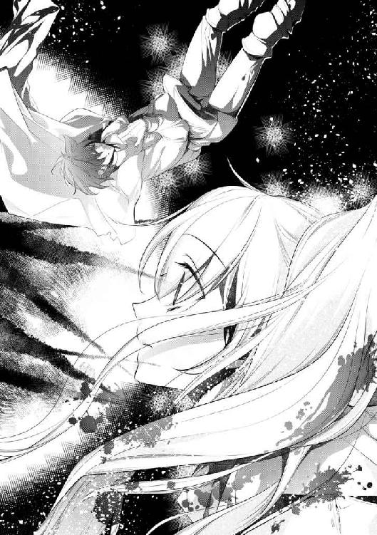
なんで、どうして、あんなに遠くにいたのに、なんで、あなたが。
声にならない言葉の代わりに、嗚咽と涙がボロボロと落ちていく。
これは恐怖か。絶望か。ギデオンが死んでしまう。体じゅうが痛い。息ができない。嫌だ。いやだいやだいやだいやだ！
「やだ、いかないで......おいてかないでよ......やだ、やだあ！」
幼子のように頭を振り乱しながら、冷たい体にしがみつく。ギデオンは応えない。あの声で、もう名前を呼んで貰えないのか。
『はは......あはははははッ！ 傑作だ〝役立たず〟！ それほどその女に入れ込んでいたのか！』
遠くで誰かが嗤っている。コーネリアスのものではなく、雑音交じりの酷い声だ。これが今回の犯人......だとしたら、あの靄だろうか。
何かを喋っているが、ほとんどが汚い嗤い声で聞き取れない。何がそんなに楽しいのか。リーウェには、何もわからない。
『お前は本当にいい〝素材〟だったのに。ああ、実に残念だが、ここでお別れだな』
声に殺意がにじむ。それでも体は動いてくれない。しがみつく冷たさに、ただただ涙をこぼすだけ。
『女神の使徒、君も所詮ただの小娘だったか。残念だが、ごきげんよう』
（ああ、戦わないと。立たないと。ギデオンが戦えないなら、私が......）
使徒の自分の声が遠くで聞こえる。右手に力を入れようとして、けれど柄は指から滑り落ちていく。
「......ギデオン」
リーウェの頬をまた一筋涙が伝う。こんな別れ方をするのなら、もっと甘えておけば良かった。言いたいことも聞きたいことも、まだ沢山あるのに。
擦り寄せた頭がくしゃくしゃと揺れる。ギデオンのくせも止めずにやらせておけば良かった。髪型ぐらい、どうにでもなるのに――。
「........................ん？」
リーウェの赤髪が揺れている。もう動いていないのに、くしゃくしゃと誰かに撫でられている。
〝誰か〟も、何も、ない。
「......泣き顔、凄く久々に見たな。やっぱり俺のリーウェは最高に可愛い」
「......何やってんの」
腕の中で、ギデオンが笑っていた。それはもう、体を貫通する棘などなかったかのように、幸せそうな笑顔で。
「生きてる、の？ それとも幻？」
「見ての通り。俺はお前を置いていかない。絶対に」
泣きながら叫んだ言葉を告げられて、リーウェの頬がかっと赤くなる。その姿をまた幸せそうに眺めながら、ギデオンはもう一撫で髪を揺らした。
『......何故？ 何故だ、お前、どうして......!?』
今度はあの雑音が驚愕していた。やはり発声源はコーネリアスの代わりに出た黒い靄だ。顔も形もないのに、酷く感情的に怯えている。
「何故も何もあるか。こっちは〝十六年これに馴染んで〟生きてきたんだ。ぱっと出に殺られるほど衰えてはいない」
立ち上がるギデオンが、ゴキゴキと肩を鳴らす。いつの間にか突き刺さっていた棘はかき消えて......否、ギデオンの体の中へ吸収されていく。
（......そうだ、おかしいじゃない）
その姿を呆然と見上げながら、リーウェはようやく気付く。
あの槍のような棘に貫かれていながら、ギデオンの体からは血が出ていなかった。本来なら、血の海になっていてもおかしくない傷なのに。
ぞくり、と怖気が走る。
さっきまでは悲しくて死にそうだったが、しがみついた彼は、本当にリーウェの知るギデオンなのだろうか。鳥肌が止まらない。
『嫌だ。来るな来るな！ 僕はまだ、やるべきことが......！』
リーウェの思考を遮るように、醜い悲鳴が響き渡る。
対峙するギデオンは無表情のまま、おもむろに右手を上げた。その腕に、黒い靄が続々とまとわりついていく。
「なっ!? 何してるの、ギデオン！」
「ああ、大丈夫だ。心配ない」
思わず声を上げたリーウェに笑いかけながら、ギデオンの右手は完全に靄に包まれていく。
しかし、攻撃されている様子もなく、数秒後には凝固し、爪の尖った篭手のような形に変わっていた。
（あの靄を、使いこなしてる......？）
果たしてこれは、魔術と呼んでいいものなのか。ギデオンは右手を眺め、二、三度篭手を動かした後、躊躇いなくそれを構えた。
「毎度毎度他人の〝ガワ〟に隠れやがって。屑が」
『嫌だ！ やめろ、来るな！ 僕は......!!』
見間違いでないのなら、向こうの靄はどんどん薄くなってきている。形もないのに慌てているそれが、床に転がるコーネリアスに〝戻ろうとした〟時。
先にギデオンが疾っていた。
『ガッ......ぁあ、あ......』
人では到底かなわない距離を一挙動でつめたと思えば、篭手が靄を引き裂いた。はらはらと解けゆく残滓が、軌跡のままに散っていく。
「お前の力も俺が使ってやる」
舞い散る黒い吹雪の中、ギデオンは笑っていたのだろうか。
『ああああああああああああああああああ!!』
正しく断末魔と呼ぶにふさわしい雄たけびを上げて、靄と影たちがギデオンに吸い込まれて行く。
「......っ！」
嵐のような激しい風が吹き荒れた後、立っていたのはギデオン一人。そこにあった黒い脅威は何もかもがかき消えて、会場は静まり返っていた。
「ギデ、オン......？」
リーウェの呼びかけた声が妙に大きく響く。
靄はまだうっすらと彼の体を包んでいて、振り返るその瞳は――赤い。
「あ......」
魔力の赤ではない。あのコーネリアスと同じ、血のような禍々しい赤色。
爛々と輝くその目は、〝人間の持つ力の色〟ではない。
「......なんで」
ギデオンはコーネリアスとは違った。気を失い転がる彼と違って、自意識を保ったまま、あの力を行使していた。
「............なんで、貴方が」
〝容姿は目立つはずなのに、存在を忘れてしまう〟そう言われたのは彼だった。
〝音もなく、気配もなく、世界へ入り込む〟気付いてと、女神はずっと警告していた。
〝彼の近くにいると、己の意思とは違う動きをしてしまう〟それは、コーネリアスの中に居たものと、ギデオンが使う力が『同じもの』だったから？
「私、は......」
私は『リーウェ』。セラフィニアの魔導騎士で女神セラフィナの使徒。
十六年前に生を受けたその瞬間から、一つの使命を与えられて生きている使徒。
「......どうして」
災厄の欠片が、まだこの国の誰かの中に残っている。女神が見つけられないそれを、リーウェが人の身で捜す。それこそが使命。
他でもない。使徒たるリーウェだからこそ、その力が『誰のものか』わかってしまった。
ギデオンこそが、災厄の欠片。滅びと虚ろの王アドムヴルの下僕だ。
本当はもう気付いていたのかもしれない。けれど、リーウェは認めたくなかった。彼と過ごした十年、誰よりも傍で一緒に育ったのだ。
強いリーウェを、強くあろうとするリーウェを、無理矢理にでも守ってくれたのはギデオンだ。
過保護で子供扱いで、それが嫌だったのに。思い返せば、そこには愛しささえ浮かんでくる。
（......参った、な）
静まる会場に、ギデオンのブーツの靴音が響き渡る。
一歩一歩、リーウェに近付いて来ている。
アドムヴルは主の宿敵。戦わなきゃいけない、倒さなくちゃいけない。放っておけば今回のコーネリアスのように、また事件が起こるかもしれない。
いや、今度こそ十六年前と同じ〝災厄〟が起こる可能性もある。それなのに。
「参ったわ」
今度は声に出して、それを口にする。靴音がリーウェの目の前で止まった。彼は怒っているだろうか、笑っているだろうか。
「......私、貴方がいないと、立つこともできないみたい」
見上げた世界はぼやけていて、ギデオンの顔が見えない。
（私は、使徒失格だ）
女神の力を使いこなせないばかりか、宿敵の下僕にこんなにも依存しているなんて。
まぶたを閉じれば、熱いものが頬を伝い落ちていく。さっきあんなに泣いたのに、まだ涙は枯れていなかったのか。
感傷的な気分のまま、ギデオンの声を待つ。その答えが別れでも敵対でも――。
ゴーン、ゴーン............。
次の瞬間、古ぼけた大きな鐘の音が響き渡った。
いつもの舞踏会とは違う。最終日用に特別に仕込んでおいた、王都の大時計塔の鐘の音だ。
きっかり十二回、それは最後の舞踏会の終了の合図で、第二王女メリーウェイスの十六歳の誕生日を告げる音。このふざけた催しの幕引きの音。
「............ああ、やっとだ。十年待った」
最後の鐘が鳴り終わると共に、ギデオンの口から震えた声がこぼれる。
十年、ちょうどリーウェと一緒に過ごしてきた年月だ。待ち続けたのは何の機会だろうか。ゆっくりと、目を開く。
「......うわああっ!?」
しかし、ギデオンの顔を見上げる前に、リーウェは彼の頭上に居た。
抱き上げられたのだと気付いたのは三秒後。急に高くなった視界に戸惑いつつも、見下ろす位置にあるギデオンの顔は笑っていた。
――それはもう幸せそうに。蕩けそうな甘さを浮かべて。
「えっなっ何!? どうしたのギデオン!?」
「どうしたもこうしたも、ずっとこの日を待っていたんだ。十年我慢した。ようやく、お前に伝えられる！」
顔がどんどん熱くなるリーウェなどお構いなしに、赤眼のままのギデオンがすっと髪を梳いた。リーウェの左耳のすぐ近くに、かさりと何かの音がする。
「なに、を......」
驚いてリーウェも触れてみれば、耳にかけるようにして何かがささっている。手のひらに収まるそれは、連日見続けたあの白い花の輪郭で。
「誕生日おめでとう、リーウェ。俺と結婚してくれ」
少年のような眩しい笑顔で、はっきりとその言葉が落ちた。
セラフの花は求婚の花。それは正しく、セラフィニア最上の愛の告白。
「え、ええええええ!? 結婚!? 嘘っ、なんで!? どうして!?」
「なんでも何も、お前を愛しているからだ。知ってるだろう？」
「愛!? し、知らないわよっ!?」
「それはお前だけだ」
慌てふためくリーウェを、赤くなった目が愛おしそうに見つめている。強く禍々しい邪王の色なのに、何故こんなにも幸せそうなのか。
「ああ、やっぱりお前の赤髪に、この花はよく映える」
恍惚とした声で囁きながら、ギデオンの指が頬をすべる。いつもは髪をぐしゃぐしゃにする手が、壊れ物を扱うように触れてきて。
「......んっ」
混乱したままのリーウェの口唇は、あっさりとふさがれてしまった。
力いっぱい閉じたまぶたを笑いながら、啄むように少しずつ触れられる。リーウェはその感触に震えながら、恐る恐るギデオンの首へ腕をまわす。
宿敵、アドムヴルの欠片......考えなきゃいけないことが熱に溶けていく。
嘘も偽りもなく、彼はやっぱりギデオンなのだから仕方ない。十年ずっと一緒だった、リーウェだけの騎士。
「愛してる、リーウェ。俺の......」
砂糖菓子よりずっと甘い声が、耳をかすめる。震える肩を気付かれないように、もう少しギデオンに擦り寄れば――。
「何やってんだ君たちは――ッッ!!」
聞き慣れた怒声が、会場に響き渡った。......やはり自分たちに真面目は似合わないのかもしれない。
声の主を見れば、扉を両手で開けたまま真っ赤になったハワードがそこにいた。後ろにはニヤ笑いを浮かべるイーノスや、困惑気味な他の騎士たちも。
「あ、そっか。コーネリアス様の靄を倒したから、開いてたのね扉」
「チッ、邪魔しやがって」
驚くリーウェを気にもせず、ギデオンは隠すように抱きすくめる。ちなみに、一部始終を見ていた結界の中の人々は、ずっとぽかーんとしていたらしい。解放のために駆けつけた騎士たちが、少し同情していた。
「今そんなことしてる場合じゃないよな!? わかってるか二人とも!?」
「俺は一世一代の告白中だ。ハワード、後にしてくれ」
「君が後にしろや!!」
ぎゃあぎゃあと響くいつも通りの彼らの声を背景曲にしながら、暗い世界に少しずつ光が点っていく。
「あーもう......ほんと、つかれた」
抱かれたままのリーウェは、筋肉質な腕にもたれかかりながら、目を閉じる。
長かった最後の舞踏会が、やっと終わった。
舞踏会は終わったが、その後が楽だったかと言えば全くそんなことはなかった。
操られていた者がとにかく多く、中には身分が高い者も含まれていたので、意識があった組は状況説明と事情聴取にてんやわんや。
同時進行で、城内の片付けや浄化作業もある。幸いにも、靄を倒した後すぐに結界の出入りができるようになったので、組合の者や神官たちが駆けつけてくれ、こちらは何とか人手が足りた。
......反面、城門で立ち往生をくらった貴族たちからの抗議も凄かったので、これはまた後日、改めて対処をしなければならないだろう。
本来外敵を阻むための結界が今回『檻』の役目を果たしたのは、結界内にこそ宿敵がまぎれていたからだと、後に相談した神官が言っていた。
中に閉じ込められた者には災難だったが、一人の死者も出すことなく事件が片付いたのは、本当に僥倖だった。
今回の〝犯人〟となるコーネリアスは、まだ目を覚ましておらず、ひとまずは客間で寝かせている。もちろん監視として騎士・魔術師が数人ついた軟禁状態だ。
彼の従者たちもまた、かなり早い段階から操られた状態だったらしく、全員がここに来るまでの記憶をほぼ持っていなかった。ただ、あの魔獣の生成の証拠と、爆発事件のブレスレットが所持品から出てしまったので、共犯者という扱いになるだろう。
彼らの処遇はコーネリアスの意識が戻った後、バスカヴィル王国側と話し合いになると思われる。元は善良な者ばかりなので、心が痛むところだ。
そして、全身傷だらけだったリーウェとギデオンは、それぞれに治療を受けた上で自室待機を命じられた。朝からほとんど飲まず食わずで戦っていたこともあり、体も限界だったのだろう。状況は気になるもののまぶたは重く、いつの間にかリーウェはベッドでまどろんでいた。
「......リーウェ、起きられますか？ リーウェ？」
とんとん、と肩をつつかれる感触に目を開ける。ぼやけた視界で淡い緑色の髪が揺れた。
「イーノス......？」
「お疲れ様です。国王陛下が貴女をお呼びなのですが、起きられますか？」
イーノスに手を借りながらゆっくりと起きあがる。時刻は明け方近く、いくらか楽になった体をひねりながら、乱れていた上着を整える。変えたばかりだったのに、早速また新しいものだ。
「本当はもう少し寝かせてあげたいのですが、至急とのことですので」
「ん、大丈夫、動けるわ」
軽く肩を回した後、すっかりいつもの顔を作ったリーウェに、イーノスは苦笑しながら扉を開けて促す。廊下には同じく起こしに来たであろうハワードと、イーノスを睨むギデオンが立っていた。
「落ち着いて下さいギデオン。何もしていませんし、また怒られますよ？ まあ、鍵をかけていないのは、私もどうかと思いましたが」
「イーノス知らなかった？ 私に害意持ってると、この部屋入れないわよ。そういう結界を張ってあるもの」
「何ですかそれ初耳です詳しく」
「はいはい君たち、陛下をお待たせするつもりか？ あと一応真夜中だ、声量は控えろ」
魔術的な言葉に目を輝かせたイーノスを、ハワードがため息をつきながら回収する。その間にリーウェの隣へ移動したギデオンは、いつも通りの顔に戻っている。彼らの態度は何も変わらない。
「............」
「なんだ？」
「あ、えと、何でもない」
彼の正体を知ったのも、結婚を申し込まれたのも、ほんの数時間前の出来事だ。まだ現実味がなく、考えのまとまらないリーウェと違い、ギデオンは本当にいつも通りに見える。
（あの力も、今は感じない）
会場ではハッキリと感じた禍々しい力は、今はなりを潜めているようだ。リーウェの勘違いなら良かったが、皮肉にもその力に助けられて自分は生きているのだ。
「ほら、急ぐぞ君たち」
ハワードの呼びかけに頷いて、なるべくギデオンの方を見ないように歩き出す。何か言いたげなのは気付いていたが、見なかったふりをして。
宿舎を出れば、城の中はありえない程多くの人間が走り回り、慌ただしい声があちこちから響いていた。静まり返っていた昼とは真逆の様相に驚きつつも、活気が戻ってきたことに胸を撫で下ろす。ただ、今が真夜中だと思い出せば、非常に気の毒な話だが。
先行するハワードたちは王宮でも奥まった方へと足を進めて行く。てっきり謁見の間へ行くと思っていたが、次第に人気がなくなっていき、辿りついたのは最奥、王族の居住区画だ。
「オレたちはここまでだ。あとは君たち二人だけで行ってくれ」
王宮内でも段違いに華やかな内装に感心していれば、警備の騎士と挨拶を交わしながら、ハワードとイーノスが離れていく。
「え？ まさか、案内のためだけに来てくれたの？」
「今の君たちを二人だけにしたら、ちゃんと辿りつくかわからないだろう？ じゃあな。何かあったら、またブローチで連絡をくれ」
驚くリーウェに笑いかけながら、本当に二人は去って行ってしまう。残されたリーウェとギデオンは顔を見合わせた後、一つため息をこぼしてから、豪奢な王の私室へと足を踏み入れた。
「メリーウェイス!!」
リーウェも顔馴染みの近衛騎士に案内された部屋の中には、国王夫妻と王太子夫妻の両方が揃っていた。入るなり駆け寄ってきたのは王妃だ。今は一人の母としての顔で、驚くリーウェを抱き締めている。
「無事で良かった......っ！」
「えっと、あの、お久しぶりです、王妃様......」
涙を浮かべて喜ぶ王妃に、リーウェが返すのはぎこちない愛想笑いだ。この温度差が、これまでの生活を物語っている。反応に困っているリーウェを微笑ましく眺めていれば、
「......ッ!?」
突然、ギデオンに向かって刃が煌めく。リーウェの実兄である王太子が、護身用の短剣をまっすぐ突きつけていた。
「殿下、何をなさるのですか！」
すぐさま王妃の腕をほどいて、リーウェが刃を制する。その行動にリーウェ以外の全員が目を見開いたが、本人は当たり前のように立ち、金眼は王太子の方を睨んでいる。
二秒ほど待って、微笑んだギデオンがリーウェの肩を引き寄せた。眉を顰める王太子に、続けて挑発的に問いかける。
「俺のことは、どこまでご存じですか？」
「まだ何も。だが、今回の事件に深く関わる『黒い力』を、お前が使いこなしていたという報告を受けている」
恐らくは、会場の結界内にいた誰かだろう。詳しくはわからないだろうが、それでもギデオンがあの靄を使ったことぐらいは見えたはずだ。
「そうですか、わかりました」
視線を巡らせれば、部屋の壁際にはそれぞれの護衛の騎士が立っており、その手は皆柄にかかっている。険悪な様子にリーウェも身構えれば、ギデオンはまた嬉しそうに笑って、細い肩を撫でた。
「ギデオン......」
一同に敵視されているのは、当然リーウェでなくギデオンだ。笑ってる場合じゃないと仰ぎ見れば――その目は禍々しい赤色に染まっている。
「隠しても仕方ない。俺がリーウェの捜していた『邪王の下僕』ですよ。全てお話ししましょう。処遇はそれからどうぞ」
「......ッ!!」
ニヤリと弧を描いた口元を見て、王太子が後ずさる。それを気にするでもなくギデオンは目を閉じ、静かに話し始めた。
「......十六年前の災厄の中、初めにアドムヴルに魅入られたのは、俺の父でした」
耳にしたくない名前に王族側は一瞬眉を顰めるが、その後に続いた言葉に、目を見開いた。これはリーウェも同じ反応をしてしまった。
ギデオンの父親たる侯爵は非常に温厚な人物で、国王も信頼している臣下の一人だ。その彼が宿敵を迎え入れた人間ということに、衝撃を隠せない。
「王位簒奪までは考えていなかったようですが、あわよくば、でしょうか。災厄の影響で疲弊していたところを、付け込まれたのでしょう。今はそんなことはありませんのでご心配なく」
ギデオンもそうした反応をされることを見越していたのだろう。少しだけ眉を下げた後に、安心させるように頷いて続ける。
「しかし、父は欠片に耐えうる器ではなく、代わりに下僕に選ばれたのが俺でした。これでも元は金色とまではいかないものの、鮮やかな輝きを宿していたのですよ」
口調こそ淡々としているが、ほんの少しだけ寂しそうに視線が揺れる。今はあの赤色をしているが、リーウェの知るギデオンの目は黒かった。
......そしてそれは、操られていた者たちにも見えた特徴だ。あのコーネリアスの従者の目も、同じように黒く変えられていた。リーウェが好きだった目が宿敵の色だと言うなら、何とも複雑な心境だ。
「リーウェは知っているかもしれないが、アドムヴルは虚無の王、実体を持たない存在だ。もちろん欠片も同様で、〝それ〟として見つけることは難しい。中に入られた俺自身、どこに入っているのかよくわかっていない」
「我が君は『心』だと言っていたわ」
「それもかなり曖昧だろう？ 心と言って心臓を指す者もいれば脳を指す者もいる。確定事項は『俺の中に入っている』ということだけだ。今回のように、靄として視認できるなら楽なんだが」
おもむろに手を握ったり開いたりしながら、軽く息をはく。禍々しい色を宿しているのに、ギデオンの様子はやはりどこか辛そうにも見える。
動かしている手にリーウェが自分の手を添えれば、少し驚いた後に「有難う」と柔らかく微笑んだ。
「誤解のないように言っておきますが、俺は器にされてから十六年、一度たりとも『邪王の下僕』として力を使ったことはありません。それは、あの災厄以降何も起こっていないことが証明しています」
「それは、確かに......」
ギデオンの言葉に、やや不満を表しながらも王太子は頷く。実際あの災厄以降、セラフィニアで邪王絡みの事件は起こっていない。その背景ゆえに、メリーウェイス王女は女神の寵児と呼ばれているのだから。
「今回の犯人......コーネリアス殿下がここへ来たのも、そんな俺の監視を兼ねていたのかもしれません。最も女神に近い国に忍ばせてある下僕が、全く動かなかったから」
「彼は......」
上がった賓客の名前に、王族側の肩がはねた。セラフィニアは豊かな国ではあるが、軍事力がある国とは到底言いがたい。大国バスカヴィルとの関係を崩すわけにはいかない。
それを理解してか知らずか、ギデオンは苦笑を浮かべながら、また爆弾を落とした。
「恐らく、バスカヴィルにもアドムヴルの手の者がいるのでしょう。俺と同じかどうかはわかりませんが、少なくともコーネリアス殿下はただ探りに来た『目』です」
「は!? 待ってよギデオン、我が君の宿敵がそんなに沢山いるの!?」
「俺とて所詮欠片が入っているだけだ。やろうと思えば、他にもいくらでも作れるだろう」
ぞっとする話だ。操られていただけのコーネリアスですら、今回の事件を引き起こせたというのに。ギデオンのような強い者が他にもいるとしたら。
「......私は、勝てるのかしら」
「戦うと決まった訳じゃないし、バスカヴィルのそれも連続で攻めるようなことはしないだろう。何より、お前には俺がついている」
不安げに腕を抱いたリーウェを、今度はギデオンが慰めるように撫でる。途端に向かいの王太子が咳払いをしたので、すぐにその手は離されたが。
「彼については、もう何の心配もいりません。中にあった力は俺が根こそぎ貰いましたし、彼は本当にただの被害者です。今後のことを考えれば、気の毒としか言いようがない」
これまでコーネリアスに向けたものよりいくらか柔らかい声でギデオンが続けると、王族側は皆ホッとした表情で息をはいた。バスカヴィルとの話し合い次第になるが、『人間以外のもの』が原因であれば、国同士の交流にヒビが入るような事態は避けられるだろう。
「ねえギデオン、コーネリアス様もずっと操られていたのなら、本当の彼はどこにもいなかったのかしら？」
「いや、最後の舞踏会以外で表に出ていたのは、本物の王子の人格だぞ」
ふと疑問を投げかけると、ギデオンはどことなく不愉快そうな顔でリーウェに向き合った。従者たちは完全に操られていたが、コーネリアスはいくつかの行動を制御されていただけで、喋っていたのは『本人』らしい。
「もしかして、ギデオンは最初からコーネリアス様に邪王の力が入ってるって気付いていたの？」
「もちろん。気を付けろと言っただろう？ 深度が読めなかったから様子を見ていたが、操られていただけだったな。女神の気を感じてお前に近付いたのだろうが、本人が口にしたことはあれの意思だ。忌々しい」
舌打ちでしめられた言葉に笑ってしまったが、つまりリーウェに一目惚れしたと言っていたことも『コーネリアス本人』の言葉なのだろう。本当に想いを寄せてくれていたことに、少しだけ胸が温かくなる。
「最後に出てきた靄も、女神の使徒が仕える『とてつもない第二王女』を想像していたのだろうが......それを求めていたのは、アドムヴルなのかあの王子なのか」
ぽつりと呟いて静かに首をふる。「これで全部です」と王族たちに向ける表情は真剣で、目だけが禍々しく光っていた。
「......話してくれて有難う。一つ尋ねたいのだが、構わないか？」
ギデオンの話を聞いて、最初に口を開いたのは、今まで黙っていた国王だった。頷いて返すギデオンに、王ではなく父親としての顔で尋ねる。
「今回の事件についてはわかった。だが、お前はどうなのだ、邪王の下僕よ。我が娘にお前をつけた私の判断は、間違っていたのだろうか」
「っ、陛下！」
実年齢よりはるかに若く見える容貌とは逆に、低い声には貫禄がにじんでいる。ギデオンを責めるような言葉にリーウェは慌てたが、言われたギデオン本人は穏やかに笑っていた。
「俺は初めてリーウェに会った時、殺そうと思っていましたよ」
「......え？」
表情から思いつかない言葉にリーウェの方が固まった。初めてとは、あの迷い込んで来た十年前の日のことだ。模造剣を打ち合い、楽しく交流した思い出だったはずだが。
「あの頃の俺は、ずっと死にたかった。望んでもいない邪王の力を突っ込まれて、気を抜けばすぐに自分ではなくなりそうになる。狂いそうだった。苛立ちは破壊衝動に変わり、騎士になりたかったのも、とにかく壊して、殺したかったから」
淡々と続けられるのは、リーウェの知らない思い。王族たちの目は剣呑になり、近衛騎士たちはいつでも抜けるよう身構え始めている。
「......でも、リーウェの傍に居て、生きたいと思うようになった。いや違うな、リーウェの傍にいられるのは俺だけだと気付いたんだ」
ふ、と。また蕩けるような笑みを浮かべて、リーウェの髪を一房梳いた。普段とは違うとても優しい手つきで。
「殺したかったのに、俺より強かったからな、お前。それをどうやったのかと思えば、一日ずっと勉強鍛錬勉強鍛錬。休憩時間も祈りと奉仕活動にあてる馬鹿を、放っておけるか？」
「わ、私は使徒だから当然よ！ むしろまだ足りないぐらいだわ」
「やりすぎだ、この大馬鹿。他のヤツらでは、使徒のお前を止めるには荷が重い。お前を止めて守れるのは、同じ人間を超えるモノ――邪王の力を突っ込まれた俺だけだ。だから俺はお前より強くなったし、この力も制御した。十六年無事故だ、褒めろ」
「............」
自慢げに胸を張るギデオンに、リーウェも他もぽかんと口をあけて黙ってしまった。それは、つまり、そういうことなのか。
「貴方、邪王の力を、私のために受け入れたの？」
ギデオンより強かったとは言うが、そんなもの力を暴走させれば当然殺せただろう。むしろ、邪王側はそれを強く望むはずだ。宿敵たる女神の使徒など、早く殺すに限る。それなのに。
「他に何の理由がある？」
さも当然と。むしろ聞く意味がわからないと。宿敵の下僕は、愛おしそうに笑った。途端にせりあがってくる熱で、リーウェの白い肌が耳まで真っ赤に染まっていく。
「頑張りすぎで、危なっかしくて、自分より他人のことばかり考えてる大馬鹿を、俺はずっと見てきた。お前を、心から愛している。お前がお前を大事にしないから、俺がお前を大事にする。この身、この命、全てをかけて」
「ま、待って......ちょっと待ってギデオン！ は、恥ずかしくて死んじゃうから！」
悲鳴のようなリーウェの懇願に、ギデオンは笑みを深くするばかり。女性二人はあらあらと微笑ましげに眺め、父と兄は驚きと怒りで鬼のような形相へと変わっていく。壁際の近衛騎士たちは構えた手の行き場を失い、傍観を貫くことにしたようだ。
「お、お前たち、いつからそんな仲だった!? 私は認めないぞ！ 宿敵の下僕が大事な妹に手を出すなど！」
「まだ返事は貰っていません、お義兄様」
「誰が義兄だ!!」
絶世の美貌を歪ませて怒鳴る王太子に、ギデオンは涼しい顔で冗談を返している。そう言えば、始まりの日に喧嘩をしていたのもこの二人だったなと、熱の下がらない頬を押さえながらリーウェは俯く。ギデオンの声が聞える度に、心臓が震える。こんなはずじゃなかったのに。
「......わかりました。では、セラフィニアらしく、女神セラフィナに聞いてみましょう」
「はあ!?」
言うが早いか、リーウェの手を掴んだギデオンは、問答無用でテラスの方へと引っ張っていく。
真っ黒だった空には少しずつ紫が混じり始めて、早朝独特の冷たい空気が心地よい。
「我らが偉大なる母、女神セラフィナよ！ 貴女の娘を妻として貰い受けたい！」
「ちょ、ちょっとギデオン!?」
そんな夜明け前の空へ、ハッキリとしたギデオンの声が響いていく。幸い、片付けが続いているおかげで人を集めるようなことはなかったが、それでも何ごとかと聞きつけてくる者がちらほら見える。
「俺はこの身、この命の全てをかけて、彼女を生涯愛することを、貴女の名の下に誓おう！ 必ず幸せにすることを誓おう！ どうか、この願いを聞き届けて頂きたい!!」
「やめてってばギデオン！ ここで叫んでも我が君には届かないから！」
「ま、そりゃそうだな」
半分涙目になりながら外套を引っ張るリーウェに、けろっとした軽い様子でギデオンが笑いかける。
「使徒のお前ならともかく、アドムヴルの力を持つ俺の声に、女神が応える訳がないな」
「わかってるなら止めてよ、恥ずかしい!!」
一体何の嫌がらせだ。恥ずかしさのままに拳を振りぬくが、ギデオンに届く前に彼の大きな手によって止められてしまった。
「............お前は？」
「......ッ！」
突然低くなった囁きに、また心臓が暴れ出す。
「お前はどうだ、リーウェ。返事を、まだ聞いていない」
ほんの一瞬前までふざけていたのに、真剣な顔になったギデオンが、まっすぐリーウェを見つめている。鋭い目は血のように赤く、禍々しいのに美しい。
ギデオンの伸ばした手が髪に触れると、かさ、と髪ではない音がする。
「あ......」
舞踏会で差し込まれたセラフの花を、ずっとつけていたようだ。仮眠をしていた間も外さなかった自分に少し驚いた。
枯れないように細工された、求婚の花。主たるセラフィナの冠とお揃いの花。
（これを引き抜いて返せば、ギデオンの求婚を断ることになる）
むしろそれが、使徒として正しい対応だ。リーウェも手をそえてみれば、花は本当に小さく、少しでも動かせば簡単に落ちるだろう。
「............」
ギデオンは、もう何も言わない。ただ真剣な表情で、リーウェの返事を待っている。慌てることもなく、悲しむ素振りも見せず、花を引き抜こうとするリーウェの手をじっと見ている。
これで終わり。また、『いつも通り』に戻れる。
「........................無理、だってば」
空気にかき消えるような声で、呟く。
気付いてしまったのだから仕方ない。自分は、彼が隣にいてくれないと、立つこともできなかったのだ。
（存分に頭撫でるといいわよ。髪の毛めっちゃくちゃにするといいわよ。思いっきり子供扱いして、過保護に守りぬいて）
............叶うなら、時折こうやって、女の子として扱ってくれると嬉しい。
「............リーウェ」
ギデオンの声に驚きが混じる。リーウェの細い手が、ギデオンの手を〝両手で〟掴んでいた。小刻みに震えているそれは、『了承』を意味する返しだ。
その髪と同じように、露出した体の全部が赤く染まっていた。
「......ああ、くそっ！ 幸せすぎて死にそうだ......!!」
衣擦れの音がしたと思えば、リーウェの体はすっぽりと抱き締められていた。響いてくる鼓動は、どちらも張り裂けそうなほど速くて、触れた部分は全部熱い。
「リーウェ。リーウェ！ 夢じゃないよな!? 俺を、選んでくれるんだな!?」
「......選ぶも何も、最初から選択肢がないわよ。私には貴方しかいなかったじゃない」
「ははっ、そうか......死ななくて良かった。ここまで生き延びて良かった。やっと......やっと、願いが叶った」
リーウェの頭上から響いてくる声は吐息が多く、もしかしたら泣いているのかもしれない。強く抱く腕も震えていて、緊張していたのは自分だけではなかったと気付く。
『いつも通り』を崩さなかったギデオンは、ずっと色んなものを隠しながら、リーウェを守り続けてきてくれた。
使徒失格の選択はどこか誇らしく、自分を抱く彼がとても愛おしい。
「......セラフィナ様に怒られるかしら」
「そうなったら俺も一緒に怒られてやる。世界でも邪王でも、創造の女神でも敵に回して戦ってやる。リーウェは俺が必ず守る」
「はは、なんか魔王みたいなこと言ってる。守らなくてもいいわよ。一緒に戦うから、これからも傍に居てよ」
「当たり前だ」
腕をゆるめて顔を見合わせれば、ギデオンも耳まで真っ赤に染まっていた。珍しいものを見たと笑う前に、二つの口唇が重なり合う。会場で触れた啄むようなものではなく、溶けるような深いキスを。
「............あつい」
体も心も、全部が熱い。触れた先から燃えてしまいそうなのに、もう離れられない。
――ギデオンが好きだ。
「......ッ!?」
唐突に、二人の視界が光に包まれる。
――否、黒い夜空を引き裂いて、地平線が燃えていた。
「夜明け......？」
どちらともなく呟く。長い夜がやっと終わるのだ。炎のような鮮やかな赤と橙が、女神の国を染めていく。
「お前の髪の色だな」
「......覚えて、たの？」
「もちろん」
甘く囁くギデオンの声に、リーウェの頬を一筋涙が伝った。
「お前の方が、ずっときれいだけどな」
その涙を掬う手に擦り寄る。かつて彼がそう言ってくれたからこそ、リーウェは己の髪色を心から憎まずにここまでこれたのだ。
コーネリアスには申し訳ないが、この喜びだけは譲れなかった。
つま先で立ったリーウェがまた口唇を重ねれば、嬉しそうに応えてくれる。感謝と愛情とその他の色んな感情を、全部吐息に込めて。
「..................まさか成人したその日のうちに、娘を男に取られるなんて」
睦み合う二人の背後で、威厳のいの字もなくなった国王が、がくりと肩を落とした。その隣では、穏やかに目を細めながら王妃が微笑んでいる。
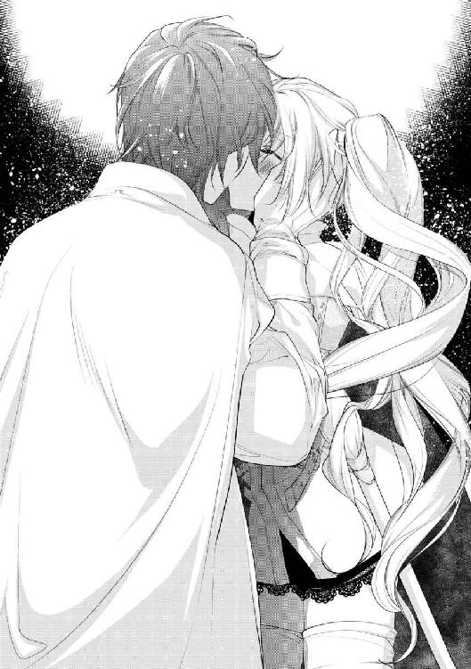
「仕方ありませんわ。だって見て下さいな、この美しい空を」
『まるで、女神が祝福しているようだ』と。
誰ともなく呟いた声は、明けゆく眩しい空へ溶けていった。
＊ ＊ ＊
目を覚ましたコーネリアスが最初に思ったのは、とても大きな『喪失感』だった。
ゆらりと波うつ真紅の天蓋を眺めながら、果たして自分は何を失ったのか、思考を巡らせる。
触る限り五体満足であり、怪我もない。今もこうして温かいベッドに寝ていられるのなら、立場を失った訳でもなさそうだ。では何を失ったのだろう。
思考はまとまらず、自分を心配してくれる従者や、騎士と思しき者が何かを質問していたが、どの声も上滑りしていき何も心に残ってはくれない。
世話をされるがままぼんやりと過ごしていれば、その報せはすぐに届いた。『速やかに帰国せよ』と。
「酷い顔だな、コーネリアス殿下」
馬車の準備を待つ間、コーネリアスの前にふらりと現れたのは、舞踏会で何かとぶつかったあの黒い騎士だった。装いこそ白いのに、何故か『黒い』と感じてしまう理由はわからない。
けれど、彼とコーネリアスは馬が合わず、口論のようなやりとりばかりしていた気がする。
「こんにちは、魔導騎士殿。僕に何かご用ですか？」
「用というほどでもないが、事情説明と最後の挨拶だ。どうせろくに話を聞いていなかったのだろう？」
猛禽類のような鋭い目を細めて、騎士はニヤリと笑う。先日はちゃんとした口調で話していたはずだが、今日の彼にコーネリアスを敬う気持ちはないようだ。
傍付きの従者が睨みつけるが、それを片手で制して話を促す。態度が気にならないと言えば嘘になるが、ろくに話を聞いていなかったのは事実なのだ。
......恐らく、この騎士の声であれば、自分はきちんと聞ける確証もあった。
「楽しい話ではないぞ。気を強く持つことだ」
話を聞く姿勢をとれば、騎士は先ほどの嘲笑から一転して、真剣な顔を作る。そして、淡々とした口調で静かに話し始めた。
コーネリアスが『滅びと虚ろの王』の手の者によって、いいように使われてしまった事実を。
「..................なるほど。確かに楽しい話ではありませんが、残念ながら身に覚えがあります。夢でなければ、ですが」
薄暗い会場で、この騎士とリーウェを相手に嗤っていた光景を知っている。その他にも、客間階を去って行く二人を見ていた記憶も、燃え盛る後宮を眺めていた記憶もある。
どれもコーネリアスではなく、けれど『自分』が動いていた記憶だ。
「やはり見えていたか」
「ええ、自分がやったとは思えませんが、視界が僕のものである以上、貴方の言う通りなのでしょう」
そしてそれこそが、コーネリアスが感じていた『失ったもの』に他ならない。
本当に楽しくない話に、深く息を吐いて俯く。よくもまあ、これだけのことをやった人間を、咎めるでもなく帰すものだ。女神の国の人間は、余程心が広いらしい。
「............まだ何か？」
そんなコーネリアスを眺める騎士は、話し終わった後もまだそこにいた。心配するでも同情するでもなく、ただコーネリアスを眺めている。
「いや、少し気になったのだが......殿下、あちらでの待遇がよくないのか？」
「..................何故？」
突然の質問に、つい返答が遅くなってしまった。この間から、気付かれただろうか。
「最後の舞踏会のお前を見たら、何となくな」
感情を向けられないというのも、不思議なものだ。ただ事実を確認した騎士は、追及するでもなく一つ頷き、また黙ってコーネリアスを見ている。
......その無関心な姿勢に、「話してもいいか」と思ってしまうのは、多分コーネリアスだけではないだろう。
「......バスカヴィルは海の国です。その王子であるのに、僕は白すぎると思いませんか？」
「日焼けをしていないということか？ そういう体質だと思っていたが」
唐突な質問にも、彼は無表情のまま答えた。わざわざ聞くということは、『違う』ともちろん気付いただろう。まだ重たい頭を押さえながら、コーネリアスは自嘲気味に笑った。
「僕の母は側室なのですが、家がそれほど強くなく。まあ、僕もそういう扱いです。幸いこんな顔なので、夜会など貴族の汚い世界には向いていますが、日のあたる公の場には、あまり」
「なるほどな」
大方予想通りだっただろうか。騎士はまた一つ頷いてから「リーウェが騙されなくて良かった」などと呟いている。コーネリアスからすれば、むしろ非常に悔しいことなのだが。
「お前あれだろう。第二王女を手に入れられたら、のような条件を出されてきたのではないか？」
「何故？」
「『赤眼のお前』が王女に執着していたからな」
遠慮のない質問に、コーネリアスは口唇を噛む。夜会慣れした自分を遣わせるのなら、理由はわかりやすいだろう。
しかし『赤眼のお前』とはおかしなことを言う。邪王の力であって、それはコーネリアスではないのに......。
（いや、そうなのか）
セラフィニアの国民でありながら、騎士がそう呼んだ声には疎むような様子はなかった。操られていた時のコーネリアスでさえ『人』として認識してくれているのか。あるいは、赤眼になっていたらしい自分が、そういう行動をしていたのか。
「お前がリーウェにばかりかまけていたから、赤眼の時は第二王女を追ったのだろう。騒動を起こしたのも、王女をあぶり出すためというならわかる」
「ああ......」
言われてみれば、コーネリアスは身にとても覚えがあった。初々しい反応を見せる愛らしい少女に、つい立場を忘れてしまったのは確かだ。赤眼の自分は、心の内の焦りを感じ取ってくれたのかもしれない。
騒動を起こしたのも、まぎれ込んでいる人物が王族ならば、必ず特別な護衛がついていると見ての動きなのだろう。決して擁護はできないが、納得はできる。
（だから僕は、失ったと感じていたのか）
〝操られていた〟人間からすれば、それは有り得ない感覚だ。かの邪王の力をコーネリアスは疎んでいなかった。そういうことなのだろう。
もやもやしていた気分がようやく晴れたようだ。深く呼吸をしてから、騎士に向き直るコーネリアスの顔は、少しだけ元の彼らしいものに戻っていた。
「理由をつけたところで、僕が皆に迷惑をかけたことは事実。全てを教えてくれて有難う、騎士殿。包み隠さず伝えた上で、バスカヴィルは必ず誠実な対応をすることを約束します」
「ああ、有難いな。だが、お前も気に病まないことだ。あくまでお前は操られていた立場、被害者の一人だ。内に潜むものが多少見えたかもしれないが、非を感じる必要はない」
「......そう言って頂けると、少し楽になります」
おもむろに差し出された手を、少し迷ってから握り返す。期間中はつい喧嘩腰になってしまったが、もし別の形で会えたなら、この騎士とは友人になれたかもしれない。
そんな〝もしも〟に苦笑をしていれば、傍付きとは違う従者がやって来る。馬車の準備が整ったようだ。
「それでは、魔導騎士殿。リーウェさんによろしくお伝え下さい」
「ああ」
軽く会釈をしてから、先導してくれる従者に続く。荷物はすでに運び終わっているようだ。馬車の後は船に乗り、自国までの長い海路になる。
長いようで短かった五日間。確かに変わった何かを胸に抱きながら、コーネリアスは城を去って行く――その背に、とんでもない言葉が飛んできた。
「リーウェが、そうだぞ」
「......は？」
あの愛らしい少女の名前が出て、コーネリアスが少しだけ振り返る。
三日月のように口元を歪ませた騎士は、はっきりと答えた。
「第二王女の正体だ。リーウェがメリーウェイス王女だ。ずっと会場に居ただろう？」
「は............はあああああああッ!?」
王子らしからぬ間抜けな声に、従者たちも驚いて声を上げ、黒の騎士はケラケラと嗤いながら「ざまあみろ」と言わんばかりに胸を張った。
リーウェにセラフの花を使おうとした時、止めたのは確かにこの騎士だった。つまり、騎士が邪魔しなければ、コーネリアスは正解を見つけていたことになる。
「貴様......ふざけるなよ、よくも!!」
「はははは！ 俺が恋敵に優しいとでも思ったか？ じゃあな、王子様！」
「絶対に許さないからな！ 覚えていろ、この悪魔!!」
美しい顔を怒りで歪めるコーネリアスを、従者たちが何とかなだめながら馬車へと引き摺って行く。
「悪魔？ はっ、滅ぼされなかっただけ有難く思え、王子様よ」
見送る黒の騎士――ギデオンの双眸は、禍々しい赤色に輝いていた。
＊ ＊ ＊
その日セラフィニアの王都は、いつも以上に活気に溢れていた。
第二王女メリーウェイス殿下の十六歳の誕生日から一日過ぎ。今日はいよいよ、王女の初顔見せを含めた誕生祝いパレードが行われる。
本来ならば誕生日の当日に予定されていたが、予期せぬ騒動によって王城が大混乱になったことは、国民たちにも概要だけ知られている。
あわや取り止めとなることも危惧されていたパレードだが、こうして一日だけ遅れる形で、無事に開催が決まったのだ。沿道には早朝から人が溢れ、今か今かと王女の到着を待っている。
「おい、来たぞ！」
せっかちな誰かの声に続くように、城門の方向から吹奏楽の演奏が響き渡る。
四頭立ての豪奢な馬車が何台も続き、割れんばかりの歓声と共に空に花吹雪が舞い踊る。
ああ、いよいよだ。いよいよ、秘匿された第二王女の姿が見られる。男はもちろん、女も子供も老人も。皆一様に王女の乗った真っ白な馬車を見つめる。
セラフの花で全面を彩るそれは、正に女神の寵児と呼ばれるメリーウェイス王女にふさわしい華やかさと神聖さを兼ねた佇まいで。馬車と並走するのは、同じく白い騎士制服をまとう特別な部隊・魔導騎士だ。
「あれが......王女様......！」
期待に満ちた声に応えるように、真っ白な馬車が人々の前に到着する。
上に立つ王女もまた、女神セラフィナに倣うように真っ白なドレスに身を包み、髪にはセラフの花冠をかぶっている。
その髪は――燃えるような赤。
「............え？」
先頭で見ていた誰かが、声をこぼした。美しく結い上げられているが、その髪色は紛うことなき赤。そして、薄く化粧を施した愛らしい顔立ちで輝くのは、黄金の瞳。
現在このセラフィニアで、赤髪金眼は一人しかいない。
「リ、リーウェちゃん!?」
「はーい！」
顔馴染みの上げた驚きの声に、馬車の上から第二王女ことリーウェが、楽しそうに手をふって応える。彼らの知る魔導騎士のリーウェと同じ笑顔で。
「いやしかし、本当にきれいですよリーウェ。白がよく似合いますね」
「有難うイーノス。笑顔崩したくないから、あんまり言わないでね」
リーウェの乗る馬車と並走するイーノスが、楽しそうに笑っている。反対側を守るのは、もちろんハワードだ。
慣れない服、慣れない立場に震えながら、それでもリーウェは笑顔のまま手をふり続ける。それが今日の、第二王女に戻ったリーウェの任務なのだから。
騒動の後、リーウェの正体を明かすことについては、本当に賛否両論であった。賛成する者も反対する者もちゃんと理由があり、リーウェとしてもできれば騎士のままで生活したいのが本音であったのだが......。
「成人を迎えたことで、ますますリーウェの女神の力が増している。今回の騒動のように、〝第二王女〟を狙う輩が現れるかもしれない」
そう呟いたギデオンの一言が、決定打になってしまった。今回のふざけた開催方法も最悪であったが、リーウェが王女だと知れていれば、少なくとも舞踏会会場を巻き込むことはなかったのだ。
他人を巻き込むぐらいならば、自分一人を狙われた方がマシだ。そう決意したリーウェの承諾をもって、第二王女の正体解禁は決定した。当然だが、リーウェを軍事的に利用しようとする者が現れる場合は、ギデオンが全力で排除することも許可されている。
成人したことで正当な発言権利も得ているし、今後は魔導騎士と兼任して公務にあたっていくことになるだろう。
（それにしても、女神の力が上手く使えなかったのは、強すぎたからだなんて......）
度々戦場で不発に終わってしまった力は、足りないのではなく強すぎたのだ。今後は鍛えるのでなく、使いこなす方向で訓練をしていこうとギデオンが約束してくれている。
今までとはまた違う日々になりそうだが、彼が共にいてくれるのなら、それは変わらず楽しく慌ただしい日々になるだろう。
「お祝い有難う！」
驚愕と祝福が一対になった言葉を受け取りながら、リーウェは人々に笑顔で応え続ける。両手を広げて空を仰げば、七色の光の雨と共に降り注ぐ白い花吹雪。
「セラフの花が......！」
原因がわかったことで、ほんの少しだけ使えるようになった女神の力。それは人々を祝福する奇跡の力だ。
光をまとう花びらが沿道の人々に降り注ぎ、ますます歓声が大きくなる。神秘的でありながら、親しみやすいリーウェの笑顔。それは正しく、『女神の使徒』として相応しい姿だろう。
「......俺の嫁のこんな可愛い姿を晒すなど、ああ腹立たしい」
そんな華やかな光景の中、すぐ隣から聞こえてきた怨嗟のような声に、思わず眉間に皺がよってしまった。
「貴方準備中から散々見てたじゃない。それに、まだ嫁じゃないわよ」
振り返るまでもなく、ぴったりとリーウェにくっつくギデオンは、鋭い目をますますキツく細めながら、手をふる民衆――特に男を睨みつけている。
平時のものより装飾の増した騎士制服は、元々整ったギデオンの容姿をますます引き立て、黙っていれば彼こそが王子として立ってもいいくらい格好良い。
しかし、本人は何も変わらない......否、ますます過保護なくっつき虫になっているのだから、宝の持ち腐れもいいところだ。
ギデオンとの関係は、結局現状維持の近衛として魔導騎士部隊に在籍すること。そして、〝一応〟婚約者ということになっている。一応、だ。
女神の国セラフィニア王家としては、やはり宿敵の下僕をすぐに迎え入れることはできなかったのだろう。今後もう少し様子を見た上で、結婚できるかどうかが決まるらしい。
しかし、こうしてパレードで同じ席についているのだから、公表しているも同然だろう。リーウェとしてはそれで満足だったのだが、ギデオンは少し不服そうだ。
「これでリーウェへの求婚者がますます増えたら、俺は正気でいられるだろうか」
「今日の顔見せでむしろ減ると思うわ。ほら、ギデオン。笑えとは言わないから、ちゃんと立って」
隣の図体だけでかい困った男を気遣いながらも、リーウェは手をふるのを止めたりはしない。『任務』と言われれば必ずこなす。その姿勢は、騎士でも王女でも変えるつもりはない。
「............」
おもむろに、ギデオンの手が花冠の下へ伸びた。冠とは別に、耳にかけてある一輪のセラフの花。それはギデオンがリーウェへの告白に使った、あの加工された花だ。今もなお枯れることなく、リーウェの赤髪を彩っている。
「リーウェ、一つ教えてやる」
「ん、何よ？」
さらりと耳元を撫でる感触に、少しだけくすぐったそうにしながら、リーウェが視線を向ける。「今日は髪崩さないでよ？」と訴える目つきに微笑みながら、ギデオンはひどく甘い声で囁いた。
「俺がお前の頭を撫で続けたのは、別にくせだった訳じゃない。撫でるのも好きだが、本当は――」
〝求婚の花を挿すために、毎日位置を確認していたんだ〟
耳元に落ちた言葉に、リーウェの頬が真っ赤に染まっていく。人目も憚らずに日々こなしていたそれが、全てセラフの花を挿すための動きだったなんて。
それはつまり、毎日、何度も、ギデオンはリーウェに「愛してる、結婚してくれ」と言い続けていたということだ。日課のようなじゃれ合いの、その全てが。
「......愛してる、リーウェ」
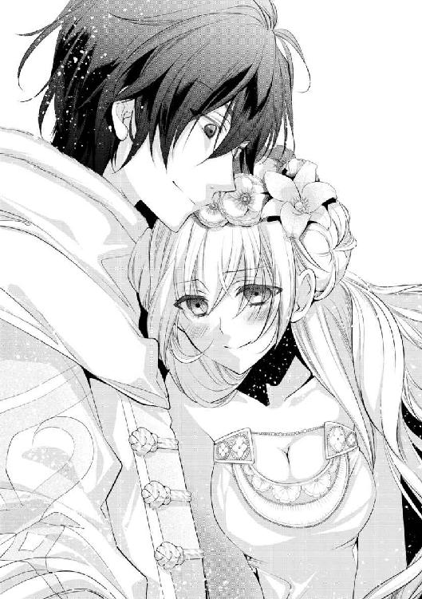
「ちょ、ちょっと待って！ 今は照れてる場合じゃないからね！」
いつの間にか邪悪に揺らめいている赤の瞳に、リーウェの胸は高鳴るばかりだ。それは敵対するべき色なのに、にじむ愛しさを拒むことはできない。
いつの間にか捕まった手は指を絡められていて、仲の良さを見せ付けるように繋いでいる。
せっかく秘密を一つなくしたのに、皆には言えない秘密がもう一つ――女神の使徒は、宿敵の下僕に恋をしている。
歓声に迎えられながら、咲き乱れる花と共にパレードは続いていく。
祝福された女神の使徒の隣に、最強の邪王の騎士を乗せて。
はじめまして。そして、まさかの二度目の方には平伏して御礼申し上げます。作者の香月です。この度は拙作をお手に取って下さり、誠に有難う御座います！
今回は初めての書き下ろしということで、好き勝手に趣味を詰め込ませていただきました。相変わらずバトルとお砂糖まみれの話になってしまいましたが、ほんの少しでもお楽しみいただけたなら幸いです。作者はとても楽しかったです！
前作に引き続き、最後まで導いて下さった担当Ｈ様。本当に本当にお世話になりました！ 夜間の打ち合わせが多かったにも関わらず、何時間も真剣にお付き合いいただき、おかげ様で何とか形にすることができました。邪神がただのヘタレだったり、イーノスが攻略対象になったのもいい思い出です。（※文庫では攻略できません）
今作を彩るイラストを手がけて下さった増田先生。お忙しい中お受け下さり本当に有難う御座います！ リーウェ可愛すぎて作者が変態になりかけましたが、何とか塀の向こうに行くことなく刊行できそうです。悶えすぎて一時日本語を忘れました。日本警察には捕まらなくても、ギデオンにはボコられそうです。ご褒美ですね。
今作に関わって下さった全ての皆様。応援してくれた家族と職場の仲間たち。そして、この本をお手に取って下さっている貴方様。本当に、本当に有難う御座います！ 今回はあとがきが四ページもできてしまったので、残りは二章でのギデオン視点の小話を置いておきます。あとがきから読む方はあまりいらっしゃらないとは思いますが、念のため二章を読んでから来て下さると「あれか」と楽しんでいただけると思います多分（笑）。溺愛騎士も苦労しているのです。
それでは、またいつか、どこかでお会いできることを願って！
＊ ＊ ＊
（......細い、首だ）
伸ばした手の中、それも片手の掌に収まってしまった細すぎるそれに、驚きを通り越して戸惑いすら覚えた。
時刻は夜明け前。まだ夜中の暗さを残す騎士団宿舎の部屋の中で、最愛の少女はすやすやと健やかな寝息をたてて眠っている。
侵入者が、それも男がベッドのすぐ傍にいるというのに、全く気付かないなんて。
（それが俺だから、というのもあるだろうが。果たして喜ぶべきなのか）
少しでも力を入れれば、この手は首を絞めて窒息させられるだろう。それどころか、骨を折ることも、この頭を切り落とすことすら容易い。
なのに、リーウェは可愛らしい寝顔を浮かべたままだ。無防備にも程がある。
「全く、人の気も知らないで」
今夜だって、勝手に部屋を抜け出したと思えば、どこぞの小娘を助けるために怪我をしていた。リーウェの身の方が余程大切なのに、どうしてわかってくれないのか。
部屋にいないと気付いた時、こっちは心臓が止まりそうだったというのに。こうして心配して様子を見に来るのも、何だか馬鹿らしくなってきた。
「この大馬鹿め」
首にかけた手を離し、彼女の眠るベッドの中に潜り込む。さすがにここまでやれば気付くだろうと思ったが......。
「......んー......むぅ、ふふ......」
何ごとかを呟いた後、あろうことかリーウェは俺にすり寄ってきた。男とは違う柔らかな体が、薄い寝間着ごしにぴったりとくっついてくる。
「......嘘だろ。何の拷問だ」
引き剥がそうとするも、細い腕は絡みついて離そうとしない。爽やかな石鹸の匂いと、リーウェ本人の甘い香りが、意識せずとも鼻腔をくすぐる。
「リーウェ、おい離れろ。襲われたいのか？」
「......すぅ」
良い夢でも見ているのだろうか。笑みの形に口唇をゆるめて、規則正しい寝息が続く。俺を抱き枕にしたまま。
「............もう知らん」
ここまで無防備に身を預けられては、手を下す意味でも違う意味でも、襲う気も失せる。さすがに少々狭いが、野宿と比べれば十分快適だ。
「おやすみ、リーウェ」
燃えるような赤髪に、そっと口付けて目を閉じる。俺も疲れていたのだろう。睡魔はすぐに迎えにきた。重なる心音を子守唄に、意識は深く落ちていく。
――目覚めた彼女から理不尽な平手打ちを受けるまで、あと二時間。
白騎士団のひみつの王女様
楽園の使徒に一輪の花を
２０１５年９月１日 初版発行
著 者 香月 航
発行者 杉野庸介
発行所 株式会社一迅社
〒１６０―００２２
東京都新宿区新宿２―５―10 成信ビル８Ｆ
制 作 大日本印刷株式会社
©香月航／一迅社
本書はフィクションです。実際の人物・団体・事件などには関係ありません。
本書の内容を無断で複製、複写、放送、データ配信等することは、堅くお断りいたします。